Wed, 07 Mar 2012 10:35:00 GMT
'Los Idus de Marzo', ¿existen los políticos honrados?
'Los Idus de Marzo', ¿existen los políticos honrados?
La política no es un tema que el séptimo arte haya tratado tan a menudo como la importancia que tienen sus practicantes en la sociedad en la que vivimos. Es cierto que podríamos decir que no son más que una especie de delegados de lujo de la banca y grupos de presión y que lo que realmente le importe a la gente será ignorado a la velocidad del rayo. En cambio, para otras cosas se harán los cambios necesarios a la velocidad de la luz. Y luego esperarán que la gente tenga fe en la democracia y en la capacidad de nuestros parlamentarios para sacar adelante la grave crisis que estamos padeciendo. Lamentable. Sin embargo, el cine se ha especializado más en contar la historia de políticos idealistas que se han ido perdiendo por el camino hasta acabar siendo igual de corruptos que aquellos contra los que juraron luchar. Me vienen a la mente casos como ‘El Político’, ‘Ciudadano Bob Roberts’ o ‘Primary Colors’, ya que en todas ellas acababa sucediendo algo por el estilo. Hay una gran excepción en ‘Caballero sin espada’, pero no se me ocurre ningún otro director aparte de Frank Capra capaz de lidiar con un tema tan peliagudo con una combinación de idealismo e ingenuidad sin resultar irritante. Y ese es el reto que se le presenta a George Clooney con ‘Los Idus de Marzo’: ¿Conseguirá demostrar que se puede defender la honradez de los políticos, incluso de alguien que parece absolutamente intachable, o es inevitable que aparezca algún fallo de gravedad en su camino por ascender al poder? ‘Los Idus de Marzo’ nos sitúa en plena campaña para elegir al candidato demócrata para las elecciones presidenciales en USA. Hay dos opciones claras: Mike Morris (Clooney), un hombre idealista al que las encuestas dan como claro favorito para ser presidente de salir elegido aspirante por su propio partido, y Ted Pullman, un político corriente que los republicanos ven como alguien perfectamente batible. Además, Morris lleva ventaja y ganar las votaciones demócratas en Ohio prácticamente le garantiza la nominación. Ése es el punto de partida que Clooney establece con solvencia, pero lo que le interesa a ‘Los Idus de Marzo’ no es el cara a cara entre los candidatos, sino lo que sucede entre bastidores, es decir, los tejemanejes de los responsables de la campaña para asegurar la victoria de su jefe. Sin embargo, eso no quiere decir que los idealismos queden de lado. El emergente Ryan Gosling da vida al segundo de a bordo en el grupo responsable de la campaña de Morris. El protagonista de ‘Drive’ es el auténtico motor de la historia, dando vida a un personaje que recuerda bastante al que tenía Adrian Lester en ‘Primary colors’: Stephen Meyers es un hombre que sólo defiende aquello en lo que realmente cree, y Morris es el candidato ideal, una especie de pariente lejano de aquellos tiempos en los que Barack Obama prometía un cambio que nunca llegó a producirse. Gosling ofrece una actuación impecable en un personaje complicado, ya que va evolucionando progresivamente y él ha de cambiar la expresión de su rostro para transmitir al público los diferentes estados emocionales de su personaje. De no ser por eso, ‘Los Idus de Marzo’ correría un grave peligro de desmoronarse, porque hay varios aspectos en los que la película está muy por debajo del trabajo de Gosling. Uno esperaría que una película que lidia con los efectos del poder sobre el individuo tuviera un guión de hierro que no flaquease a la hora de presentárselo al espectador, pero no es así. Hacia la mitad del relato, el espectador descubre algo decisivo en la historia que cambia nuestra percepción acerca de varios personajes, y es un algo para lo que se habían ido introduciendo pequeñas cosas que, una vez descubierto, uno pudiera pensar que cómo no había caído antes en esa posibilidad. El problema es que este giro se antoja extremadamente tramposo, ya que esas falsas pistas no sirven más que como una excusa para justificar las críticas hacia un hecho que puede destruir la credibilidad de la película. ¿Es para tanto? Pues sí, porque ese cambio es el pilar fundamental de lo que sucede a partir de entonces. Hay que reconocer que el Clooney director sabe matizar las carencias del Clooney guionista (donde cuenta con la colaboración de Grant Heslov y Beau Willmon) al dar a ‘Los Idus de Marzo’ cierta aura de thriller, donde el espectador está más acostumbrado a pasar por algo los guiones tramposos, a la vez que no reniega de un enfoque realista. También es verdad que la historia, pese a ser terriblemente previsible, funciona muy bien hasta ese giro y también tras él, pero uno no termina de marginar la idea de que le están tomando un poco el pelo. Además, el Clooney director confía demasiado en la capacidad de impacto sobre su forma de retratar el sistema electoral americano cuando no es algo novedoso, por lo que su fuerza intrínseca se debilita. Y es que ‘Los Idus de Marzo’ no deja de ser una fábula moral en la que la ascensión a un cargo político de privilegio podría intercambiarse perfectamente con la lucha de dos candidatos por hacerse con el control de una importante empresa. La política, por desgracia, carece de auténtica relevancia y sus revelaciones son algo que se huele a un kilómetro de distancia. A cambio, Clooney cree tanto en lo que cuenta (casi podríamos decir que es víctima de su propio idealismo) que eso es algo que se nota y logra contagiar algo de su entusiasmo al espectador, sobre todo gracias a la actuación de Gosling. Ya he mencionado varias veces el gran trabajo de Ryan Gosling, pero eso no quiere decir que el resto del reparto no esté casi a su altura. Desde un George Clooney casi en la sombra que sabe jugar con su actuación, ajustándola siempre a las necesidades del mejorable guión, hasta el falso dúo que forman los geniales Paul Giamatti y Philip Seymour Hoffman. ¿A qué viene lo de falso? Pues a que su interacción en pantalla es casi nula, pero son dos personajes antagónicos al ser los líderes de la campaña de cada uno de los dos candidatos. Cada uno muestra sus filias, fobias y estrategias, permitiendo ver al espectador una pequeña parte de lo que realmente pasará en la vida real. Es curioso que seguramente el apartado femenino sea el que menos alegrías ofrece, ya que sus dos personajes más relevantes roan peligrosamente lo esquemático: Evan Rachel Wood como la interina con la que el protagonista comienza un romance y Marisa Tomei como la periodista mosca cojonera. No es que ninguna de las dos haga un mal trabajo, pero es que juegan con unos personajes con bases débiles y/o discutibles que dificultan su cometido. El resto de intérpretes tiene apariciones algo más anecdóticas, pero todos cumplen bien con su función dramática en la historia. En definitiva, ‘Los Idus de Marzo’ es una buena película que se cree mejor de lo que realmente es, siendo quizá ése el motivo de que fuese prácticamente ignorada en la última edición de los Oscar, donde únicamente recibió una inmerecida nominación en la categoría de mejor guión adaptado. ¿Por qué inmerecida? Pues porque los grandes males de la película surgen de ahí, y sólo una buena labor en la dirección de Clooney y el estupendo trabajo de los actores (donde sí hubiese sido justo alguna nominación), en especial un inmenso Ryan Gosling, la elevan por encima de la media. Aún tendremos que esperar para ver la película definitiva sobre este tipo de cine político, mientras tanto habrá que conformarse con apreciables propuestas como ésta.
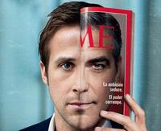
La política no es un tema que el séptimo arte haya tratado tan a menudo como la importancia que tienen sus practicantes en la sociedad en la que vivimos. Es cierto que podríamos decir que no son más que una especie de delegados de lujo de la banca y grupos de presión y que lo que realmente le importe a la gente será ignorado a la velocidad del rayo. En cambio, para otras cosas se harán los cambios necesarios a la velocidad de la luz. Y luego esperarán que la gente tenga fe en la democracia y en la capacidad de nuestros parlamentarios para sacar adelante la grave crisis que estamos padeciendo. Lamentable.
Sin embargo, el cine se ha especializado más en contar la historia de políticos idealistas que se han ido perdiendo por el camino hasta acabar siendo igual de corruptos que aquellos contra los que juraron luchar. Me vienen a la mente casos como ‘El Político’, ‘Ciudadano Bob Roberts’ o ‘Primary Colors’, ya que en todas ellas acababa sucediendo algo por el estilo. Hay una gran excepción en ‘Caballero sin espada’, pero no se me ocurre ningún otro director aparte de Frank Capra capaz de lidiar con un tema tan peliagudo con una combinación de idealismo e ingenuidad sin resultar irritante. Y ese es el reto que se le presenta a George Clooney con ‘Los Idus de Marzo’: ¿Conseguirá demostrar que se puede defender la honradez de los políticos, incluso de alguien que parece absolutamente intachable, o es inevitable que aparezca algún fallo de gravedad en su camino por ascender al poder?

‘Los Idus de Marzo’ nos sitúa en plena campaña para elegir al candidato demócrata para las elecciones presidenciales en USA. Hay dos opciones claras: Mike Morris (Clooney), un hombre idealista al que las encuestas dan como claro favorito para ser presidente de salir elegido aspirante por su propio partido, y Ted Pullman, un político corriente que los republicanos ven como alguien perfectamente batible. Además, Morris lleva ventaja y ganar las votaciones demócratas en Ohio prácticamente le garantiza la nominación. Ése es el punto de partida que Clooney establece con solvencia, pero lo que le interesa a ‘Los Idus de Marzo’ no es el cara a cara entre los candidatos, sino lo que sucede entre bastidores, es decir, los tejemanejes de los responsables de la campaña para asegurar la victoria de su jefe. Sin embargo, eso no quiere decir que los idealismos queden de lado.
El emergente Ryan Gosling da vida al segundo de a bordo en el grupo responsable de la campaña de Morris. El protagonista de ‘Drive’ es el auténtico motor de la historia, dando vida a un personaje que recuerda bastante al que tenía Adrian Lester en ‘Primary colors’: Stephen Meyers es un hombre que sólo defiende aquello en lo que realmente cree, y Morris es el candidato ideal, una especie de pariente lejano de aquellos tiempos en los que Barack Obama prometía un cambio que nunca llegó a producirse. Gosling ofrece una actuación impecable en un personaje complicado, ya que va evolucionando progresivamente y él ha de cambiar la expresión de su rostro para transmitir al público los diferentes estados emocionales de su personaje. De no ser por eso, ‘Los Idus de Marzo’ correría un grave peligro de desmoronarse, porque hay varios aspectos en los que la película está muy por debajo del trabajo de Gosling.

Uno esperaría que una película que lidia con los efectos del poder sobre el individuo tuviera un guión de hierro que no flaquease a la hora de presentárselo al espectador, pero no es así. Hacia la mitad del relato, el espectador descubre algo decisivo en la historia que cambia nuestra percepción acerca de varios personajes, y es un algo para lo que se habían ido introduciendo pequeñas cosas que, una vez descubierto, uno pudiera pensar que cómo no había caído antes en esa posibilidad. El problema es que este giro se antoja extremadamente tramposo, ya que esas falsas pistas no sirven más que como una excusa para justificar las críticas hacia un hecho que puede destruir la credibilidad de la película. ¿Es para tanto? Pues sí, porque ese cambio es el pilar fundamental de lo que sucede a partir de entonces.
Hay que reconocer que el Clooney director sabe matizar las carencias del Clooney guionista (donde cuenta con la colaboración de Grant Heslov y Beau Willmon) al dar a ‘Los Idus de Marzo’ cierta aura de thriller, donde el espectador está más acostumbrado a pasar por algo los guiones tramposos, a la vez que no reniega de un enfoque realista. También es verdad que la historia, pese a ser terriblemente previsible, funciona muy bien hasta ese giro y también tras él, pero uno no termina de marginar la idea de que le están tomando un poco el pelo. Además, el Clooney director confía demasiado en la capacidad de impacto sobre su forma de retratar el sistema electoral americano cuando no es algo novedoso, por lo que su fuerza intrínseca se debilita. Y es que ‘Los Idus de Marzo’ no deja de ser una fábula moral en la que la ascensión a un cargo político de privilegio podría intercambiarse perfectamente con la lucha de dos candidatos por hacerse con el control de una importante empresa. La política, por desgracia, carece de auténtica relevancia y sus revelaciones son algo que se huele a un kilómetro de distancia. A cambio, Clooney cree tanto en lo que cuenta (casi podríamos decir que es víctima de su propio idealismo) que eso es algo que se nota y logra contagiar algo de su entusiasmo al espectador, sobre todo gracias a la actuación de Gosling.
Ya he mencionado varias veces el gran trabajo de Ryan Gosling, pero eso no quiere decir que el resto del reparto no esté casi a su altura. Desde un George Clooney casi en la sombra que sabe jugar con su actuación, ajustándola siempre a las necesidades del mejorable guión, hasta el falso dúo que forman los geniales Paul Giamatti y Philip Seymour Hoffman. ¿A qué viene lo de falso? Pues a que su interacción en pantalla es casi nula, pero son dos personajes antagónicos al ser los líderes de la campaña de cada uno de los dos candidatos. Cada uno muestra sus filias, fobias y estrategias, permitiendo ver al espectador una pequeña parte de lo que realmente pasará en la vida real. Es curioso que seguramente el apartado femenino sea el que menos alegrías ofrece, ya que sus dos personajes más relevantes roan peligrosamente lo esquemático: Evan Rachel Wood como la interina con la que el protagonista comienza un romance y Marisa Tomei como la periodista mosca cojonera. No es que ninguna de las dos haga un mal trabajo, pero es que juegan con unos personajes con bases débiles y/o discutibles que dificultan su cometido. El resto de intérpretes tiene apariciones algo más anecdóticas, pero todos cumplen bien con su función dramática en la historia.

En definitiva, ‘Los Idus de Marzo’ es una buena película que se cree mejor de lo que realmente es, siendo quizá ése el motivo de que fuese prácticamente ignorada en la última edición de los Oscar, donde únicamente recibió una inmerecida nominación en la categoría de mejor guión adaptado. ¿Por qué inmerecida? Pues porque los grandes males de la película surgen de ahí, y sólo una buena labor en la dirección de Clooney y el estupendo trabajo de los actores (donde sí hubiese sido justo alguna nominación), en especial un inmenso Ryan Gosling, la elevan por encima de la media. Aún tendremos que esperar para ver la película definitiva sobre este tipo de cine político, mientras tanto habrá que conformarse con apreciables propuestas como ésta.


Tue, 06 Mar 2012 17:18:03 GMT
'Chronicle', monstruoso adolescente
'Chronicle', monstruoso adolescente
Andrew, esto no es un juego, ¿entiendes? ¡Estás haciendo daño a personas! Este pasado viernes llegó a nuestras carteleras ‘Chronicle’, una de las películas que más han gustado en Estados Unidos en lo (poco) que llevamos de año, un pequeño éxito sorpresa que desde su singular tráiler prometía aportar un enfoque diferente al manido tema de los superhéroes. No le quedaba otra. Partiendo de un escaso presupuesto, solo podía competir de esa forma en un mercado saturado por superproducciones, en un año en el que se estrenan la esperada reunión de los héroes de Marvel, ‘Los Vengadores’ (‘The Avengers’), el reinicio de las aventuras del hombre araña, ‘The Amazing Spider-Man’, y el final de la trilogía de Batman según Christopher Nolan, ‘El caballero oscuro: La leyenda renace’ (‘The Dark Knight Rises’). Sin una gran inversión para impresionantes efectos visuales ni estrellas en el reparto, solo puedes atraer al público asegurando que vas a ofrecerle una experiencia única, algo que no van a ver en otra película. Al menos, no este año. ‘Chronicle’ no es ninguna maravilla, ni siquiera una de las mejores películas que se han filmado sobre la figura del superhéroe, pero es, sin duda, un producto muy inteligente. El joven director Josh Trank demuestra talento y habilidad sacando un excelente partido a los 12 millones de dólares que al parecer ha costado su primer largometraje, donde no faltan las escenas espectaculares que uno espera encontrar en un relato donde los protagonistas poseen superpoderes. Y la clave es el punto de vista, ese viejo y necesario truco cinematográfico del que habla con maestría Alfred Hitchcock en su clásica entrevista con François Truffaut. Pero en lugar de hacerlo de una manera convencional, Trank apuesta por el cada vez más habitual recurso del “material encontrado” (“found footage”) y en lugar de esconder la cámara (de pretender que no está ahí) la incluye en la acción, siguiendo la estela de películas baratas y rentables como ‘El proyecto de la bruja de Blair’ (‘The Blair Witch Project’), ‘Paranormal Activity’, ‘[REC]’ o ‘Monstruoso’ (‘Cloverfield’). Así también se logra una apariencia de documental con el que se busca integrar mayor realismo en la acción. Casi 100 millones de dólares recaudados hasta el momento en todo el mundo demuestran que la decisión fue todo un acierto. Max Landis (hijo de John Landis) firma el guion de ‘Chronicle’, escrito a partir de una historia ideada en colaboración con el director (posiblemente tras haber visto ‘Akira’). La historia se centra en tres adolescentes, tres estudiantes de instituto, cuya existencia cambia por completo tras entrar en contacto con “algo” luminoso de enigmática procedencia que les proporciona habilidades sobrehumanas. Poco a poco descubren que pueden mover objetos con la mente, que son mucho más resistentes físicamente o que pueden volar. Plasmar esto en pantalla, y hacerlo atractivo para el público, suele requerir una inversión importante, pero ahí es donde entran en juego los recursos de la cámara subjetiva y el “found footage”. No es necesario explotar visualmente la acción o los superpoderes, crear ruidosas secuencias donde la puesta en escena tiene en cuenta a todos los personajes mientras lucen sus habilidades o rompen cosas, solo hay que centrarse en lo que muestra el encuadre de una cámara integrada en la ficción. De esta manera, es posible que ni siquiera se esté enfocando el lugar más espectacular, pero el espectador puede intuirlo u oírlo. Es un aprovechamiento económico del fuera de campo. Quizá el mayor problema de esta fórmula, en una película de estas características, con cámara en mano y mucho movimiento, es que te puedes cargar la vista de un buen número de espectadores. Personalmente no me pareció que la experiencia ‘Chronicle’ fuera tan mareante como ‘Cloverfield’, y eso que hay varias secuencias donde seguimos el vuelo o la caída de algún protagonista, pero sí aclaro que mi chica lo pasó fatal y estuvo a punto de marcharse de la sala. Ya me diréis si os pasó lo mismo. Narrativamente, lo más delicado de esta propuesta es hacer verosímil la presencia de la cámara dentro de la acción. Algo donde fallaba ‘Cloverfield’, mejor resuelto en ‘Paranormal Activity’. En ‘Chronicle’ no hay solo una cámara funcionando. Al principio la excusa es un tanto vaga, está relacionada con el carácter marginal de uno de los protagonistas, que además tiene problemas en casa; luego son los poderes los que animan a grabar, como parte de la diversión; más adelante, cuando el relato abandona el tono cómico, hay más puntos de vista. Trank y Landis han sido cuidadosos pero no pueden evitar que en ocasiones resulte increíble que alguien esté grabando lo que aparece en pantalla, tanto por el contenido como por la forma. Y creo que en la secuencia final se traiciona el juego insertando planos que nadie podría estar capturando (los primeros planos de Matt tumbado en el suelo). Siguiendo con los puntos débiles de la película, tarda demasiado en arrancar. La historia no se pone realmente interesante hasta casi la mitad del metraje, y no te puedes permitir eso cuando apenas tienes 80 minutos. Trank pierde demasiado tiempo luciendo los poderes de sus protagonistas, algo que tenía sentido en el tráiler para llamar la atención pero no tanto en la película, donde importa más seguir la influencia de los acontecimientos en la vida cotidiana de los personajes. Otra equivocación importante es forzar la transición a “villano” de uno de los chicos, producida a raíz de un incidente que justifica vergüenza y un enfado temporal, pero no la locura que le domina ni el enfrentamiento mortal con sus dos amigos. Y es una pena, porque hasta ese momento está muy cuidado (teniendo en cuenta que hablamos de una película pensada para divertir a un público joven) el aspecto humano y dramático de la historia, imagino que no solo porque los creadores buscan ofrecer algo más que un simple pasatiempo de acción y humor, como lo es la mayoría de los productos con superhéroes, sino también porque estaban pensando en el limitado presupuesto. Es más barato y sencillo filmar situaciones íntimas o domésticas que una persecución o una pelea. Otro aspecto muy positivo de ‘Chronicle’ es el trabajo interpretativo. Todos los actores están convincentes, no son papeles complicados y se resuelven con impecable eficacia. Imagino que sobre todo se destacará a Dane DeHaan (con cierto parecido a Leonardo DiCaprio) porque da vida al siempre interesante chico problemático, pero a mí el que me pareció más acertado fue Alex Russell, que tiene un papel menos jugoso en el que era fácil perderse y quedar eclipsado. Asimismo cabe destacar los minutos en los que aparece en escena el siempre estupendo Michael Kelly, encarnando al padre borracho y violento de Andrew. El director confiesa que él y Landis tienen ideas para una secuela, pero que de momento no se lo plantea y quiere buscar nuevos retos (ha negado que vaya a ocuparse de la nueva entrega de ‘Los 4 fantásticos’, por mucho que insistan algunos medios españoles). Quién sabe, igual con esta fábula de la adolescencia y la responsabilidad estamos asistiendo al nacimiento de una nueva saga de superhéroes. Si resulta tan entretenida y espectacular como ésta, por mí que vayan preparando ‘Chronicle 2’.
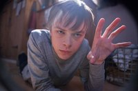
Andrew, esto no es un juego, ¿entiendes? ¡Estás haciendo daño a personas!
Este pasado viernes llegó a nuestras carteleras ‘Chronicle’, una de las películas que más han gustado en Estados Unidos en lo (poco) que llevamos de año, un pequeño éxito sorpresa que desde su singular tráiler prometía aportar un enfoque diferente al manido tema de los superhéroes. No le quedaba otra. Partiendo de un escaso presupuesto, solo podía competir de esa forma en un mercado saturado por superproducciones, en un año en el que se estrenan la esperada reunión de los héroes de Marvel, ‘Los Vengadores’ (‘The Avengers’), el reinicio de las aventuras del hombre araña, ‘The Amazing Spider-Man’, y el final de la trilogía de Batman según Christopher Nolan, ‘El caballero oscuro: La leyenda renace’ (‘The Dark Knight Rises’). Sin una gran inversión para impresionantes efectos visuales ni estrellas en el reparto, solo puedes atraer al público asegurando que vas a ofrecerle una experiencia única, algo que no van a ver en otra película. Al menos, no este año.
‘Chronicle’ no es ninguna maravilla, ni siquiera una de las mejores películas que se han filmado sobre la figura del superhéroe, pero es, sin duda, un producto muy inteligente. El joven director Josh Trank demuestra talento y habilidad sacando un excelente partido a los 12 millones de dólares que al parecer ha costado su primer largometraje, donde no faltan las escenas espectaculares que uno espera encontrar en un relato donde los protagonistas poseen superpoderes. Y la clave es el punto de vista, ese viejo y necesario truco cinematográfico del que habla con maestría Alfred Hitchcock en su clásica entrevista con François Truffaut. Pero en lugar de hacerlo de una manera convencional, Trank apuesta por el cada vez más habitual recurso del “material encontrado” (“found footage”) y en lugar de esconder la cámara (de pretender que no está ahí) la incluye en la acción, siguiendo la estela de películas baratas y rentables como ‘El proyecto de la bruja de Blair’ (‘The Blair Witch Project’), ‘Paranormal Activity’, ‘[REC]’ o ‘Monstruoso’ (‘Cloverfield’). Así también se logra una apariencia de documental con el que se busca integrar mayor realismo en la acción. Casi 100 millones de dólares recaudados hasta el momento en todo el mundo demuestran que la decisión fue todo un acierto.
Max Landis (hijo de John Landis) firma el guion de ‘Chronicle’, escrito a partir de una historia ideada en colaboración con el director (posiblemente tras haber visto ‘Akira’). La historia se centra en tres adolescentes, tres estudiantes de instituto, cuya existencia cambia por completo tras entrar en contacto con “algo” luminoso de enigmática procedencia que les proporciona habilidades sobrehumanas. Poco a poco descubren que pueden mover objetos con la mente, que son mucho más resistentes físicamente o que pueden volar. Plasmar esto en pantalla, y hacerlo atractivo para el público, suele requerir una inversión importante, pero ahí es donde entran en juego los recursos de la cámara subjetiva y el “found footage”. No es necesario explotar visualmente la acción o los superpoderes, crear ruidosas secuencias donde la puesta en escena tiene en cuenta a todos los personajes mientras lucen sus habilidades o rompen cosas, solo hay que centrarse en lo que muestra el encuadre de una cámara integrada en la ficción. De esta manera, es posible que ni siquiera se esté enfocando el lugar más espectacular, pero el espectador puede intuirlo u oírlo. Es un aprovechamiento económico del fuera de campo.
Quizá el mayor problema de esta fórmula, en una película de estas características, con cámara en mano y mucho movimiento, es que te puedes cargar la vista de un buen número de espectadores. Personalmente no me pareció que la experiencia ‘Chronicle’ fuera tan mareante como ‘Cloverfield’, y eso que hay varias secuencias donde seguimos el vuelo o la caída de algún protagonista, pero sí aclaro que mi chica lo pasó fatal y estuvo a punto de marcharse de la sala. Ya me diréis si os pasó lo mismo. Narrativamente, lo más delicado de esta propuesta es hacer verosímil la presencia de la cámara dentro de la acción. Algo donde fallaba ‘Cloverfield’, mejor resuelto en ‘Paranormal Activity’. En ‘Chronicle’ no hay solo una cámara funcionando. Al principio la excusa es un tanto vaga, está relacionada con el carácter marginal de uno de los protagonistas, que además tiene problemas en casa; luego son los poderes los que animan a grabar, como parte de la diversión; más adelante, cuando el relato abandona el tono cómico, hay más puntos de vista. Trank y Landis han sido cuidadosos pero no pueden evitar que en ocasiones resulte increíble que alguien esté grabando lo que aparece en pantalla, tanto por el contenido como por la forma. Y creo que en la secuencia final se traiciona el juego insertando planos que nadie podría estar capturando (los primeros planos de Matt tumbado en el suelo).
Siguiendo con los puntos débiles de la película, tarda demasiado en arrancar. La historia no se pone realmente interesante hasta casi la mitad del metraje, y no te puedes permitir eso cuando apenas tienes 80 minutos. Trank pierde demasiado tiempo luciendo los poderes de sus protagonistas, algo que tenía sentido en el tráiler para llamar la atención pero no tanto en la película, donde importa más seguir la influencia de los acontecimientos en la vida cotidiana de los personajes. Otra equivocación importante es forzar la transición a “villano” de uno de los chicos, producida a raíz de un incidente que justifica vergüenza y un enfado temporal, pero no la locura que le domina ni el enfrentamiento mortal con sus dos amigos. Y es una pena, porque hasta ese momento está muy cuidado (teniendo en cuenta que hablamos de una película pensada para divertir a un público joven) el aspecto humano y dramático de la historia, imagino que no solo porque los creadores buscan ofrecer algo más que un simple pasatiempo de acción y humor, como lo es la mayoría de los productos con superhéroes, sino también porque estaban pensando en el limitado presupuesto. Es más barato y sencillo filmar situaciones íntimas o domésticas que una persecución o una pelea.
Otro aspecto muy positivo de ‘Chronicle’ es el trabajo interpretativo. Todos los actores están convincentes, no son papeles complicados y se resuelven con impecable eficacia. Imagino que sobre todo se destacará a Dane DeHaan (con cierto parecido a Leonardo DiCaprio) porque da vida al siempre interesante chico problemático, pero a mí el que me pareció más acertado fue Alex Russell, que tiene un papel menos jugoso en el que era fácil perderse y quedar eclipsado. Asimismo cabe destacar los minutos en los que aparece en escena el siempre estupendo Michael Kelly, encarnando al padre borracho y violento de Andrew. El director confiesa que él y Landis tienen ideas para una secuela, pero que de momento no se lo plantea y quiere buscar nuevos retos (ha negado que vaya a ocuparse de la nueva entrega de ‘Los 4 fantásticos’, por mucho que insistan algunos medios españoles). Quién sabe, igual con esta fábula de la adolescencia y la responsabilidad estamos asistiendo al nacimiento de una nueva saga de superhéroes. Si resulta tan entretenida y espectacular como ésta, por mí que vayan preparando ‘Chronicle 2’.
Tue, 06 Mar 2012 14:46:24 GMT
IX Muestra de Cine Fantástico de Madrid | De 'John Carter' a 'Lobos de Arga'
IX Muestra de Cine Fantástico de Madrid | De 'John Carter' a 'Lobos de Arga'
Los cinéfilos madrileños están de enhorabuena, ya que este próximo jueves 8 de marzo comienza la novena edición de la Muestra Syfy de Cine Fantástico de Madrid, con la novedad de que este año cambian de sede, ya que abandonan el cine Palafox para pasar a celebrarse en el cine Callao. Además, supone el regreso de Leticia Dolera, la cual no pudo ocupar el puesto de presentadora el año pasado al estar ocupada con un rodaje, por lo cual fue Alexandra Jiménez la que se ocupó su puesto. El otro gran cambio es que este año parece que va a haber una sesión dedicada al mundo del cortometraje. La esperada ‘John Carter’ será la encargada de abrir la muestra. Como la mayoría ya sabréis, esta película supone el debut en el cine de acción real de Andrew Stanton, el responsable de varias producciones Pixar como ‘Wall-E’ o ‘Buscando a Nemo’ que ha optado por adaptar una célebre novela de Edgar Rice Burroughs para intentar replicar el éxito de Brad Bird con ‘Misión Imposible – Protocolo fantasma’. ‘John Carter’ llega a los cines de toda España al día siguiente, con lo cual el resto de españoles no tendréis que esperar mucho para poder verla. El otro estreno destacado de marzo que podrá verse es ‘Lorax: En busca de la trúfula dorada’, nueva producción de los creadores de ‘Gru. Mi villano favorito’ que ha arrasado en la taquilla americana en el fin de semana de su estreno. En este caso, el estreno español está previsto para el próximo 30 de marzo. Además, se llevarán a cabo interesantes actividades especiales como el segundo paso de la experiencia Phenomena en la capital, donde podrán verse ‘Ultimátum a la Tierra’ y ‘El planeta de los simios’. Eso sí, las versiones originales y no sus poco aconsejables remakes. Por su parte, Trash entre amigos repite aparición en la muestra, donde Nacho Vigalondo, Raúl Minchinela, Señor Ausente y Rubén Lardín se encargarán de comentar (y criticar jocosamente) en directo ‘Stonehenge Apocalypse’, película de la que muchos no habréis oído hablar en vuestra vida por un buen motivo. La programación se completa con la vampírica ‘Stake Land’ (que ya comentó Alberto por aquí), la alemana ‘Hell’, ls psicotrónica ‘Hobo with a shotgun’, ‘The prodigies 3D’, ‘Atrocious’, ‘The woman’, ‘Apollo 18’ (dirigida por el español Gonzalo López-Gallego), ’4:44 Last day on earth’, ‘The innkeepers’ y ‘Lobos de arga’, primera película española en ser elegida la favorita del público en la Semana de Cine Fantástico y de Terror de San Sebastián, y que será la encargada de cerrar la Muestra el próximo domingo día 11 de marzo. Vía | Web oficial (donde encontraréis más información sobre horarios y precios)
Los cinéfilos madrileños están de enhorabuena, ya que este próximo jueves 8 de marzo comienza la novena edición de la Muestra Syfy de Cine Fantástico de Madrid, con la novedad de que este año cambian de sede, ya que abandonan el cine Palafox para pasar a celebrarse en el cine Callao. Además, supone el regreso de Leticia Dolera, la cual no pudo ocupar el puesto de presentadora el año pasado al estar ocupada con un rodaje, por lo cual fue Alexandra Jiménez la que se ocupó su puesto. El otro gran cambio es que este año parece que va a haber una sesión dedicada al mundo del cortometraje.
La esperada ‘John Carter’ será la encargada de abrir la muestra. Como la mayoría ya sabréis, esta película supone el debut en el cine de acción real de Andrew Stanton, el responsable de varias producciones Pixar como ‘Wall-E’ o ‘Buscando a Nemo’ que ha optado por adaptar una célebre novela de Edgar Rice Burroughs para intentar replicar el éxito de Brad Bird con ‘Misión Imposible – Protocolo fantasma’. ‘John Carter’ llega a los cines de toda España al día siguiente, con lo cual el resto de españoles no tendréis que esperar mucho para poder verla. El otro estreno destacado de marzo que podrá verse es ‘Lorax: En busca de la trúfula dorada’, nueva producción de los creadores de ‘Gru. Mi villano favorito’ que ha arrasado en la taquilla americana en el fin de semana de su estreno. En este caso, el estreno español está previsto para el próximo 30 de marzo.
Además, se llevarán a cabo interesantes actividades especiales como el segundo paso de la experiencia Phenomena en la capital, donde podrán verse ‘Ultimátum a la Tierra’ y ‘El planeta de los simios’. Eso sí, las versiones originales y no sus poco aconsejables remakes. Por su parte, Trash entre amigos repite aparición en la muestra, donde Nacho Vigalondo, Raúl Minchinela, Señor Ausente y Rubén Lardín se encargarán de comentar (y criticar jocosamente) en directo ‘Stonehenge Apocalypse’, película de la que muchos no habréis oído hablar en vuestra vida por un buen motivo.
La programación se completa con la vampírica ‘Stake Land’ (que ya comentó Alberto por aquí), la alemana ‘Hell’, ls psicotrónica ‘Hobo with a shotgun’, ‘The prodigies 3D’, ‘Atrocious’, ‘The woman’, ‘Apollo 18’ (dirigida por el español Gonzalo López-Gallego), ’4:44 Last day on earth’, ‘The innkeepers’ y ‘Lobos de arga’, primera película española en ser elegida la favorita del público en la Semana de Cine Fantástico y de Terror de San Sebastián, y que será la encargada de cerrar la Muestra el próximo domingo día 11 de marzo.
Vía | Web oficial (donde encontraréis más información sobre horarios y precios)
Mon, 05 Mar 2012 23:22:05 GMT
Taquilla USA: Lorax arrasa
Taquilla USA: Lorax arrasa
He aquí el primer bombazo de taquilla del año 2012. La película animada ‘Lorax: En busca de la trúfula perdida’ (‘Dr. Seuss’ The Lorax’) dirigida por Chris Renaud y Kyle Balda ha arrasado en su estreno en salas norteamericanas logrando una recaudación de 70 millones de dólares. Una salvajada. Danny DeVito, Zac Efron, Taylor Swift, Ed Helms y Betty White prestan sus voces a los personajes principales de esta adaptación de un cuento infantil de Dr. Seuss, sobre un chico que busca el objeto que le permitirá ganarse el afecto de la chica de sus sueños (por favor, haced alguna broma sucia o machista, que a mí no me dejan) para lo cual deberá descubrir la leyenda del Lorax. En la popular IMDb la puntúan con un 6,6 y en la seria Metacritic apenas llega al aprobado. Se podrá ver en España a partir del 30 de marzo. Solo otra novedad ha conseguido colarse en el top 10 de la taquilla USA. Se trata de ‘Project X’, otra de esas comedias en cuyo cartel se indica claramente que alguno de los productores o de los guionistas participó en ‘Resacón en las Vegas’ (‘The Hangover’). Nima Nourizadeh dirige esta comedia sobre tres estudiantes de instituto que montan una gran fiesta; el problema es que todo ha quedado grabado y saldrán a la luz vergonzosas imágenes. Tiene un 6 en IMDb y un 5 en Metacritic. Lo creáis o no, ya tiene fecha de estreno en nuestro país: 4 de mayo. El mismo viernes que nos llega la nueva entrega de ‘American Pie’. Ostras, qué ilusión. PD: El viernes se estrenan ‘John Carter’, ‘Silent House’, ‘Friends with Kids’ y ‘La pesca del salmón en Yemen’, entre otras. Veremos si la superproducción de Disney es ese fracaso comercial que muchos auguran. Datos | IMDb
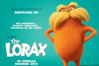
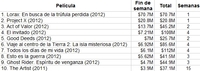
He aquí el primer bombazo de taquilla del año 2012. La película animada ‘Lorax: En busca de la trúfula perdida’ (‘Dr. Seuss’ The Lorax’) dirigida por Chris Renaud y Kyle Balda ha arrasado en su estreno en salas norteamericanas logrando una recaudación de 70 millones de dólares. Una salvajada. Danny DeVito, Zac Efron, Taylor Swift, Ed Helms y Betty White prestan sus voces a los personajes principales de esta adaptación de un cuento infantil de Dr. Seuss, sobre un chico que busca el objeto que le permitirá ganarse el afecto de la chica de sus sueños (por favor, haced alguna broma sucia o machista, que a mí no me dejan) para lo cual deberá descubrir la leyenda del Lorax. En la popular IMDb la puntúan con un 6,6 y en la seria Metacritic apenas llega al aprobado. Se podrá ver en España a partir del 30 de marzo.
Solo otra novedad ha conseguido colarse en el top 10 de la taquilla USA. Se trata de ‘Project X’, otra de esas comedias en cuyo cartel se indica claramente que alguno de los productores o de los guionistas participó en ‘Resacón en las Vegas’ (‘The Hangover’). Nima Nourizadeh dirige esta comedia sobre tres estudiantes de instituto que montan una gran fiesta; el problema es que todo ha quedado grabado y saldrán a la luz vergonzosas imágenes. Tiene un 6 en IMDb y un 5 en Metacritic. Lo creáis o no, ya tiene fecha de estreno en nuestro país: 4 de mayo. El mismo viernes que nos llega la nueva entrega de ‘American Pie’. Ostras, qué ilusión.
PD: El viernes se estrenan ‘John Carter’, ‘Silent House’, ‘Friends with Kids’ y ‘La pesca del salmón en Yemen’, entre otras. Veremos si la superproducción de Disney es ese fracaso comercial que muchos auguran.
Datos | IMDb
Mon, 05 Mar 2012 16:03:00 GMT
'La llave de Sarah', lavando la mala conciencia
'La llave de Sarah', lavando la mala conciencia
Había dejado pasar ‘La llave de Sarah’ (‘Elle s’appelait Sarah’, 2010), de Gilles Paquet-Brenner, cuando se estrenó en cines, ya que temía un tratamiento algo pastoso de un tema ya expuesto otras veces, algunas con enorme vigor. Eso no significó me la descartase por completo. Ahora he aprovechado una emisión televisiva para ponerme al día con este título y comprobar que mis sospechas estaban más que fundamentadas. Si alguien me preguntase, como la vez anterior, a qué sección pertenece esta crítica, podría inventarme una llamada “películas que dejé pasar“. Mientras la protagonista es Sarah, una niña que ocultó a su hermano para evitar que se lo llevasen junto a ella y sus padres a un campo de concentración, para más adelante ser deportado; el film posee fuerza y se presenta duro, al retrotraernos a esa mezcla de tristeza e indignación que producen los relatos sobre el holocausto, incomprensible y sorprendente todavía, por muchas veces que el cine nos lo haya acercado. Esta faceta es la más lograda de la cinta, pero ni mucho menos la sitúa a la altura de otros films sobre la misma tragedia. Para convertir una reivindicación en ficción lo lícito y lógico es tomar a una única persona, como se hace aquí con Sarah, quien se aferró a la llave que encerraba a su hermanito, con la intención de rescatarlo a la mínima oportunidad. No obstante, su historia individual es tan excepcional, que se pierde, por lo tanto, la finalidad anterior, ya que ella no representa a todos los afectados por los sucesos. El recurso de hacer convivir dos épocas en paralelo, del que tan a menudo se echa mano para evitar en el espectador perezoso el rechazo a las ambientaciones pretéritas, en este caso posee una justificación profunda, ya que alude a la mala conciencia del país vecino. Si los alemanes, tras haber sido tan machacados al respecto ya parecen haber purgado, los franceses cuentan con el agravante de haber pasado por encima durante mucho tiempo de los episodios más oscuros y cuestionables de su Historia. Así, los saltos al presente del inicio de la cinta no estorban, ya que en ellos la periodista saca a colación el hecho de que Francia oculte con tanta habilidad sus afiliaciones durante la II Guerra Mundial y cuestiona, con sus preguntas a los vecinos del velódromo y su conversación con sus jóvenes compañeros, lo que cualquiera habría hecho de haberse encontrado en aquel lugar y en aquel momento. Un presente mucho menos intenso que el atroz pasado El arranque de ‘La llave de Sarah’ se nutre de pesquisas y descubrimientos dignos de un buen thriller y una reproducción, no exenta de dimensión crítica, de las atrocidades de los colaboracionistas. La capacidad para conmover y el interés terminan a partir del instante más duro y desagradable (no especifico para no destripar nada a quienes no la hayan visto, pero creo que con esos datos es suficiente para quienes sí conozcan el film). Esa revelación que todo lo cambia y que ocurre antes de la mitad del metraje, quizá debería haberse reservado para el final y la narración podría haberse centrado en lo que ocurre antes. Desde este momento, Sarah deja de aparecer casi por completo y el enfoque se centra en Juliet. A partir de aquí, lo que contemplamos se asemeja a un telefilm de las tres y media, cargado de emociones familiares de poca envergadura dramática. La búsqueda de la catarsis o de la limpieza de conciencia de la protagonista, que puede que sí se comprendiese en la novela de Tatiana de Rosnay, aquí queda injustificada. Si bien entendemos el interés por completar el artículo, la escasa relación de Juliet con Sarah –a través de la ocupación de la casa por parte de los abuelos de su marido– supone un hilo demasiado fino para que compartamos esta obsesión tan personal. Como su cercanía es poca, se incluye al personaje de William, interpretado por Aidan Quinn, cuya presencia no elude su condición de componenda para dar a aumentar la motivación. La trama matrimonial de la investigadora no es más que un truco que se introduce con la idea de que los espectadores empaticen mejor con esta mujer, creyendo que así los sucesos del pasado interesarán más, cuando en realidad son estos los únicos que poseen fuerza propia. Quizá lo mejor del conjunto es la actriz que interpreta a Sarah de niña: Mélusine Mayance (‘Ricky’), en la que se puede adivinar una gran personalidad, aunque dentro del conjunto no siempre resulte creíble ni caiga simpática. La labor del director, que hace honor a su primer apellido, no pasa ni por extraer buenos trabajos de los actores ni por saber transmitir sentimientos que los hechos de por sí ya casi le están regalando. Ni siquiera Kristin Scott Thomas, con su presencia elegante, evita que el film se convierta en el reflejo de las frustraciones y luchas conyugales de una mujer de mediana edad. Niels Arestrup, a quien habíamos visto en ‘Un profeta’, apenas tiene papel, pues lo suyo es más bien una aparición conveniente. Frédéric Pierrot puede estar en el extremo opuesto al suponer lo peor de reparto, aunque quizá no por culpa suya, sino por la definición tan maniquea y partidista de su personaje. Resumiendo, es mucho lo que ‘La llave de Sarah’ parece que va a aportar durante sus primeros instantes. Pero todo se torna en decepciones, según van avanzando los minutos y a medida que el drama va disminuyendo, además de trasladarse desde un intenso episodio del pasado a una cotidiana situación actual en la que hemos comprendido tan mal las motivaciones de la protagonista que nos cuesta situarnos a su lado para saber si logrará o no sus propósitos.
Había dejado pasar ‘La llave de Sarah’ (‘Elle s’appelait Sarah’, 2010), de Gilles Paquet-Brenner, cuando se estrenó en cines, ya que temía un tratamiento algo pastoso de un tema ya expuesto otras veces, algunas con enorme vigor. Eso no significó me la descartase por completo. Ahora he aprovechado una emisión televisiva para ponerme al día con este título y comprobar que mis sospechas estaban más que fundamentadas. Si alguien me preguntase, como la vez anterior, a qué sección pertenece esta crítica, podría inventarme una llamada “películas que dejé pasar“.
Mientras la protagonista es Sarah, una niña que ocultó a su hermano para evitar que se lo llevasen junto a ella y sus padres a un campo de concentración, para más adelante ser deportado; el film posee fuerza y se presenta duro, al retrotraernos a esa mezcla de tristeza e indignación que producen los relatos sobre el holocausto, incomprensible y sorprendente todavía, por muchas veces que el cine nos lo haya acercado. Esta faceta es la más lograda de la cinta, pero ni mucho menos la sitúa a la altura de otros films sobre la misma tragedia. Para convertir una reivindicación en ficción lo lícito y lógico es tomar a una única persona, como se hace aquí con Sarah, quien se aferró a la llave que encerraba a su hermanito, con la intención de rescatarlo a la mínima oportunidad. No obstante, su historia individual es tan excepcional, que se pierde, por lo tanto, la finalidad anterior, ya que ella no representa a todos los afectados por los sucesos.
El recurso de hacer convivir dos épocas en paralelo, del que tan a menudo se echa mano para evitar en el espectador perezoso el rechazo a las ambientaciones pretéritas, en este caso posee una justificación profunda, ya que alude a la mala conciencia del país vecino. Si los alemanes, tras haber sido tan machacados al respecto ya parecen haber purgado, los franceses cuentan con el agravante de haber pasado por encima durante mucho tiempo de los episodios más oscuros y cuestionables de su Historia. Así, los saltos al presente del inicio de la cinta no estorban, ya que en ellos la periodista saca a colación el hecho de que Francia oculte con tanta habilidad sus afiliaciones durante la II Guerra Mundial y cuestiona, con sus preguntas a los vecinos del velódromo y su conversación con sus jóvenes compañeros, lo que cualquiera habría hecho de haberse encontrado en aquel lugar y en aquel momento.
Un presente mucho menos intenso que el atroz pasado
El arranque de ‘La llave de Sarah’ se nutre de pesquisas y descubrimientos dignos de un buen thriller y una reproducción, no exenta de dimensión crítica, de las atrocidades de los colaboracionistas. La capacidad para conmover y el interés terminan a partir del instante más duro y desagradable (no especifico para no destripar nada a quienes no la hayan visto, pero creo que con esos datos es suficiente para quienes sí conozcan el film). Esa revelación que todo lo cambia y que ocurre antes de la mitad del metraje, quizá debería haberse reservado para el final y la narración podría haberse centrado en lo que ocurre antes. Desde este momento, Sarah deja de aparecer casi por completo y el enfoque se centra en Juliet.
A partir de aquí, lo que contemplamos se asemeja a un telefilm de las tres y media, cargado de emociones familiares de poca envergadura dramática. La búsqueda de la catarsis o de la limpieza de conciencia de la protagonista, que puede que sí se comprendiese en la novela de Tatiana de Rosnay, aquí queda injustificada. Si bien entendemos el interés por completar el artículo, la escasa relación de Juliet con Sarah –a través de la ocupación de la casa por parte de los abuelos de su marido– supone un hilo demasiado fino para que compartamos esta obsesión tan personal. Como su cercanía es poca, se incluye al personaje de William, interpretado por Aidan Quinn, cuya presencia no elude su condición de componenda para dar a aumentar la motivación. La trama matrimonial de la investigadora no es más que un truco que se introduce con la idea de que los espectadores empaticen mejor con esta mujer, creyendo que así los sucesos del pasado interesarán más, cuando en realidad son estos los únicos que poseen fuerza propia.
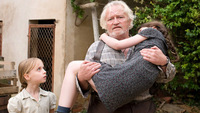
Quizá lo mejor del conjunto es la actriz que interpreta a Sarah de niña: Mélusine Mayance (‘Ricky’), en la que se puede adivinar una gran personalidad, aunque dentro del conjunto no siempre resulte creíble ni caiga simpática. La labor del director, que hace honor a su primer apellido, no pasa ni por extraer buenos trabajos de los actores ni por saber transmitir sentimientos que los hechos de por sí ya casi le están regalando. Ni siquiera Kristin Scott Thomas, con su presencia elegante, evita que el film se convierta en el reflejo de las frustraciones y luchas conyugales de una mujer de mediana edad. Niels Arestrup, a quien habíamos visto en ‘Un profeta’, apenas tiene papel, pues lo suyo es más bien una aparición conveniente. Frédéric Pierrot puede estar en el extremo opuesto al suponer lo peor de reparto, aunque quizá no por culpa suya, sino por la definición tan maniquea y partidista de su personaje.
Resumiendo, es mucho lo que ‘La llave de Sarah’ parece que va a aportar durante sus primeros instantes. Pero todo se torna en decepciones, según van avanzando los minutos y a medida que el drama va disminuyendo, además de trasladarse desde un intenso episodio del pasado a una cotidiana situación actual en la que hemos comprendido tan mal las motivaciones de la protagonista que nos cuesta situarnos a su lado para saber si logrará o no sus propósitos.
Mon, 05 Mar 2012 11:26:43 GMT
Joel Kinnaman es el nuevo RoboCop
Joel Kinnaman es el nuevo RoboCop
Tenemos al nuevo Robocop. Se habló mucho de Michael Fassbender, la opción favorita del director José Padilha, pero finalmente el papel protagonista de la nueva versión de ‘RoboCop’ ha caído en manos del poco conocido Joel Kinnaman, ya contratado por el estudio MGM. De origen sueco, a este joven actor lo hemos podido ver en ‘Dinero fácil’ (‘Snabba Cash’) y ‘El invitado’ (‘Safe House’), ambas dirigidas por Daniel Espinosa, y en la serie ‘The Killing’. Gracias a Padilha tendrá su primera gran oportunidad en Hollywood encarnando a Alex Murphy. Recordemos que el remake de ‘RoboCop’ se anunció en 2008 y que, tras un breve interés de Darren Aronofsky, el año pasado MGM incorporó a Padilha como director. El brasileño, responsable de la intensa ‘Tropa de élite’, se dedicó por completo al proyecto desde entonces, escribiendo el guion junto a Josh Zetumer; recientemente se contrató a otro guionista, Nick Schenk, para pulir el material. El rodaje comenzará este verano y el estreno se espera para 2013. Como sabéis, la original ‘RoboCop’ se estrenó en 1987, estaba dirigida por Paul Verhoeven y protagonizada por Peter Weller, quien interpretaba a un agente de policía que volvía a la vida convertido en un cyborg, el arma definitiva contra el crimen. ¿Hay ganas de ver el remake o no interesa en absoluto? PD: Padilha ha comentado que su película se centrará en algo que se omitía en la primera ‘RoboCop’: la transición de hombre a máquina. Vía | Deadline
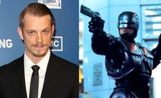
Tenemos al nuevo Robocop. Se habló mucho de Michael Fassbender, la opción favorita del director José Padilha, pero finalmente el papel protagonista de la nueva versión de ‘RoboCop’ ha caído en manos del poco conocido Joel Kinnaman, ya contratado por el estudio MGM. De origen sueco, a este joven actor lo hemos podido ver en ‘Dinero fácil’ (‘Snabba Cash’) y ‘El invitado’ (‘Safe House’), ambas dirigidas por Daniel Espinosa, y en la serie ‘The Killing’. Gracias a Padilha tendrá su primera gran oportunidad en Hollywood encarnando a Alex Murphy.
Recordemos que el remake de ‘RoboCop’ se anunció en 2008 y que, tras un breve interés de Darren Aronofsky, el año pasado MGM incorporó a Padilha como director. El brasileño, responsable de la intensa ‘Tropa de élite’, se dedicó por completo al proyecto desde entonces, escribiendo el guion junto a Josh Zetumer; recientemente se contrató a otro guionista, Nick Schenk, para pulir el material. El rodaje comenzará este verano y el estreno se espera para 2013. Como sabéis, la original ‘RoboCop’ se estrenó en 1987, estaba dirigida por Paul Verhoeven y protagonizada por Peter Weller, quien interpretaba a un agente de policía que volvía a la vida convertido en un cyborg, el arma definitiva contra el crimen. ¿Hay ganas de ver el remake o no interesa en absoluto?
PD: Padilha ha comentado que su película se centrará en algo que se omitía en la primera ‘RoboCop’: la transición de hombre a máquina.
Vía | Deadline
Sun, 04 Mar 2012 19:18:17 GMT
Críticas a la carta | 'El gigante de hierro', de Brad Bird
Críticas a la carta | 'El gigante de hierro', de Brad Bird
Tú eliges quién quieres ser. Volvemos en Blogdecine con la sección de “críticas a la carta“, donde como sabéis comentamos las películas que vosotros elegís. La de hoy es particularmente interesante porque supuso el debut en el largometraje del estadounidense Brad Bird, ganador del Oscar por sus dos siguientes trabajos, ambos para el estudio Pixar, ‘Los increíbles’ (‘The Incredibles’) y ‘Ratatouille’, su mejor película hasta la fecha. Bird quiso entonces probar suerte con el cine de acción real, y puso en marcha un épico proyecto titulado ‘1906’; viendo que la pre-producción se alargaba demasiado, el cineasta aceptó encargarse de la puesta en escena de la superproducción ‘Misión: Imposible – Protocolo fantasma’ (‘Mission: Impossible – Ghot Protocol’), que resultó un éxito de público y crítica. Se estrenó el año pasado, doce años después de que llegara a los cines su ópera prima, ‘El gigante de hierro’ (‘The Iron Giant’), en la que ya destacaba su extraordinario talento para contar historias. ‘El gigante de hierro’ es la adaptación a la gran pantalla de un relato infantil escrito por Ted Hughes titulado ‘El hombre de hierro’ (‘The Iron Man’, 1968); Tim McCanlies y Bird se encargaron del guion. La película nos traslada a 1957 y lo primero que vemos (tras el logo de la Warner de los años cincuenta) es el Spotnik 1, el satélite artificial puesto en órbita por los soviéticos que dio comienzo a la carrera espacial. La película refleja la tensión de la guerra fría, el temor de los norteamericanos hacia los inventos de los comunistas y la posibilidad de un conflicto nuclear (el disparatado vídeo educativo que proyectan a los niños es una copia del auténtico ‘Duck and Cover’). Con este miedo irracional hacia todo lo extranjero como telón de fondo, llega a la Tierra, y en concreto a territorio estadounidense (como siempre), una criatura del espacio exterior. Algo gigantesco contra lo que choca un pequeño barco que se rompe en pedazos. Su propietario, un viejo pescador, cuenta a todo el mundo lo que vio, una especie de nave, posiblemente un invasor de Marte, pero nadie se toma en serio sus palabras, claro, que consideran fruto de una borrachera. Excepto un chico, que sueña con ver a un auténtico marciano. Una vez presentado al monstruo, en una excelente secuencia donde ya queda claro que Bird pretende rendir con su película un sincero homenaje los clásicos de terror y ciencia-ficción (la tormenta, la misteriosa criatura), toca conocer al niño protagonista. Hogarth Hughes es el típico chico imaginativo y aventurero, cautivado con las historias fantásticas y terroríficas que lee en los cómics y ve en la televisión (hay un guiño a ‘Friend Without a Face’), que vive con su madre, una joven viuda, en uno de esos pequeños pueblos tranquilos donde nunca pasa nada… hasta que empieza la película. Una noche que se queda solo en casa, Hogarth sigue un enigmático rastro de destrucción que lo lleva a cruzar el bosque hasta llegar a una subestación eléctrica. Allí es donde su sueño se hace realidad. Hogarth encuentra la cosa que cayó del cielo, un robot gigante. “¡Soy el niño más afortunado de toda América!”, exclama entusiasmado tras descubrir que el extraterrestre es amigable y le hace caso, como si de una colosal mascota se tratase. Pero la ingenuidad y bondad del niño contrasta con el pánico a lo desconocido y la violencia de los adultos, que ven el robot como una amenaza. A grandes rasgos, el personaje de Hogarth y su aventura guarda bastante similitud con Elliott y su encuentro con el alienígena de ‘E.T.’ (1982), funcionando en cierta manera como un precedente de ‘Super 8’ (2011). Al volver a ver ‘El gigante de hierro’ me ha sorprendido encontrar situaciones (los destrozos que causa el gigante, la pieza que busca a su dueño, el choque del tren) que recuerdan al film de J.J. Abrams, por cierto, inferior a los trabajos de Spielberg y Bird, narradores con mayor talento, a los que no se les nota que fuercen nada en su intento por asombrar y conmover al público, capaces de hacer creíble una historia fantástica de manera prodigiosamente sencilla. En cuanto a la figura y el comportamiento del gigante mecánico, son evidentes las referencias a ‘Frankenstein’ (1931), ‘King Kong’ (1933), ‘Ultimátum a la Tierra’ (‘The Day the Earth Stood Still’, 1951) y ‘La guerra de los mundos’ (‘The War of the Worlds’, 1953). Un detalle muy interesante del guion que no queda revelado del todo, o al menos no de una forma evidente, es el propósito del viaje a la Tierra de este entrañable “transformer”, una información que se mantiene oculta incluso para el propio robot gracias a una oportuna pérdida de memoria. ¿Por qué llega a nuestro planeta? La clave parece estar en el último tercio de la película, cuando de pronto se arregla la abolladura de la cabeza y se convierte en un arma imparable. Llegó para destruir. Esto lo convertiría en una especie de descendiente de Gort, que viene a castigar a la humanidad por desoír el ultimátum y lanzarse a la conquista del espacio mientras aumentan las armas nucleares. Menos mal que Hogarth le habla de Superman y le muestra el indeseable efecto de las armas. Un detalle anecdótico, en la versión del film en inglés, Vin Diesel presta su voz al robot (sin duda la mejor interpretación de su carrera). Jennifer Aniston, Harry Connick Jr., Christopher McDonald, M. Emmet Walsh y John Mahoney también participan en el doblaje original. Deliciosamente enriquecida con multitud de referencias culturales, destacando, claro, las cinematográficas (el póster de ‘Planeta prohibido’, el recuerdo a ‘Bambi’…), ‘El gigante de hierro’ es una aventura de fantasía cargada de nostalgia que cumple con todos los requisitos para ser considerada un clásico moderno. Narrada con elegancia y estilo, visualmente impecable (afortunada simbiosis entre animación tradicional y moderna), muy divertida, con un humor infantil que no llega a resultar tontorrón, apuntes críticos muy afortunados que la convierten en un producto ideal para las escuelas, inteligente al no caer en la cursilería habitual del cine para niños, y brillante en cuanto a la progresión dramática, culminando en un emocionante tramo final que eriza la piel (la despedida final es antológica). En definitiva, es una gozada, una hermosa película para todos los públicos. Curiosamente, no funcionó muy bien en taquilla pero con el tiempo ha ido ganando seguidores gracias al mercado doméstico. Al parecer, solo puede comprarse actualmente en DVD, esperemos que pronto salga una edición en Blu-ray que haga justicia a esta joya animada.
Tú eliges quién quieres ser.
Volvemos en Blogdecine con la sección de “críticas a la carta“, donde como sabéis comentamos las películas que vosotros elegís. La de hoy es particularmente interesante porque supuso el debut en el largometraje del estadounidense Brad Bird, ganador del Oscar por sus dos siguientes trabajos, ambos para el estudio Pixar, ‘Los increíbles’ (‘The Incredibles’) y ‘Ratatouille’, su mejor película hasta la fecha. Bird quiso entonces probar suerte con el cine de acción real, y puso en marcha un épico proyecto titulado ‘1906’; viendo que la pre-producción se alargaba demasiado, el cineasta aceptó encargarse de la puesta en escena de la superproducción ‘Misión: Imposible – Protocolo fantasma’ (‘Mission: Impossible – Ghot Protocol’), que resultó un éxito de público y crítica. Se estrenó el año pasado, doce años después de que llegara a los cines su ópera prima, ‘El gigante de hierro’ (‘The Iron Giant’), en la que ya destacaba su extraordinario talento para contar historias.
‘El gigante de hierro’ es la adaptación a la gran pantalla de un relato infantil escrito por Ted Hughes titulado ‘El hombre de hierro’ (‘The Iron Man’, 1968); Tim McCanlies y Bird se encargaron del guion. La película nos traslada a 1957 y lo primero que vemos (tras el logo de la Warner de los años cincuenta) es el Spotnik 1, el satélite artificial puesto en órbita por los soviéticos que dio comienzo a la carrera espacial. La película refleja la tensión de la guerra fría, el temor de los norteamericanos hacia los inventos de los comunistas y la posibilidad de un conflicto nuclear (el disparatado vídeo educativo que proyectan a los niños es una copia del auténtico ‘Duck and Cover’). Con este miedo irracional hacia todo lo extranjero como telón de fondo, llega a la Tierra, y en concreto a territorio estadounidense (como siempre), una criatura del espacio exterior. Algo gigantesco contra lo que choca un pequeño barco que se rompe en pedazos. Su propietario, un viejo pescador, cuenta a todo el mundo lo que vio, una especie de nave, posiblemente un invasor de Marte, pero nadie se toma en serio sus palabras, claro, que consideran fruto de una borrachera. Excepto un chico, que sueña con ver a un auténtico marciano.
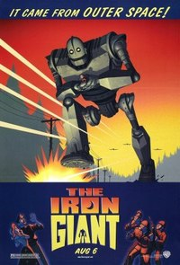Una vez presentado al monstruo, en una excelente secuencia donde ya queda claro que Bird pretende rendir con su película un sincero homenaje los clásicos de terror y ciencia-ficción (la tormenta, la misteriosa criatura), toca conocer al niño protagonista. Hogarth Hughes es el típico chico imaginativo y aventurero, cautivado con las historias fantásticas y terroríficas que lee en los cómics y ve en la televisión (hay un guiño a ‘Friend Without a Face’), que vive con su madre, una joven viuda, en uno de esos pequeños pueblos tranquilos donde nunca pasa nada… hasta que empieza la película. Una noche que se queda solo en casa, Hogarth sigue un enigmático rastro de destrucción que lo lleva a cruzar el bosque hasta llegar a una subestación eléctrica. Allí es donde su sueño se hace realidad. Hogarth encuentra la cosa que cayó del cielo, un robot gigante. “¡Soy el niño más afortunado de toda América!”, exclama entusiasmado tras descubrir que el extraterrestre es amigable y le hace caso, como si de una colosal mascota se tratase.
Pero la ingenuidad y bondad del niño contrasta con el pánico a lo desconocido y la violencia de los adultos, que ven el robot como una amenaza. A grandes rasgos, el personaje de Hogarth y su aventura guarda bastante similitud con Elliott y su encuentro con el alienígena de ‘E.T.’ (1982), funcionando en cierta manera como un precedente de ‘Super 8’ (2011). Al volver a ver ‘El gigante de hierro’ me ha sorprendido encontrar situaciones (los destrozos que causa el gigante, la pieza que busca a su dueño, el choque del tren) que recuerdan al film de J.J. Abrams, por cierto, inferior a los trabajos de Spielberg y Bird, narradores con mayor talento, a los que no se les nota que fuercen nada en su intento por asombrar y conmover al público, capaces de hacer creíble una historia fantástica de manera prodigiosamente sencilla. En cuanto a la figura y el comportamiento del gigante mecánico, son evidentes las referencias a ‘Frankenstein’ (1931), ‘King Kong’ (1933), ‘Ultimátum a la Tierra’ (‘The Day the Earth Stood Still’, 1951) y ‘La guerra de los mundos’ (‘The War of the Worlds’, 1953).
Un detalle muy interesante del guion que no queda revelado del todo, o al menos no de una forma evidente, es el propósito del viaje a la Tierra de este entrañable “transformer”, una información que se mantiene oculta incluso para el propio robot gracias a una oportuna pérdida de memoria. ¿Por qué llega a nuestro planeta? La clave parece estar en el último tercio de la película, cuando de pronto se arregla la abolladura de la cabeza y se convierte en un arma imparable. Llegó para destruir. Esto lo convertiría en una especie de descendiente de Gort, que viene a castigar a la humanidad por desoír el ultimátum y lanzarse a la conquista del espacio mientras aumentan las armas nucleares. Menos mal que Hogarth le habla de Superman y le muestra el indeseable efecto de las armas. Un detalle anecdótico, en la versión del film en inglés, Vin Diesel presta su voz al robot (sin duda la mejor interpretación de su carrera). Jennifer Aniston, Harry Connick Jr., Christopher McDonald, M. Emmet Walsh y John Mahoney también participan en el doblaje original.
Deliciosamente enriquecida con multitud de referencias culturales, destacando, claro, las cinematográficas (el póster de ‘Planeta prohibido’, el recuerdo a ‘Bambi’…), ‘El gigante de hierro’ es una aventura de fantasía cargada de nostalgia que cumple con todos los requisitos para ser considerada un clásico moderno. Narrada con elegancia y estilo, visualmente impecable (afortunada simbiosis entre animación tradicional y moderna), muy divertida, con un humor infantil que no llega a resultar tontorrón, apuntes críticos muy afortunados que la convierten en un producto ideal para las escuelas, inteligente al no caer en la cursilería habitual del cine para niños, y brillante en cuanto a la progresión dramática, culminando en un emocionante tramo final que eriza la piel (la despedida final es antológica). En definitiva, es una gozada, una hermosa película para todos los públicos. Curiosamente, no funcionó muy bien en taquilla pero con el tiempo ha ido ganando seguidores gracias al mercado doméstico. Al parecer, solo puede comprarse actualmente en DVD, esperemos que pronto salga una edición en Blu-ray que haga justicia a esta joya animada.
Sun, 04 Mar 2012 08:23:00 GMT
'Al límite de la verdad', enganchados al desastre
'Al límite de la verdad', enganchados al desastre
He vuelto a ver ‘Al límite de la verdad’ (‘Changing Lanes’, 2002), de Roger Michell, que cuenta con un importante reparto encabezado por Samuel L. Jackson y Ben Affleck, a quienes acompañan Toni Collette, Sydney Pollack, Richard Jenkins, William Hurt o Amanda Peet, entre otros. Un abogado que acude al juzgado para entregar un documento que indica que un millonario cedió la gestión de una fundación a su bufete choca con el vehículo de un hombre que acude al mismo tribunal para pelear por la custodia de sus dos hijos de corta edad. El segundo, como llegará tarde, perderá la oportunidad de vivir cerca de sus pequeños y el primero, habiendo extraviado el documento, no solo estará a punto de dejar a su empresa sin un gran cliente, sino que además correrá el riesgo de ir a prisión. La película se inicia con un montaje en paralelo muy bien ejecutado, que confluye en el accidente, donde ambos protagonistas se encuentran. La tensión está servida incluso desde antes de que surja el enfrentamiento, consiguiendo así que las imágenes de sus momentos cotidianos enganchen. La banda sonora de David Arnold contribuye a esta sensación de suspense, con la que el interés se sostiene muchos minutos, a pesar de que el punto de partida sea un incidente tan insignificante en apariencia. La fotografía de Salvatore Totino y los encuadres, con un ligero movimiento de cámara, diez años después siguen de completa actualidad. El conflicto, que se plantea con inmediatez, es férreo y atenazador, pues no parece permitir salida alguna que no suponga cumplir con lo exigido. Ese cumplimiento, sin embargo, se presenta imposible en apariencia. Con ello, antes de que hayan pasado veinte minutos de cinta, ya se ha introducido una intriga notable. Las escenas que se intercalan en este primer acto contagian la indignación y están cargadas de contenido social. A partir de ese detonante, una espiral de malas decisiones, irá precipitando a los dos personajes a sus diferentes abismos en los que parece que lo están perdiendo todo, pero donde lo más importante que están dejando por el camino es su dignidad. Ellos son personas normales, quizá algo más malas que buenas, que se han visto forzadas a comportarse de manera cuestionable. La concatenación de contrariedades que los empuja está bien establecida y sendos arrebatos se ven plausibles, pues no resultan repentinos, sino fruto de una acumulación de noticias irritantes, sumada a la desesperación ante lo que pueda venírseles encima. Se plantea un misterio adicional antes de llegar a la mitad del metraje y la precipitación de hechos es tan vertiginosa que todo ocurre en un día, sin que parezca que el tiempo está dilatado o trampeado. Las reacciones de Ben Affleck ante el dictamen de la juez resultan creíbles al ciento por ciento y, si bien el actor no acompaña la transformación de su personaje con una metamorfosis del comportamiento, supone un acierto de cásting, al dar el perfil perfecto del joven adinerado, pero con algún escrúpulo más que los que tiene la familia que le está proporcionando el estatus. Samuel L. Jackson exagera un tanto sus gestos de pena, aunque representa muy bien los ataques de ira y nos hace ver que su personaje no es solamente una víctima, sino un ex alcohólico iracundo que, como le dice su sponsor de AA, está “enganchado al desastre”, lo que elimina cualquier atisbo de maniqueísmo. Encontramos entre ellos dos infinitas diferencias y al mismo tiempo cierta afinidad, pues son quienes les rodean, más en concreto los personajes de Sydney Pollack, Richard Jenkins y Amanda Peet los antagonistas de esta historia, en la que los personajes principales, por muy enfrentados que estén, no se pueden repartir los papeles de bueno y de malo. El significado profundo de lo ocurrido Desde de un instante dado, ya no es el documento o la hipoteca lo que cada uno de ellos tendrá que recuperar. No es que la película se transforme y lo que hasta ahora era un thriller se convierta en un asunto moral o psicológico, pues esto estaba presentado desde el principio, en esas primeras secuencias, que ya estaban cargadas de este sentir: la reunión de los alcohólicos anónimos, la anécdota sobre Tiger Woods, comentarios como “agradecido a Dios”, “la recompensa es hacer lo correcto”, etc… A partir de aquí, empiezan a darse secuencias que ya no presentan la tensión y el interés de las del arranque, como el paralelo en el que Affleck acude a la iglesia en viernes santo y Jackson enseña a su ex el piso que iba a comprar. Estas escenas son necesarias para que ellos reflexionen y van a la perfección con la intención de los guionistas Chap Taylor y Michael Tolkin. La narración sigue el camino que tenía previsto, pues ‘Al límite de la verdad’ habla de la justicia más allá de los tribunales. El incidente provoca en el abogado algo de mayor profundidad que la victoria o fracaso en el juicio, que es el replanteamiento de todo lo que contiene su vida, incluida su mujer. Esa congruencia no impide que para mí resulte decepcionante que ese conflicto tan irresoluble en realidad no necesite ser resuelto, pues son otros los asuntos que han de solventarse. La tensión se desinfla sin remedio y en mi opinión es frustrante que de ahora en adelante ya todo se encamine al aprendizaje de una lección. Siempre me había llamado la atención el cartel de esta película en el que el slogan, “una mala jugada merece respuesta“ estaba más grande y notorio que el título. Volviéndola a ver llego a la conclusión de que no me extraña, ya que esa frase vendedora define con exactitud el contenido, mientras que el título, aunque también alude a un diálogo que tienen los personajes, es tan común que jamás me serviría para acordarme de si he visto o no el film. Ese tagline es una traducción de “one wrong turn deserves another” (un giro mal hecho se merece otro), que tiene un doble sentido, ya que se puede aplicar tanto al tráfico –por algo el título original es “cambiando de carril“–, como a la vida. Conclusión Podría decirse, en conclusión, que ‘Al límite de la verdad’ es mucho más interesante como ejercicio de dirección que como historia. Michell extrae del material del que parte resultados excelentes, consiguiendo tensión, suspense, interés… todo ello rodeado de un envoltorio de lucida apariencia. El aparato que acompaña puede ser el de un thriller, pero el fondo supone un aprendizaje, una experiencia que destapará para uno de los protagonistas que la realidad es más fea de lo que la pintan y que le servirá para madurar y darse cuenta de las armas de las que dispone para decidir en qué sentido quiere utilizarlas.
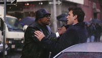
He vuelto a ver ‘Al límite de la verdad’ (‘Changing Lanes’, 2002), de Roger Michell, que cuenta con un importante reparto encabezado por Samuel L. Jackson y Ben Affleck, a quienes acompañan Toni Collette, Sydney Pollack, Richard Jenkins, William Hurt o Amanda Peet, entre otros. Un abogado que acude al juzgado para entregar un documento que indica que un millonario cedió la gestión de una fundación a su bufete choca con el vehículo de un hombre que acude al mismo tribunal para pelear por la custodia de sus dos hijos de corta edad. El segundo, como llegará tarde, perderá la oportunidad de vivir cerca de sus pequeños y el primero, habiendo extraviado el documento, no solo estará a punto de dejar a su empresa sin un gran cliente, sino que además correrá el riesgo de ir a prisión.
La película se inicia con un montaje en paralelo muy bien ejecutado, que confluye en el accidente, donde ambos protagonistas se encuentran. La tensión está servida incluso desde antes de que surja el enfrentamiento, consiguiendo así que las imágenes de sus momentos cotidianos enganchen. La banda sonora de David Arnold contribuye a esta sensación de suspense, con la que el interés se sostiene muchos minutos, a pesar de que el punto de partida sea un incidente tan insignificante en apariencia. La fotografía de Salvatore Totino y los encuadres, con un ligero movimiento de cámara, diez años después siguen de completa actualidad. El conflicto, que se plantea con inmediatez, es férreo y atenazador, pues no parece permitir salida alguna que no suponga cumplir con lo exigido. Ese cumplimiento, sin embargo, se presenta imposible en apariencia. Con ello, antes de que hayan pasado veinte minutos de cinta, ya se ha introducido una intriga notable. Las escenas que se intercalan en este primer acto contagian la indignación y están cargadas de contenido social.
A partir de ese detonante, una espiral de malas decisiones, irá precipitando a los dos personajes a sus diferentes abismos en los que parece que lo están perdiendo todo, pero donde lo más importante que están dejando por el camino es su dignidad. Ellos son personas normales, quizá algo más malas que buenas, que se han visto forzadas a comportarse de manera cuestionable. La concatenación de contrariedades que los empuja está bien establecida y sendos arrebatos se ven plausibles, pues no resultan repentinos, sino fruto de una acumulación de noticias irritantes, sumada a la desesperación ante lo que pueda venírseles encima. Se plantea un misterio adicional antes de llegar a la mitad del metraje y la precipitación de hechos es tan vertiginosa que todo ocurre en un día, sin que parezca que el tiempo está dilatado o trampeado.
Las reacciones de Ben Affleck ante el dictamen de la juez resultan creíbles al ciento por ciento y, si bien el actor no acompaña la transformación de su personaje con una metamorfosis del comportamiento, supone un acierto de cásting, al dar el perfil perfecto del joven adinerado, pero con algún escrúpulo más que los que tiene la familia que le está proporcionando el estatus. Samuel L. Jackson exagera un tanto sus gestos de pena, aunque representa muy bien los ataques de ira y nos hace ver que su personaje no es solamente una víctima, sino un ex alcohólico iracundo que, como le dice su sponsor de AA, está “enganchado al desastre”, lo que elimina cualquier atisbo de maniqueísmo. Encontramos entre ellos dos infinitas diferencias y al mismo tiempo cierta afinidad, pues son quienes les rodean, más en concreto los personajes de Sydney Pollack, Richard Jenkins y Amanda Peet los antagonistas de esta historia, en la que los personajes principales, por muy enfrentados que estén, no se pueden repartir los papeles de bueno y de malo.
El significado profundo de lo ocurrido
Desde de un instante dado, ya no es el documento o la hipoteca lo que cada uno de ellos tendrá que recuperar. No es que la película se transforme y lo que hasta ahora era un thriller se convierta en un asunto moral o psicológico, pues esto estaba presentado desde el principio, en esas primeras secuencias, que ya estaban cargadas de este sentir: la reunión de los alcohólicos anónimos, la anécdota sobre Tiger Woods, comentarios como “agradecido a Dios”, “la recompensa es hacer lo correcto”, etc… A partir de aquí, empiezan a darse secuencias que ya no presentan la tensión y el interés de las del arranque, como el paralelo en el que Affleck acude a la iglesia en viernes santo y Jackson enseña a su ex el piso que iba a comprar. Estas escenas son necesarias para que ellos reflexionen y van a la perfección con la intención de los guionistas Chap Taylor y Michael Tolkin. La narración sigue el camino que tenía previsto, pues ‘Al límite de la verdad’ habla de la justicia más allá de los tribunales. El incidente provoca en el abogado algo de mayor profundidad que la victoria o fracaso en el juicio, que es el replanteamiento de todo lo que contiene su vida, incluida su mujer. Esa congruencia no impide que para mí resulte decepcionante que ese conflicto tan irresoluble en realidad no necesite ser resuelto, pues son otros los asuntos que han de solventarse. La tensión se desinfla sin remedio y en mi opinión es frustrante que de ahora en adelante ya todo se encamine al aprendizaje de una lección.
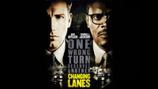
Siempre me había llamado la atención el cartel de esta película en el que el slogan, “una mala jugada merece respuesta“ estaba más grande y notorio que el título. Volviéndola a ver llego a la conclusión de que no me extraña, ya que esa frase vendedora define con exactitud el contenido, mientras que el título, aunque también alude a un diálogo que tienen los personajes, es tan común que jamás me serviría para acordarme de si he visto o no el film. Ese tagline es una traducción de “one wrong turn deserves another” (un giro mal hecho se merece otro), que tiene un doble sentido, ya que se puede aplicar tanto al tráfico –por algo el título original es “cambiando de carril“–, como a la vida.
Conclusión
Podría decirse, en conclusión, que ‘Al límite de la verdad’ es mucho más interesante como ejercicio de dirección que como historia. Michell extrae del material del que parte resultados excelentes, consiguiendo tensión, suspense, interés… todo ello rodeado de un envoltorio de lucida apariencia. El aparato que acompaña puede ser el de un thriller, pero el fondo supone un aprendizaje, una experiencia que destapará para uno de los protagonistas que la realidad es más fea de lo que la pintan y que le servirá para madurar y darse cuenta de las armas de las que dispone para decidir en qué sentido quiere utilizarlas.
Sat, 03 Mar 2012 12:25:59 GMT
'Los Muppets' tendrá secuela
'Los Muppets' tendrá secuela
No sé si le pasará a todo el mundo, pero hay ocasiones en la que una película te despierta cierta simpatía sin la necesidad de verla, aunque luego puedes acabar postergando su visionado por un motivo u otro. ‘Los Muppets’ formaría parte de esa lista, con el matiz de que yo estaba deseando ir al cine, la pega es que Disney decidió que no era necesario estrenarla en versión original subtitulada y entonces fui yo el que decidió que así no me merecía la pena verla. Sin embargo, pese a no hacer mucho ruido en términos de recaudación (eso parece limitado a los fines de semana de estreno de los grandes blockbusters), ‘Los Muppets’ ha conseguido triplicar con holgura su presupuesto en el dinero que los espectadores os dejasteis para verla en cines, suponiendo esto la ansiada revitalización de una franquicia que llevaba años herida de muerte. Con esos datos, era normal que hubiese mucho interés por rodar una secuela, sobre todo porque ha dejado muy buen sabor de boca entre el público y eso suele equivaler a mejor taquilla en la siguiente entrega, y al fin se ha confirmado la noticia. James Bobin va a repetir en la dirección y Nichollas Stoller en el guión. La gran diferencia va a ser que Jason Segel, considerado el gran responsable del éxito de la primera parte, no va a poder colaborar con Stoller en el guión por falta de tiempo. Os recuerdo que Segel también era el protagonista humano de ‘Los Muppets’ junto a Amy Adams, pero aún se desconoce si alguno de los dos repetirá aparición. ¿Alguno de vosotros llegó a ver la primera entrega? Si es así, ¿qué os pareció, os dejó con ganas de más? PD: Os recuerdo que la canción ‘Man or Muppet’ consiguió ganar el Oscar en la aún reciente última entrega de sus premios. Podéis escucharla aquí si os apetece. Vía | Comic Book Movie
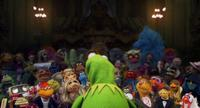
No sé si le pasará a todo el mundo, pero hay ocasiones en la que una película te despierta cierta simpatía sin la necesidad de verla, aunque luego puedes acabar postergando su visionado por un motivo u otro. ‘Los Muppets’ formaría parte de esa lista, con el matiz de que yo estaba deseando ir al cine, la pega es que Disney decidió que no era necesario estrenarla en versión original subtitulada y entonces fui yo el que decidió que así no me merecía la pena verla. Sin embargo, pese a no hacer mucho ruido en términos de recaudación (eso parece limitado a los fines de semana de estreno de los grandes blockbusters), ‘Los Muppets’ ha conseguido triplicar con holgura su presupuesto en el dinero que los espectadores os dejasteis para verla en cines, suponiendo esto la ansiada revitalización de una franquicia que llevaba años herida de muerte.
Con esos datos, era normal que hubiese mucho interés por rodar una secuela, sobre todo porque ha dejado muy buen sabor de boca entre el público y eso suele equivaler a mejor taquilla en la siguiente entrega, y al fin se ha confirmado la noticia. James Bobin va a repetir en la dirección y Nichollas Stoller en el guión. La gran diferencia va a ser que Jason Segel, considerado el gran responsable del éxito de la primera parte, no va a poder colaborar con Stoller en el guión por falta de tiempo. Os recuerdo que Segel también era el protagonista humano de ‘Los Muppets’ junto a Amy Adams, pero aún se desconoce si alguno de los dos repetirá aparición. ¿Alguno de vosotros llegó a ver la primera entrega? Si es así, ¿qué os pareció, os dejó con ganas de más?
PD: Os recuerdo que la canción ‘Man or Muppet’ consiguió ganar el Oscar en la aún reciente última entrega de sus premios. Podéis escucharla aquí si os apetece.
Vía | Comic Book Movie
Sat, 03 Mar 2012 08:13:34 GMT
'Indomable', un Soderbergh menor
'Indomable', un Soderbergh menor
Al contrario que mi compañero Míkel, cuya opinión respeto y me gustaría compartir, no encontré ‘Indomable’ (‘Haywire’, 2011) un digno largometraje de acción que pudiese codearse con los de calidad media del género, sino más bien una propuesta de tono casi humorístico o, por lo menos, dotada de un humor no intencionado y que es posible el director haya realizado con el único propósito de engrosar los ahorros con los que retirase rodeado de lujos. La última vez que hablé de Soderbergh, que fue no hace mucho, pues su trabajo anterior se estrenó solo escasos meses antes que esta, ya dije que lo consideraba irregular por ese afán suyo de atreverse siempre con algo diferente a lo que ha probado que le salía bien. En este caso, ni siquiera le daría el beneficio de considerar que tenía ganas de experimentar con la acción, como se ha afirmado. Me parece que el título que nos ocupa para él no supuso más que una oportunidad de girar la manivela de la caja registradora. ‘Indomable’ tiene todos los visos de directo a DVD y me atrevería a afirmar que, de no estar firmado por quien lo firma, a las estanterías se habría ido derechita, sin pasar por las salas. No voy a ser yo quien se queje de que, para variar, sea una mujer la que reparta a diestro y siniestro. De hecho, esta variación es que la que ha motivado que acudiese al cine a ver ‘Indomable’. Aún así, no puedo conformarme solo con eso, pues por mucho que me gustase encontrar más personajes femeninos activos, preferiría verlos dentro de buen cine. Gina Carano, la protagonista, es la culpable tanto de lo positivo como de lo negativo. A favor podemos destacar el montaje diáfano de las peleas, que solo se puede lograr gracias a contar con una luchadora profesional, ya que no hace falta cambiar de plano cuando la patada o el puñetazo no llegan a asestarse. En una época de cine de acción montado como si las escenas fuesen conjuntos de flashes llamativos, pero nada claros, se agradece esta opción estética. Es cierto, asimismo, que la cantidad de peleas o persecuciones es considerable, por lo que nadie con afición a la lucha y la cinestesia tendrá problema en disfrutar de los noventa y pico minutos con delectación. La fotografía y la música aportan la vertiente más artística a un conjunto que en ningún otro momento parece apuntar por ahí. Al mismo tiempo, queda demasiado patente que Carano no es actriz, cosa que puede adivinarse mientras se observa su interpretación, incluso sin saber nada de ella de antemano. Estoy de acuerdo en que no desentona y en que cumple más o menos. Sin embargo, no posee el carisma o el magnetismo necesarios para que su personaje nos importe más allá de sus capacidades físicas. Por este motivo, los diálogos y las escenas intimistas pueden acercarse al ridículo. Tanto es así, que incluso el nutrido elenco masculino que la acompaña –y que no voy a negar que funciona como otro aliciente para acercarse al cine a ver este film– resulta poco acertado en comparación con lo que nos ha ofrecido en otras ocasiones. Solo Antonio Banderas, en un personaje que espero que nadie me diga que no pretende ser humorístico, está en su salsa. Y algo parecido le ocurre a Michael Douglas, quien ya lleva tiempo aceptando papeles menores en los que lo importante parece que su nombre esté escrito en el cartel. Con los dos me parece estar ante la autoparodia. Michael Fassbender, Ewan McGregor y Bill Paxton cuentan con papeles en teoría serios y no resultan chirriantes, pero sus intervenciones son breves. Channing Tatum, que practicó las artes marciales en su adolescencia, puede quedar correcto interpretando a un antiguo luchador noqueado, sin embargo no apostaría por que se pudiese extraer mucho más de él. En cuanto a la narrativa, casi sería mejor no entrar en ella ¿Alguien se explica el motivo de que le cuente todo al chaval cuyo coche secuestra, interpretado por Michael Angarano? No vale que me digáis que porque el espectador necesita saberlo. Cierto que se justifica en que necesita que él lo recuerde, no obstante nos encontramos ante el recurso crudo, ante la desfachatez para introducir trucos narrativos. Esa falta de vergüenza, sumada al factor de que la historia ni es original ni profundiza en los personajes ni aporta nada, me hace pensar en que no nos encontramos ante un experimento de Soderbergh ni ante un film de intenciones artísticas, como se ha querido calificar, sino ante un producto de género sin pretensiones. No tengo nada en contra de los productos sin otra pretensión que la de entretener, aunque eso no quiere decir que no se puedan señalar sus puntos débiles. En conclusión, ‘Indomable’ se podría considerar entretenida, no es nefanda y está rodada con profesionalidad. Para aquellos que se quejan de que se les busquen defectos a los productos de consumo, no hay más que decir. Pero encontrándonos ante un Soderbergh, creo que se pueden analizar algo más las cosas. Nos hallamos dentro de una vertiente de la acción que apuesta por el realismo. La protagonista es fuerte, pero no efectúa ningún movimiento imposible. Sí lo hacen hombres y mujeres en otras opciones del género donde se dilata la barrera de lo posible, por ejemplo en la risible, aunque más espectacular ‘Colombiana’, también protagonizada por una mujer de armas tomar. Esta apuesta por el respeto a las leyes de la física resultaría encomiable, si lo que rodea a las peleas estuviese tratado con el mismo realismo. Sin embargo, no hay la más mínima credibilidad en ninguna escena que no sea de acción. Para admitir trucos de guion facilones y pasar por alto detalles cuestionables en lo que se refiere al desarrollo de la historia o el retrato de los personajes, entonces prefiero dar el salto total y que todo se convierta en un absoluto espectáculo en el que cambien las normas y aceptemos como verosímiles algunas acciones inimaginables.

Al contrario que mi compañero Míkel, cuya opinión respeto y me gustaría compartir, no encontré ‘Indomable’ (‘Haywire’, 2011) un digno largometraje de acción que pudiese codearse con los de calidad media del género, sino más bien una propuesta de tono casi humorístico o, por lo menos, dotada de un humor no intencionado y que es posible el director haya realizado con el único propósito de engrosar los ahorros con los que retirase rodeado de lujos.
La última vez que hablé de Soderbergh, que fue no hace mucho, pues su trabajo anterior se estrenó solo escasos meses antes que esta, ya dije que lo consideraba irregular por ese afán suyo de atreverse siempre con algo diferente a lo que ha probado que le salía bien. En este caso, ni siquiera le daría el beneficio de considerar que tenía ganas de experimentar con la acción, como se ha afirmado. Me parece que el título que nos ocupa para él no supuso más que una oportunidad de girar la manivela de la caja registradora. ‘Indomable’ tiene todos los visos de directo a DVD y me atrevería a afirmar que, de no estar firmado por quien lo firma, a las estanterías se habría ido derechita, sin pasar por las salas.
No voy a ser yo quien se queje de que, para variar, sea una mujer la que reparta a diestro y siniestro. De hecho, esta variación es que la que ha motivado que acudiese al cine a ver ‘Indomable’. Aún así, no puedo conformarme solo con eso, pues por mucho que me gustase encontrar más personajes femeninos activos, preferiría verlos dentro de buen cine. Gina Carano, la protagonista, es la culpable tanto de lo positivo como de lo negativo.
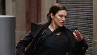
A favor podemos destacar el montaje diáfano de las peleas, que solo se puede lograr gracias a contar con una luchadora profesional, ya que no hace falta cambiar de plano cuando la patada o el puñetazo no llegan a asestarse. En una época de cine de acción montado como si las escenas fuesen conjuntos de flashes llamativos, pero nada claros, se agradece esta opción estética. Es cierto, asimismo, que la cantidad de peleas o persecuciones es considerable, por lo que nadie con afición a la lucha y la cinestesia tendrá problema en disfrutar de los noventa y pico minutos con delectación. La fotografía y la música aportan la vertiente más artística a un conjunto que en ningún otro momento parece apuntar por ahí.
Al mismo tiempo, queda demasiado patente que Carano no es actriz, cosa que puede adivinarse mientras se observa su interpretación, incluso sin saber nada de ella de antemano. Estoy de acuerdo en que no desentona y en que cumple más o menos. Sin embargo, no posee el carisma o el magnetismo necesarios para que su personaje nos importe más allá de sus capacidades físicas. Por este motivo, los diálogos y las escenas intimistas pueden acercarse al ridículo.
Tanto es así, que incluso el nutrido elenco masculino que la acompaña –y que no voy a negar que funciona como otro aliciente para acercarse al cine a ver este film– resulta poco acertado en comparación con lo que nos ha ofrecido en otras ocasiones. Solo Antonio Banderas, en un personaje que espero que nadie me diga que no pretende ser humorístico, está en su salsa. Y algo parecido le ocurre a Michael Douglas, quien ya lleva tiempo aceptando papeles menores en los que lo importante parece que su nombre esté escrito en el cartel. Con los dos me parece estar ante la autoparodia. Michael Fassbender, Ewan McGregor y Bill Paxton cuentan con papeles en teoría serios y no resultan chirriantes, pero sus intervenciones son breves. Channing Tatum, que practicó las artes marciales en su adolescencia, puede quedar correcto interpretando a un antiguo luchador noqueado, sin embargo no apostaría por que se pudiese extraer mucho más de él.
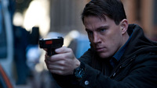
En cuanto a la narrativa, casi sería mejor no entrar en ella ¿Alguien se explica el motivo de que le cuente todo al chaval cuyo coche secuestra, interpretado por Michael Angarano? No vale que me digáis que porque el espectador necesita saberlo. Cierto que se justifica en que necesita que él lo recuerde, no obstante nos encontramos ante el recurso crudo, ante la desfachatez para introducir trucos narrativos. Esa falta de vergüenza, sumada al factor de que la historia ni es original ni profundiza en los personajes ni aporta nada, me hace pensar en que no nos encontramos ante un experimento de Soderbergh ni ante un film de intenciones artísticas, como se ha querido calificar, sino ante un producto de género sin pretensiones. No tengo nada en contra de los productos sin otra pretensión que la de entretener, aunque eso no quiere decir que no se puedan señalar sus puntos débiles.
En conclusión, ‘Indomable’ se podría considerar entretenida, no es nefanda y está rodada con profesionalidad. Para aquellos que se quejan de que se les busquen defectos a los productos de consumo, no hay más que decir. Pero encontrándonos ante un Soderbergh, creo que se pueden analizar algo más las cosas. Nos hallamos dentro de una vertiente de la acción que apuesta por el realismo. La protagonista es fuerte, pero no efectúa ningún movimiento imposible. Sí lo hacen hombres y mujeres en otras opciones del género donde se dilata la barrera de lo posible, por ejemplo en la risible, aunque más espectacular ‘Colombiana’, también protagonizada por una mujer de armas tomar. Esta apuesta por el respeto a las leyes de la física resultaría encomiable, si lo que rodea a las peleas estuviese tratado con el mismo realismo. Sin embargo, no hay la más mínima credibilidad en ninguna escena que no sea de acción. Para admitir trucos de guion facilones y pasar por alto detalles cuestionables en lo que se refiere al desarrollo de la historia o el retrato de los personajes, entonces prefiero dar el salto total y que todo se convierta en un absoluto espectáculo en el que cambien las normas y aceptemos como verosímiles algunas acciones inimaginables.
Fri, 02 Mar 2012 20:34:53 GMT
Estrenos de cine | 2 de febrero | ¡Luces, superhéroes, acción!
Estrenos de cine | 2 de febrero | ¡Luces, superhéroes, acción!
Ante todo disculpad el retraso en la publicación de esta entrada, hubo un malentendido entre los editores. Es viernes, día de estrenos de cine. Como ya habréis visto, las carteleras españolas se han renovado hoy con un buen puñado de novedades, entre las que destacan los nuevos trabajos de Rodrigo Cortés, Steven Sodebergh o Alexander Sokurov, el debut como directora de Angelina Jolie y lo que parece ser una refrescante visión del mundo de los superhéroes. Pero hay más, claro, para todos los paladares, echad un vistazo: ‘Luces rojas’ Título internacional: ‘Red lights’. Dirección y guion: Rodrigo Cortés. Países: España y USA. Año: 2012. Duración: 119 min. Género: Thriller sobrenatural. Interpretación: Cillian Murphy (Tom Buckley), Sigourney Weaver (Margaret Matheson), Robert De Niro (Simon Silver), Elizabeth Olsen (Sally Owen), Leonardo Sbaraglia, Toby Jones (Doctor Shackleton), Joely Richardson (Monica Handsen). Producción: Rodrigo Cortés y Adrián Guerra. Música: Víctor Reyes. Fotografía: Xavi Giménez. Dirección artística: Antón Laguna. Vestuario: Patricia Monné. Distribuidora: Warner Bros. Pictures International Spain. Calificación por edades: No recomendada para menores de 12 años. Sinopsis: Dos investigadores de fraudes paranormales (la veterana doctora Margaret Matheson y su joven ayudante Tom Buckley) estudian los más diversos fenómenos metapsíquicos con la intención de demostrar su origen fraudulento. Simon Silver, legendario psíquico, tal vez el más célebre de todos los tiempos, reaparece después de treinta años de enigmática ausencia para convertirse en el mayor desafío mundial para la ciencia ortodoxa y los escépticos profesionales. Tom comienza a desarrollar una densa obsesión por Silver, cuyo magnetismo se refuerza de forma peligrosa con cada nueva manifestación de oscuros fenómenos inexplicables… ¿Qué podemos esperar? Un apasionante thriller que nos mantenga pegados a la pantalla, como lo hizo ‘Buried’. Espero eso. Y no un desastre narrativo repleto de florituras visuales como ‘Concursante’. En cualquier caso, es la novedad más importante de la semana. Crítica en Blogdecine: ‘Luces rojas’, ¿fraude o genialidad? ‘Chronicle’ Dirección: Josh Trank. Países: Reino Unido y USA. Año: 2012. Duración: 84 min. Género: Ciencia-ficción, fantástico, drama. Interpretación: Dane DeHaan (Andrew), Michael B. Jordan (Steve), Alex Russell (Matt), Michael Kelly (Richard), Ashley Hinshaw (Casey), Anna Wood (Monica). Guion: Max Landis; basado en un argumento de Max Landis y Josh Trank. Producción: John Davis y Adam Schroeder. Fotografía: Matthew Jensen. Montaje: Elliot Greenberg. Diseño de producción: Stephen Altman. Vestuario: Dianna Cilliers. Distribuidora: Hispano Foxfilm. Estreno en Reino Unido: 1 Febrero 2012. Calificación por edades: No recomendada para menores de 16 años. Sinopsis: Es la historia de tres adolescentes que, tras entrar en contacto con una misteriosa sustancia en el bosque, comienzan a desarrollar extraordinarios poderes. Los jóvenes trabajan de forma conjunta para perfeccionar sus nuevas habilidades, si bien todo se complica cuando sus problemas personales y familiares provocan disputas entre ellos. ¿Qué podemos esperar? Una de las mejores películas de superhéroes que se han hecho a día de hoy. Si no te van las tramas fantásticas, huye, hay mucha oferta alternativa. He leído comentarios muy positivos sobre la película y el tráiler me encantó; no me la pierdo. ‘Indomable’ Título original: ‘Haywire’. Dirección: Steven Soderbergh. Países: USA e Irlanda. Año: 2011. Duración: 93 min. Género: Acción, thriller. Interpretación: Gina Carano (Mallory Kane), Michael Fassbender (Paul), Ewan McGregor (Kenneth), Michael Douglas (Coblenz), Bill Paxton (Sr. Kane), Channing Tatum (Aaron), Antonio Banderas (Rodrigo), Michael Angarano (Scott), Mathieu Kassovitz (Studer). Guion: Lem Dobbs. Producción: Gregory Jacobs y Ryan Kavanaugh. Música: David Holmes. Fotografía: Steven Soderbergh. Montaje: Steven Soderbergh. Diseño de producción: Howard Cummings. Vestuario: Shoshana Rubin. Distribuidora: Aurum. Estreno en USA: 20 Enero 2012. Calificación por edades: No recomendada para menores de 12 años. Sinopsis: Mallory Kane es una joven soldado que trabaja en misiones encubiertas. Su jefe, Kenneth, se encarga de ofrecer sus servicios a distintas entidades globales para llevar a cabo trabajos que los gobiernos no pueden autorizar y de los que los jefes de estado preferirían no saber nada. A pesar de su aspecto y juventud, Mallory es la mejor en su campo y sus habilidades están muy solicitadas. Tras una misión para rescatar a un rehén en Barcelona, Kenneth despacha rápidamente a Mallory a otra misión en Dublín. Allí, se unirá a otro agente, el refinado y elegante Paul. Cuando la operación se va al traste y Mallory descubre que la han traicionado, tendrá que valerse de todas sus habilidades, trucos y aptitudes para escapar de una persecución internacional, regresar a los Estados Unidos, proteger a su familia y vengarse de todos los que la han traicionado. ¿Qué podemos esperar? Una intensa y entretenida ración de tiros, hostias y persecuciones. La firma Soderbergh y el reparto masculino es espectacular. Otra que hay que ver. Crítica en Blogdecine: ‘Indomable’, venganza con patadas voladoras ‘Fausto’ Título original: ‘Faust’. Dirección: Alexander Sokurov. País: Rusia. Año: 2011. Duración: 141 min. Género: Drama. Interpretación: Johannes Zeiler (Fausto), Anton Adasinski (prestamista), Isolda Dychauk (Margarita), Georg Friedrich (Wagner), Hanna Schygulla (esposa del prestamista), Antje Lewald (madre de Margarita), Florian Brückner (Valentín). Guion: Alexander Sokurov y Marina Koreneva; basado en el libro de Yuri Arabov; basado a su vez en la obra de Johann Wolfgang Goethe. Producción: Andrey Sigle. Música: Andrey Sigle. Fotografía: Bruno Delbonnel. Montaje: Jörg Hauschild. Diseño de producción: Yelena Zhukova. Vestuario: Lidiya Kryukova. Distribuidora: Golem. Estreno en Rusia: 9 Febrero 2012. Calificación por edades: No recomendada para menores de 7 años. Sinopsis: No es una adaptación cinematográfica de la obra de Goethe en el sentido habitual de la palabra, sino una lectura de lo que queda entre líneas. ¿De qué color es un mundo que da a luz ideas tan colosales? ¿A qué huele? El universo de Fausto es sofocante: ideas que harán temblar el mundo nacen en el espacio reducido en el que se mueve. Es un pensador, un portavoz de ideas, un transmisor de palabras, un maquinador, un soñador. Un hombre anónimo empujado por instintos básicos: el hambre, la codicia, la lujuria. Una criatura infeliz y perseguida que plantea un reto al Fausto de Goethe. ¿Por qué contentarse con el momento si se puede ir más allá? Cada vez más allá, siempre hacia delante, sin darse cuenta de que el tiempo se ha detenido. Tú también desaparecerás. ¿Qué podemos esperar? Ganó el León de Oro en el festival de Venecia. Aronofsky dijo que es de las películas que te cambian la vida. Hay que verla. ‘De cintura para arriba’ Título original: ‘Dalla vita in poi’. Dirección y guion: Gianfrancesco Lazotti. País: Italia. Año: 2010. Duración: 85 min. Género: Comedia romántica. Interpretación: Cristiana Capotondi (Katia), Filippo Nigro (Danilo), Nicoletta Romanoff (Rosalba), Pino Insegno (Ciarnò), Carlo Buccirosso (director de la cárcel), Giovanni Cinelli (asistente Vitale), Arcangelo Iannace (don Paolino). Producción: Pierpaolo Paoluzi. Música: Pietro Freddi. Fotografía: Alessandro Pesci. Montaje: Federico Aguzzi, Andrea Bonanni y Francesca Masini. Diseño de producción: Fabio Vitale. Vestuario: Alessandra Cannarozzi. Distribuidora: Sherlock Films. Estreno en Italia: 19 Noviembre 2010. Calificación por edades: No recomendada para menores de 7 años. Sinopsis: Cuenta la historia de Rosalba, que está enamorada de Danilo, un joven que cumple condena en la cárcel. Para ayudarle a sobrellevar la soledad, decide escribirle una dulce y apasionada carta cada día. Al no verse capaz de expresar sus sentimientos con palabras, le pide ayuda a su mejor amiga, Katia, impedida en silla de ruedas. Poco a poco, de esas líneas en principio surgidas de los pensamientos de Rosalba, nacerán los propios sentimientos de su amiga, que serán correspondidos por Danilo… Ambos empezarán a enamorarse a distancia, y comenzará su lucha por estar juntos más allá de cualquier barrera. ¿Qué podemos esperar? Suena a chorrada romántica para ir en pareja y pasar la tarde. No parece un buen plan. Ya me contaréis. ‘En tierra de sangre y miel’ Título original: ‘In the land of blood and honey’. Dirección y guion: Angelina Jolie. País: USA. Año: 2011. Duración: 127 min. Género: Bélico, romance. Interpretación: Zana Marjanovic (Ajla), Goran Kostic (Danijel), Rade Serbedzija (Nebojsa), Vanesa Glodjo (Lejla), Boris Ler (Tarik), Alma Terzic (Hana), Jelena Jovanova (Esma), Fedja Stukan (Petar), Nikola Djuricko (Darko), Aleksandar Djurica (Marko). Producción: Angelina Jolie, Tim Headington, Graham King y Tim Moore. Música: Gabriel Yared. Fotografía: Dean Semler. Montaje: Patricia Rommel. Diseño de producción: Jon Hutman. Vestuario: Gabriele Binder. Distribuidora: Aurum. Estreno en USA: 23 Diciembre 2011. Calificación por edades: No recomendada para menores de 16 años. Sinopsis: Cuenta la historia de Danijel y Ajla, dos personas inmersas en la Guerra de los Balcanes durante los años 90. Danijel es un soldado que lucha en el bando serbio, y Ajla es una bosnia que vive en cautiverio en el campo de concentración que él supervisa. Ambos fueron amantes antes de comenzar la guerra, pero a medida que el conflicto armado se apodera de sus vidas, su relación se irá oscureciendo poco a poco. La película retrata la increíble carga emocional, física y moral que la guerra ejerce sobre los individuos y los pueblos en su conjunto, y las terribles consecuencias que se derivan de la falta de voluntad política para intervenir en este tipo de conflictos. ¿Qué podemos esperar? Un crudo drama sobre el horror de la guerra. No ha entusiasmado la ópera prima de Jolie pero a mí al menos me produce mucha curiosidad ver cómo se desenvuelve la famosa actriz tras las cámaras. Y el tráiler no pintaba mal. Espero no ser demasiado ingenuo… ‘Una aventura extraordinaria’ Título original: ‘Big miracle’. Dirección: Ken Kwapis. País: USA. Año: 2012. Duración: 107 min. Género: Drama. Interpretación: Drew Barrymore (Rachel Kramer), John Krasinski (Adam Carlson), Ted Danson (J.W. McGraw), Kristen Bell (Jill), Dermot Mulroney (coronel Scott), Vinessa Shaw (Kelly), Tim Blake Nelson (Pat), Stephen Root (gobernador Haskell). Guion: Jack Amiel y Michael Begler; basado en el libro “Freeing the whales”, de Tom Rose. Producción: Tim Bevan, Liza Chasin, Eric Fellner y Michael Sugar. Música: Cliff Eidelman. Fotografía: John Bailey. Montaje: Cara Silverman. Diseño de producción: Nelson Coates. Vestuario: Shay Cunliffe. Distribuidora: Universal Pictures International Spain. Estreno en USA: 3 Febrero 2012. Estreno en España: 2 Marzo 2012. Calificación por edades: Apta para todos los públicos. Sinopsis: Basada en hechos reales, cuenta la historia de un periodista (John Krasinski) afincado en una ciudad pequeña, y de una voluntaria de Greenpeace (Drew Barrymore), a los que se unen naciones rivales para salvar a una familia de majestuosas ballenas grises atrapadas en el hielo del Círculo Polar Ártico. El reportero local Adam Carlson está decidido a irse de Alaska en busca de horizontes más prometedores. En el momento en que tiene la primicia de su vida, el mundo entero llega corriendo. Se encuentra con que un magnate del petróleo, varios jefes de Estado y un puñado de periodistas hambrientos de noticias aparecen en el helado lugar. Pero la única que preocupa a Adam es Rachel Kramer. No sólo es una acérrima defensora del medioambiente, también es su ex novia. Rachel y Adam deben convencer a una extraña coalición formada por miembros de la comunidad inuit, empresas petroleras y el ejército estadounidense para que olviden sus diferencias y liberen a las ballenas. Mientras el mundo entero está pendiente de lo que ocurre en la helada punta del globo, salvar a estos animales en peligro se convierte en una causa común para naciones enfrentadas, hasta el punto de conseguir un deshielo momentáneo de la Guerra Fría. ¿Qué podemos esperar? No quedar mortalmente herido de cursilería durante el visionado. Película para niños, socios de Greenpeace, adolescentes necesitados de intimidad y estudiantes vagos. ‘Año de Gracia’ Título original: ‘Any de Gràcia’. Dirección: Ventura Pons. País: España. Año: 2012. Duración: 90 min. Género: Comedia. Interpretación: Rosa Maria Sardà (Gracia), Oriol Pla (David), Santi Millán (Pere), Amparo Moreno (Enriqueta), Diana Gómez (Noa), Àlex Maruny (Sergi), Ricard Farré (Marçal), Lluis X. Villanueva (padre), Nuria Feliu (Paquita). Guion: Carme Morell, Jaume Cuspinera y Ventura Pons. Producción: Ventura Pons. Música: Mazoni, Sanjosex, El Petit de Cal Eril, Éric Vinaixa, Illa Carolina y Gato Pérez. Fotografía: Sergi Gallardo. Montaje: Marc Matons. Dirección artística: Bel·lo Torras. Distribuidora: El Films de la Rambla. Estreno en España: 2 Marzo 2012. Calificación por edades: No recomendada para menores de 7 años. Sinopsis: David tiene 20 años y llega a Barcelona buscando una oportunidad. Gracia tiene 70 y le ofrece una habitación a cambio de compañía y atención. Su convivencia es, desde el principio, explosiva. ¿Se darán cuenta a tiempo de que se necesitan? ¿Qué podemos esperar? Algo divertido para una tarde aburrida. Pons dice que estaba harto de malas noticias y ha querido ofrecer al público algo optimista. Ya me contaréis. ‘¿Y ahora adónde vamos?’ Título original: ‘Et maintenant, on va où?’. Dirección: Nadine Labaki. Países: Francia, Líbano, Italia y Egipto. Año: 2011. Duración: 102 min. Género: Comedia dramática. Interpretación: Claude Bazz Mossawbaa (Takla), Layla Hakim (Afaf), Nadine Labaki (Amale), Yvonne Maalouf (Yvonne), Antoinette Noufaily (Saydeh), Julien Farhat (Rabih), Ali Haidar (Roukoz), Kevin Abboud (Nasim). Guion: Nadine Labaki y Jihad Hojeily. Producción: Anne-Dominique Toussaint. Música: Khaled Mouzanar. Fotografía: Christophe Offenstein. Montaje: Véronique Lange. Dirección artística: Cynthia Zahar. Vestuario: Caroline Labaki. Distribuidora: Alta Classics. Estreno en Francia: 14 Septiembre 2011. Calificación por edades: No recomendada para menores de 7 años. Sinopsis: En el camino que lleva al cementerio del pueblo, una procesión de mujeres de negro afronta estoicamente el calor del sol estrechando contra ellas las fotos de sus maridos, de sus padres o de sus hijos. Algunas llevan velo, otras una cruz, pero todas comparten el mismo duelo, consecuencia de una guerra funesta e inútil. Al llegar a la entrada del cementerio, el cortejo se divide en dos: uno musulmán, el otro cristiano. Con el telón de fondo de un país desgarrado por la guerra, el film narra la determinación sin fisuras de un grupo de mujeres de todas las religiones para proteger a su familia y a su pueblo de las amenazas exteriores. Demostrando un gran ingenio, inventando estratagemas, unidas por una amistad inquebrantable, esas mujeres sólo tienen un objetivo: distraer la atención de los hombres y hacer que se olviden de su cólera y de su indiferencia. Pero cuando los acontecimientos toman una orientación trágica, ¿hasta dónde estarán dispuestas a llegar para no perder a los que todavía quedan? Crítica en Blogdecine: ‘¿Y ahora adónde vamos?’, las absurdas guerras
Ante todo disculpad el retraso en la publicación de esta entrada, hubo un malentendido entre los editores. Es viernes, día de estrenos de cine. Como ya habréis visto, las carteleras españolas se han renovado hoy con un buen puñado de novedades, entre las que destacan los nuevos trabajos de Rodrigo Cortés, Steven Sodebergh o Alexander Sokurov, el debut como directora de Angelina Jolie y lo que parece ser una refrescante visión del mundo de los superhéroes. Pero hay más, claro, para todos los paladares, echad un vistazo:
‘Luces rojas’
Título internacional: ‘Red lights’. Dirección y guion: Rodrigo Cortés. Países: España y USA. Año: 2012. Duración: 119 min. Género: Thriller sobrenatural. Interpretación: Cillian Murphy (Tom Buckley), Sigourney Weaver (Margaret Matheson), Robert De Niro (Simon Silver), Elizabeth Olsen (Sally Owen), Leonardo Sbaraglia, Toby Jones (Doctor Shackleton), Joely Richardson (Monica Handsen). Producción: Rodrigo Cortés y Adrián Guerra. Música: Víctor Reyes. Fotografía: Xavi Giménez. Dirección artística: Antón Laguna. Vestuario: Patricia Monné. Distribuidora: Warner Bros. Pictures International Spain. Calificación por edades: No recomendada para menores de 12 años.
Sinopsis: Dos investigadores de fraudes paranormales (la veterana doctora Margaret Matheson y su joven ayudante Tom Buckley) estudian los más diversos fenómenos metapsíquicos con la intención de demostrar su origen fraudulento. Simon Silver, legendario psíquico, tal vez el más célebre de todos los tiempos, reaparece después de treinta años de enigmática ausencia para convertirse en el mayor desafío mundial para la ciencia ortodoxa y los escépticos profesionales. Tom comienza a desarrollar una densa obsesión por Silver, cuyo magnetismo se refuerza de forma peligrosa con cada nueva manifestación de oscuros fenómenos inexplicables…
¿Qué podemos esperar? Un apasionante thriller que nos mantenga pegados a la pantalla, como lo hizo ‘Buried’. Espero eso. Y no un desastre narrativo repleto de florituras visuales como ‘Concursante’. En cualquier caso, es la novedad más importante de la semana.
Crítica en Blogdecine: ‘Luces rojas’, ¿fraude o genialidad?
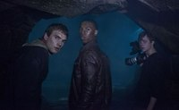
‘Chronicle’
Dirección: Josh Trank. Países: Reino Unido y USA. Año: 2012. Duración: 84 min. Género: Ciencia-ficción, fantástico, drama. Interpretación: Dane DeHaan (Andrew), Michael B. Jordan (Steve), Alex Russell (Matt), Michael Kelly (Richard), Ashley Hinshaw (Casey), Anna Wood (Monica). Guion: Max Landis; basado en un argumento de Max Landis y Josh Trank. Producción: John Davis y Adam Schroeder. Fotografía: Matthew Jensen. Montaje: Elliot Greenberg. Diseño de producción: Stephen Altman. Vestuario: Dianna Cilliers. Distribuidora: Hispano Foxfilm. Estreno en Reino Unido: 1 Febrero 2012. Calificación por edades: No recomendada para menores de 16 años.
Sinopsis: Es la historia de tres adolescentes que, tras entrar en contacto con una misteriosa sustancia en el bosque, comienzan a desarrollar extraordinarios poderes. Los jóvenes trabajan de forma conjunta para perfeccionar sus nuevas habilidades, si bien todo se complica cuando sus problemas personales y familiares provocan disputas entre ellos.
¿Qué podemos esperar? Una de las mejores películas de superhéroes que se han hecho a día de hoy. Si no te van las tramas fantásticas, huye, hay mucha oferta alternativa. He leído comentarios muy positivos sobre la película y el tráiler me encantó; no me la pierdo.
‘Indomable’
Título original: ‘Haywire’. Dirección: Steven Soderbergh. Países: USA e Irlanda. Año: 2011. Duración: 93 min. Género: Acción, thriller. Interpretación: Gina Carano (Mallory Kane), Michael Fassbender (Paul), Ewan McGregor (Kenneth), Michael Douglas (Coblenz), Bill Paxton (Sr. Kane), Channing Tatum (Aaron), Antonio Banderas (Rodrigo), Michael Angarano (Scott), Mathieu Kassovitz (Studer). Guion: Lem Dobbs. Producción: Gregory Jacobs y Ryan Kavanaugh. Música: David Holmes. Fotografía: Steven Soderbergh. Montaje: Steven Soderbergh. Diseño de producción: Howard Cummings. Vestuario: Shoshana Rubin. Distribuidora: Aurum. Estreno en USA: 20 Enero 2012. Calificación por edades: No recomendada para menores de 12 años.
Sinopsis: Mallory Kane es una joven soldado que trabaja en misiones encubiertas. Su jefe, Kenneth, se encarga de ofrecer sus servicios a distintas entidades globales para llevar a cabo trabajos que los gobiernos no pueden autorizar y de los que los jefes de estado preferirían no saber nada. A pesar de su aspecto y juventud, Mallory es la mejor en su campo y sus habilidades están muy solicitadas. Tras una misión para rescatar a un rehén en Barcelona, Kenneth despacha rápidamente a Mallory a otra misión en Dublín. Allí, se unirá a otro agente, el refinado y elegante Paul. Cuando la operación se va al traste y Mallory descubre que la han traicionado, tendrá que valerse de todas sus habilidades, trucos y aptitudes para escapar de una persecución internacional, regresar a los Estados Unidos, proteger a su familia y vengarse de todos los que la han traicionado.
¿Qué podemos esperar? Una intensa y entretenida ración de tiros, hostias y persecuciones. La firma Soderbergh y el reparto masculino es espectacular. Otra que hay que ver.
Crítica en Blogdecine: ‘Indomable’, venganza con patadas voladoras
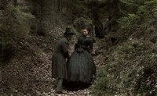
‘Fausto’
Título original: ‘Faust’. Dirección: Alexander Sokurov. País: Rusia. Año: 2011. Duración: 141 min. Género: Drama. Interpretación: Johannes Zeiler (Fausto), Anton Adasinski (prestamista), Isolda Dychauk (Margarita), Georg Friedrich (Wagner), Hanna Schygulla (esposa del prestamista), Antje Lewald (madre de Margarita), Florian Brückner (Valentín). Guion: Alexander Sokurov y Marina Koreneva; basado en el libro de Yuri Arabov; basado a su vez en la obra de Johann Wolfgang Goethe. Producción: Andrey Sigle. Música: Andrey Sigle. Fotografía: Bruno Delbonnel. Montaje: Jörg Hauschild. Diseño de producción: Yelena Zhukova. Vestuario: Lidiya Kryukova. Distribuidora: Golem. Estreno en Rusia: 9 Febrero 2012. Calificación por edades: No recomendada para menores de 7 años.
Sinopsis: No es una adaptación cinematográfica de la obra de Goethe en el sentido habitual de la palabra, sino una lectura de lo que queda entre líneas. ¿De qué color es un mundo que da a luz ideas tan colosales? ¿A qué huele? El universo de Fausto es sofocante: ideas que harán temblar el mundo nacen en el espacio reducido en el que se mueve. Es un pensador, un portavoz de ideas, un transmisor de palabras, un maquinador, un soñador. Un hombre anónimo empujado por instintos básicos: el hambre, la codicia, la lujuria. Una criatura infeliz y perseguida que plantea un reto al Fausto de Goethe. ¿Por qué contentarse con el momento si se puede ir más allá? Cada vez más allá, siempre hacia delante, sin darse cuenta de que el tiempo se ha detenido. Tú también desaparecerás.
¿Qué podemos esperar? Ganó el León de Oro en el festival de Venecia. Aronofsky dijo que es de las películas que te cambian la vida. Hay que verla.
‘De cintura para arriba’
Título original: ‘Dalla vita in poi’. Dirección y guion: Gianfrancesco Lazotti. País: Italia. Año: 2010. Duración: 85 min. Género: Comedia romántica. Interpretación: Cristiana Capotondi (Katia), Filippo Nigro (Danilo), Nicoletta Romanoff (Rosalba), Pino Insegno (Ciarnò), Carlo Buccirosso (director de la cárcel), Giovanni Cinelli (asistente Vitale), Arcangelo Iannace (don Paolino). Producción: Pierpaolo Paoluzi. Música: Pietro Freddi. Fotografía: Alessandro Pesci. Montaje: Federico Aguzzi, Andrea Bonanni y Francesca Masini. Diseño de producción: Fabio Vitale. Vestuario: Alessandra Cannarozzi. Distribuidora: Sherlock Films. Estreno en Italia: 19 Noviembre 2010. Calificación por edades: No recomendada para menores de 7 años.
Sinopsis: Cuenta la historia de Rosalba, que está enamorada de Danilo, un joven que cumple condena en la cárcel. Para ayudarle a sobrellevar la soledad, decide escribirle una dulce y apasionada carta cada día. Al no verse capaz de expresar sus sentimientos con palabras, le pide ayuda a su mejor amiga, Katia, impedida en silla de ruedas. Poco a poco, de esas líneas en principio surgidas de los pensamientos de Rosalba, nacerán los propios sentimientos de su amiga, que serán correspondidos por Danilo… Ambos empezarán a enamorarse a distancia, y comenzará su lucha por estar juntos más allá de cualquier barrera.
¿Qué podemos esperar? Suena a chorrada romántica para ir en pareja y pasar la tarde. No parece un buen plan. Ya me contaréis.
‘En tierra de sangre y miel’
Título original: ‘In the land of blood and honey’. Dirección y guion: Angelina Jolie. País: USA. Año: 2011. Duración: 127 min. Género: Bélico, romance. Interpretación: Zana Marjanovic (Ajla), Goran Kostic (Danijel), Rade Serbedzija (Nebojsa), Vanesa Glodjo (Lejla), Boris Ler (Tarik), Alma Terzic (Hana), Jelena Jovanova (Esma), Fedja Stukan (Petar), Nikola Djuricko (Darko), Aleksandar Djurica (Marko). Producción: Angelina Jolie, Tim Headington, Graham King y Tim Moore. Música: Gabriel Yared. Fotografía: Dean Semler. Montaje: Patricia Rommel. Diseño de producción: Jon Hutman. Vestuario: Gabriele Binder. Distribuidora: Aurum. Estreno en USA: 23 Diciembre 2011. Calificación por edades: No recomendada para menores de 16 años.
Sinopsis: Cuenta la historia de Danijel y Ajla, dos personas inmersas en la Guerra de los Balcanes durante los años 90. Danijel es un soldado que lucha en el bando serbio, y Ajla es una bosnia que vive en cautiverio en el campo de concentración que él supervisa. Ambos fueron amantes antes de comenzar la guerra, pero a medida que el conflicto armado se apodera de sus vidas, su relación se irá oscureciendo poco a poco. La película retrata la increíble carga emocional, física y moral que la guerra ejerce sobre los individuos y los pueblos en su conjunto, y las terribles consecuencias que se derivan de la falta de voluntad política para intervenir en este tipo de conflictos.
¿Qué podemos esperar? Un crudo drama sobre el horror de la guerra. No ha entusiasmado la ópera prima de Jolie pero a mí al menos me produce mucha curiosidad ver cómo se desenvuelve la famosa actriz tras las cámaras. Y el tráiler no pintaba mal. Espero no ser demasiado ingenuo…
‘Una aventura extraordinaria’
Título original: ‘Big miracle’. Dirección: Ken Kwapis. País: USA. Año: 2012. Duración: 107 min. Género: Drama. Interpretación: Drew Barrymore (Rachel Kramer), John Krasinski (Adam Carlson), Ted Danson (J.W. McGraw), Kristen Bell (Jill), Dermot Mulroney (coronel Scott), Vinessa Shaw (Kelly), Tim Blake Nelson (Pat), Stephen Root (gobernador Haskell). Guion: Jack Amiel y Michael Begler; basado en el libro “Freeing the whales”, de Tom Rose. Producción: Tim Bevan, Liza Chasin, Eric Fellner y Michael Sugar. Música: Cliff Eidelman. Fotografía: John Bailey. Montaje: Cara Silverman. Diseño de producción: Nelson Coates. Vestuario: Shay Cunliffe. Distribuidora: Universal Pictures International Spain. Estreno en USA: 3 Febrero 2012. Estreno en España: 2 Marzo 2012. Calificación por edades: Apta para todos los públicos.
Sinopsis: Basada en hechos reales, cuenta la historia de un periodista (John Krasinski) afincado en una ciudad pequeña, y de una voluntaria de Greenpeace (Drew Barrymore), a los que se unen naciones rivales para salvar a una familia de majestuosas ballenas grises atrapadas en el hielo del Círculo Polar Ártico. El reportero local Adam Carlson está decidido a irse de Alaska en busca de horizontes más prometedores. En el momento en que tiene la primicia de su vida, el mundo entero llega corriendo. Se encuentra con que un magnate del petróleo, varios jefes de Estado y un puñado de periodistas hambrientos de noticias aparecen en el helado lugar. Pero la única que preocupa a Adam es Rachel Kramer. No sólo es una acérrima defensora del medioambiente, también es su ex novia. Rachel y Adam deben convencer a una extraña coalición formada por miembros de la comunidad inuit, empresas petroleras y el ejército estadounidense para que olviden sus diferencias y liberen a las ballenas. Mientras el mundo entero está pendiente de lo que ocurre en la helada punta del globo, salvar a estos animales en peligro se convierte en una causa común para naciones enfrentadas, hasta el punto de conseguir un deshielo momentáneo de la Guerra Fría.
¿Qué podemos esperar? No quedar mortalmente herido de cursilería durante el visionado. Película para niños, socios de Greenpeace, adolescentes necesitados de intimidad y estudiantes vagos.
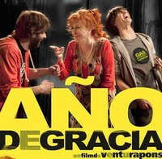
‘Año de Gracia’
Título original: ‘Any de Gràcia’. Dirección: Ventura Pons. País: España. Año: 2012. Duración: 90 min. Género: Comedia. Interpretación: Rosa Maria Sardà (Gracia), Oriol Pla (David), Santi Millán (Pere), Amparo Moreno (Enriqueta), Diana Gómez (Noa), Àlex Maruny (Sergi), Ricard Farré (Marçal), Lluis X. Villanueva (padre), Nuria Feliu (Paquita). Guion: Carme Morell, Jaume Cuspinera y Ventura Pons. Producción: Ventura Pons. Música: Mazoni, Sanjosex, El Petit de Cal Eril, Éric Vinaixa, Illa Carolina y Gato Pérez. Fotografía: Sergi Gallardo. Montaje: Marc Matons. Dirección artística: Bel·lo Torras. Distribuidora: El Films de la Rambla. Estreno en España: 2 Marzo 2012. Calificación por edades: No recomendada para menores de 7 años.
Sinopsis: David tiene 20 años y llega a Barcelona buscando una oportunidad. Gracia tiene 70 y le ofrece una habitación a cambio de compañía y atención. Su convivencia es, desde el principio, explosiva. ¿Se darán cuenta a tiempo de que se necesitan?
¿Qué podemos esperar? Algo divertido para una tarde aburrida. Pons dice que estaba harto de malas noticias y ha querido ofrecer al público algo optimista. Ya me contaréis.
‘¿Y ahora adónde vamos?’
Título original: ‘Et maintenant, on va où?’. Dirección: Nadine Labaki. Países: Francia, Líbano, Italia y Egipto. Año: 2011. Duración: 102 min. Género: Comedia dramática. Interpretación: Claude Bazz Mossawbaa (Takla), Layla Hakim (Afaf), Nadine Labaki (Amale), Yvonne Maalouf (Yvonne), Antoinette Noufaily (Saydeh), Julien Farhat (Rabih), Ali Haidar (Roukoz), Kevin Abboud (Nasim). Guion: Nadine Labaki y Jihad Hojeily. Producción: Anne-Dominique Toussaint. Música: Khaled Mouzanar. Fotografía: Christophe Offenstein. Montaje: Véronique Lange. Dirección artística: Cynthia Zahar. Vestuario: Caroline Labaki. Distribuidora: Alta Classics. Estreno en Francia: 14 Septiembre 2011. Calificación por edades: No recomendada para menores de 7 años.
Sinopsis: En el camino que lleva al cementerio del pueblo, una procesión de mujeres de negro afronta estoicamente el calor del sol estrechando contra ellas las fotos de sus maridos, de sus padres o de sus hijos. Algunas llevan velo, otras una cruz, pero todas comparten el mismo duelo, consecuencia de una guerra funesta e inútil. Al llegar a la entrada del cementerio, el cortejo se divide en dos: uno musulmán, el otro cristiano. Con el telón de fondo de un país desgarrado por la guerra, el film narra la determinación sin fisuras de un grupo de mujeres de todas las religiones para proteger a su familia y a su pueblo de las amenazas exteriores. Demostrando un gran ingenio, inventando estratagemas, unidas por una amistad inquebrantable, esas mujeres sólo tienen un objetivo: distraer la atención de los hombres y hacer que se olviden de su cólera y de su indiferencia. Pero cuando los acontecimientos toman una orientación trágica, ¿hasta dónde estarán dispuestas a llegar para no perder a los que todavía quedan?
Crítica en Blogdecine: ‘¿Y ahora adónde vamos?’, las absurdas guerras
Thu, 01 Mar 2012 21:24:49 GMT
'Indomable', venganza con patadas voladoras
'Indomable', venganza con patadas voladoras
Steven Soderbergh es uno de los directores más eclécticos de Hollywood. Desde su debut con ‘Sexo, mentiras y cintas de vídeo’ no ha tenido problemas en ir saltando de producciones de corte comercial como ‘Ocean´s eleven’ a cintas más experimentales como ‘The girlfriend experience’. Podría decirse que es un culo inquieto que no quiere que se le clasifique como realizador de un tipo muy determinado de cine, pero también que aprovecha sus producciones más populares para luego dar un salto al vacío sin red. Me consta que hay gente que lo adora con pasión, pero yo me encuentro en un punto más intermedio, ya que por lo general disfruto de sus trabajos, pero tampoco hay ninguno que realmente me apasione y me haga querer rendirme a sus pies. Habrá quien discuta que inscriba ‘Indomable’ (‘Haywire’) dentro de esa vertiente más experimental, ya que, en apariencia, no es más que otra cinta de gente dándose de leches con alguien queriendo completar su venganza personal. Sin embargo, aunque sólo sea por su osadía de confiar el papel protagonista a Gina Carano, una luchadora profesional experta en artes marciales mixtas con un currículum prácticamente inexistente en el séptimo arte. Además, uno recuerda casos como las horripilantes películas protagonizadas por Hulk Hogan en su día y se echa a temblar. Sí que podríamos decir que Dwayne ‘The Rock’ Johnson es una excepción relativa, pero lo que ahora nos importa es: ¿Le ha salido bien la jugada a Soderbergh con ‘Indomable’? Lo primero que diferencia a ‘Indomable’ de una cinta de acción al uso es la capacidad de Soderbergh por trascender las limitaciones del guión de Lem Dobbs y construir una obra con personalidad propia. El primer acierto es dotar de cierta profundidad narrativa a la historia con los constantes saltos espaciales y temporales sin que eso de lugares a confusiones sobre lo que está pasando o en qué punto de la historia estamos en ese momento. Por encima de esa capa, tampoco tan meritoria y, en parte deudora del elemento de cine de espías del guión, sobresale una tarea de puesta en escena en la que los artificios no tienen espacio. Aquí no encontraréis grandes efectos especiales ni momentos de acción que no hay quien se lo crea, ya que Soderbergh ha vuelto a lo básico, al aspecto físico de la violencia, en la que sí, hay tiroteos, pero el cuerpo a cuerpo se convierte en algo esencial. Y sin trucajes en forma de cambiar de plano con rapidez para hacerle el trabajo más fácil a Carano. No, en ‘Indomable’, guste o no, la violencia vuelve al encanto de lo elemental. Además, Soderbergh también respeta la virtud de no alargar innecesariamente la película, error habitual del cine contemporáneo, para que así resulte más difícil cansarse y empezar a verle las costuras a una historia tópica desarrollada de forma más tópica aún y que tampoco sorprende al final. Sin embargo, eso no es problema si está bien hecho como es el caso. La gran revelación de ‘Indomable’ es Gina Carano, luchadora profesional cuya carrera cinematográfica seguramente se hubiese visto limitada a producciones lamentables que en su mayoría jamás hubiesen sido estrenadas en una sala de cine. No es que ahora ya sea imposible que eso acabe sucediendo, pero sería una pena que el cine de acción no fuese capaz de asimilar a una gran heroína del cine de acción, donde uno apenas puede encontrar ejemplos realmente destacables. Sí, James Cameron potenció esa figura en su momento y el estreno de ‘Kill Bill’ parecía la ocasión ideal para terminar de remediarlo, pero no fue el caso, quizá por prejuicios, quizá por el lamentable nivel de producciones como ‘Aeon flux’, la única que realmente ha tenido algo de continuidad en este tipo de rol ha sido Milla Jovovich. En el caso que nos ocupa, Carano demuestra carisma, capacidad física y credibilidad para repartir estopa ante todo el que se le ponga por delante, y todo ello sin desentonar dramáticamente. Vamos, no es una actriz al nivel de Meryl Streep, pero tampoco una cara de palo. Lástima que la chica de ‘Los mercenarios 2’ no sea ella, pero no descarto que acabe apareciendo en una hipotética tercera entrega. Sin embargo, uno de los aspectos que más se está resaltando en la campaña de promoción de la película es la parte masculina del reparto, valga por caso el hecho de que se ha obviado destacar a Carano en el cartel que encontraréis en vuestro cine más cercano para promocionarla. La cuestión es que la mayoría de apariciones especiales se pueden calificar como cameos de lujo, ya que la función de la mayoría de ellos (no todos, que conste) se servir como víctimas potenciales de la venganza personal de Carano. Por lo cual tampoco esperéis ver muchos minutos a Michael Fassbender, la gran revelación del año pasado, Antonio Banderas, Michael Douglas o Bill Paxton. Todos ellos cumplen su cometido a la perfección, pero el único rostro popular con peso real en la trama es Ewan McGregor, particular némesis personal de la protagonista y que sabe crear un villano respetable sin exacerbar los elementos odiosos del mismo. Son negocios y no algo personal. El resto del reparto simplemente se pasea por allí sin molestar (me cuesta entender qué ha visto Soderbergh en Channing Tatum para que sea el protagonista de su próximo trabajo). Tampoco podemos pedir mucho más teniendo en cuenta el escaso interés de sus personajes. En definitiva, ‘Indomable’ es un thriller de acción por encima de la media habitual en producciones de este calibre. ¿El motivo? El buen hacer de Soderbergh, el acertado metraje reducido (hoy en día las películas duran demasiado) y un estupendo reparto de actores que Gina Carano comanda con efectividad. Más allá de eso no esperéis una gran historia (cintas con esta premisa vemos varias cada año), ni tampoco un desarrollo de la misma que vaya a dejaros boquiabiertos. Aquí lo que interesa es la acción física y la capacidad para crear a una heroína de acción creíble. Yo ya estoy deseando ver más producciones protagonizadas por Carano.
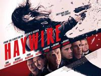
Steven Soderbergh es uno de los directores más eclécticos de Hollywood. Desde su debut con ‘Sexo, mentiras y cintas de vídeo’ no ha tenido problemas en ir saltando de producciones de corte comercial como ‘Ocean´s eleven’ a cintas más experimentales como ‘The girlfriend experience’. Podría decirse que es un culo inquieto que no quiere que se le clasifique como realizador de un tipo muy determinado de cine, pero también que aprovecha sus producciones más populares para luego dar un salto al vacío sin red. Me consta que hay gente que lo adora con pasión, pero yo me encuentro en un punto más intermedio, ya que por lo general disfruto de sus trabajos, pero tampoco hay ninguno que realmente me apasione y me haga querer rendirme a sus pies.
Habrá quien discuta que inscriba ‘Indomable’ (‘Haywire’) dentro de esa vertiente más experimental, ya que, en apariencia, no es más que otra cinta de gente dándose de leches con alguien queriendo completar su venganza personal. Sin embargo, aunque sólo sea por su osadía de confiar el papel protagonista a Gina Carano, una luchadora profesional experta en artes marciales mixtas con un currículum prácticamente inexistente en el séptimo arte. Además, uno recuerda casos como las horripilantes películas protagonizadas por Hulk Hogan en su día y se echa a temblar. Sí que podríamos decir que Dwayne ‘The Rock’ Johnson es una excepción relativa, pero lo que ahora nos importa es: ¿Le ha salido bien la jugada a Soderbergh con ‘Indomable’?
Lo primero que diferencia a ‘Indomable’ de una cinta de acción al uso es la capacidad de Soderbergh por trascender las limitaciones del guión de Lem Dobbs y construir una obra con personalidad propia. El primer acierto es dotar de cierta profundidad narrativa a la historia con los constantes saltos espaciales y temporales sin que eso de lugares a confusiones sobre lo que está pasando o en qué punto de la historia estamos en ese momento. Por encima de esa capa, tampoco tan meritoria y, en parte deudora del elemento de cine de espías del guión, sobresale una tarea de puesta en escena en la que los artificios no tienen espacio. Aquí no encontraréis grandes efectos especiales ni momentos de acción que no hay quien se lo crea, ya que Soderbergh ha vuelto a lo básico, al aspecto físico de la violencia, en la que sí, hay tiroteos, pero el cuerpo a cuerpo se convierte en algo esencial. Y sin trucajes en forma de cambiar de plano con rapidez para hacerle el trabajo más fácil a Carano. No, en ‘Indomable’, guste o no, la violencia vuelve al encanto de lo elemental. Además, Soderbergh también respeta la virtud de no alargar innecesariamente la película, error habitual del cine contemporáneo, para que así resulte más difícil cansarse y empezar a verle las costuras a una historia tópica desarrollada de forma más tópica aún y que tampoco sorprende al final. Sin embargo, eso no es problema si está bien hecho como es el caso.
La gran revelación de ‘Indomable’ es Gina Carano, luchadora profesional cuya carrera cinematográfica seguramente se hubiese visto limitada a producciones lamentables que en su mayoría jamás hubiesen sido estrenadas en una sala de cine. No es que ahora ya sea imposible que eso acabe sucediendo, pero sería una pena que el cine de acción no fuese capaz de asimilar a una gran heroína del cine de acción, donde uno apenas puede encontrar ejemplos realmente destacables. Sí, James Cameron potenció esa figura en su momento y el estreno de ‘Kill Bill’ parecía la ocasión ideal para terminar de remediarlo, pero no fue el caso, quizá por prejuicios, quizá por el lamentable nivel de producciones como ‘Aeon flux’, la única que realmente ha tenido algo de continuidad en este tipo de rol ha sido Milla Jovovich. En el caso que nos ocupa, Carano demuestra carisma, capacidad física y credibilidad para repartir estopa ante todo el que se le ponga por delante, y todo ello sin desentonar dramáticamente. Vamos, no es una actriz al nivel de Meryl Streep, pero tampoco una cara de palo. Lástima que la chica de ‘Los mercenarios 2’ no sea ella, pero no descarto que acabe apareciendo en una hipotética tercera entrega.
Sin embargo, uno de los aspectos que más se está resaltando en la campaña de promoción de la película es la parte masculina del reparto, valga por caso el hecho de que se ha obviado destacar a Carano en el cartel que encontraréis en vuestro cine más cercano para promocionarla. La cuestión es que la mayoría de apariciones especiales se pueden calificar como cameos de lujo, ya que la función de la mayoría de ellos (no todos, que conste) se servir como víctimas potenciales de la venganza personal de Carano. Por lo cual tampoco esperéis ver muchos minutos a Michael Fassbender, la gran revelación del año pasado, Antonio Banderas, Michael Douglas o Bill Paxton. Todos ellos cumplen su cometido a la perfección, pero el único rostro popular con peso real en la trama es Ewan McGregor, particular némesis personal de la protagonista y que sabe crear un villano respetable sin exacerbar los elementos odiosos del mismo. Son negocios y no algo personal. El resto del reparto simplemente se pasea por allí sin molestar (me cuesta entender qué ha visto Soderbergh en Channing Tatum para que sea el protagonista de su próximo trabajo). Tampoco podemos pedir mucho más teniendo en cuenta el escaso interés de sus personajes.
En definitiva, ‘Indomable’ es un thriller de acción por encima de la media habitual en producciones de este calibre. ¿El motivo? El buen hacer de Soderbergh, el acertado metraje reducido (hoy en día las películas duran demasiado) y un estupendo reparto de actores que Gina Carano comanda con efectividad. Más allá de eso no esperéis una gran historia (cintas con esta premisa vemos varias cada año), ni tampoco un desarrollo de la misma que vaya a dejaros boquiabiertos. Aquí lo que interesa es la acción física y la capacidad para crear a una heroína de acción creíble. Yo ya estoy deseando ver más producciones protagonizadas por Carano.
Thu, 01 Mar 2012 15:48:33 GMT
'Frankenweenie', primer tráiler de lo nuevo de Tim Burton
'Frankenweenie', primer tráiler de lo nuevo de Tim Burton
Actualización 19:40: Acaba de aparecer el tráiler doblado al castellano. Podéis verlo más abajo si os apetece. Hay un sector del público que adora a muerte el estilo de Tim Burton, llegando a importar poco la calidad real del contenido, ya que con tener ese aire burtonesco ya se dan por satisfechos. Luego hay muchos, entre los que me incluyo, que siempre han seguido con interés su carrera, pero que en los últimos tiempos no ha terminado de acertar del todo con sus trabajos. y es que su ‘Alicia en el país de las maravillas’ puede ser una de las diez películas más taquilleras de todos los tiempos, pero también era una producción sin alma cuyo interés se agotaba al de pocos minutos. Sin embargo, Burton no se rinde y este año va a estrenar dos películas. La primera es ‘Sombras tenebrosas’, pero de esa hasta el momento ni tan siquiera ha aparecido un mísero cartel aunque su estreno está bien cercano (¿miedo a mostrar algo desastroso o una forma como otra cualquiera de generar hype en el público?), pero de ‘Frankenweenie’ ya habíamos podido ver varias imágenes y un póster y hoy nos ha llegado el primer tráiler. ‘Frankenweenie’ nos cuenta la historia de cómo el pequeño Victor utiliza el poder de la ciencia para traer a la vida a su perro Sparky, que había sido atropellado, pero Victor es incapaz de mantenerlo en secreto y tendrá que lidiar con las consecuencias de sus acciones. Ya muchos sabréis que estamos ante un remake de un muy recomendable cortometraje dirigido por el propio Burton en 1984, así que habrá que ver si ha sabido estar a la altura o no. La película podrá verse en 2D y en 3D y está rodada con la técnica de animación de stop-motion. Además, podremos oír voces conocidas en la versión original como las de Winona Ryder, Martin Short, Catherine O´Hara o Martin Landau, aunque ahora queda rezar para que en el doblaje español no recurran a errores recientes de otras producciones animadas como confiar una de las voces al futbolista Andrés Iniesta. Su estreno se producirá el 5 de octubre en USA, pero aún se desconoce fecha para España. PD: Creo que es una gran ocasión para revisionar el cortometraje original y hacer comparaciones ahora que ya tenemos algo más sustancioso de este remake. Aquí os lo dejo en versión original subtitulada al castellano.
Actualización 19:40: Acaba de aparecer el tráiler doblado al castellano. Podéis verlo más abajo si os apetece.
Hay un sector del público que adora a muerte el estilo de Tim Burton, llegando a importar poco la calidad real del contenido, ya que con tener ese aire burtonesco ya se dan por satisfechos. Luego hay muchos, entre los que me incluyo, que siempre han seguido con interés su carrera, pero que en los últimos tiempos no ha terminado de acertar del todo con sus trabajos. y es que su ‘Alicia en el país de las maravillas’ puede ser una de las diez películas más taquilleras de todos los tiempos, pero también era una producción sin alma cuyo interés se agotaba al de pocos minutos.
Sin embargo, Burton no se rinde y este año va a estrenar dos películas. La primera es ‘Sombras tenebrosas’, pero de esa hasta el momento ni tan siquiera ha aparecido un mísero cartel aunque su estreno está bien cercano (¿miedo a mostrar algo desastroso o una forma como otra cualquiera de generar hype en el público?), pero de ‘Frankenweenie’ ya habíamos podido ver varias imágenes y un póster y hoy nos ha llegado el primer tráiler.
‘Frankenweenie’ nos cuenta la historia de cómo el pequeño Victor utiliza el poder de la ciencia para traer a la vida a su perro Sparky, que había sido atropellado, pero Victor es incapaz de mantenerlo en secreto y tendrá que lidiar con las consecuencias de sus acciones. Ya muchos sabréis que estamos ante un remake de un muy recomendable cortometraje dirigido por el propio Burton en 1984, así que habrá que ver si ha sabido estar a la altura o no. La película podrá verse en 2D y en 3D y está rodada con la técnica de animación de stop-motion. Además, podremos oír voces conocidas en la versión original como las de Winona Ryder, Martin Short, Catherine O´Hara o Martin Landau, aunque ahora queda rezar para que en el doblaje español no recurran a errores recientes de otras producciones animadas como confiar una de las voces al futbolista Andrés Iniesta. Su estreno se producirá el 5 de octubre en USA, pero aún se desconoce fecha para España.
PD: Creo que es una gran ocasión para revisionar el cortometraje original y hacer comparaciones ahora que ya tenemos algo más sustancioso de este remake. Aquí os lo dejo en versión original subtitulada al castellano.
Tue, 06 Mar 2012 21:23:37 GMT
Dwayne Johnson será Hércules
Dwayne Johnson será Hércules
Pocos actores hay en Hollywood en la actualidad que cuenten con una presencia física tan imponente como Dwayne ‘The Rock’ Johnson, antiguo luchador del aquí conocido como Pressing Catch. Seguramente Brett Ratner también sea de esa opinión, ya que lo ha elegido para ser el protagonista de la película que prepara con Hércules como protagonista. Además, siguiendo la moda de los últimos años de adaptar cuantos más cómics mejor, Ratner no tomará como base la mitología original del personaje, sino la visión del mismo que dio Steve Moore en su cómic ‘Hercules: The Thracian Wars’. A priori, la elección de Johnson parece un gran acierto, pero el hecho de que el director sea el temible Brett Ratner, responsable de lindezas como las tres entregas de la saga ‘Hora punta’. La trama de la historia del cómic se ambienta hace 3200 años, donde Hércules es un alma errante que sólo encuentra cierta satisfacción combatiendo. Durante sus batallas encuentra seis aliados con las mismas motivaciones, siendo finalmente contratados por el rey de Thrace para que adiestre a su ejército para que sean tan sanguinarios como ellos. Habrá que ver si Ratner mantiene el tono y devenir de la obra de Moore u opta por convertirlo en una mamarrachada sin ton ni son. El inicio del rodaje está previsto para el próximo octubre (y se llevará a cabo en Nueva Zelanda), ya que The Rock está bastante ocupado, ya que comenzará a rodar la sexta entrega de ‘A todo gas’ en mayo y también está confirmada su participación en el combate principal de Wrestlemania, lo que vendría a ser como la Superbowl de la lucha libre americana, el 1 de abril, para lo cual ya está haciendo apariciones semanales en los programas de la compañía. No creo que nadie pueda ponerles pegas en el apartado físico, pero ¿os convence la elección de The Rock como el nuevo Hércules? Vía | Collider
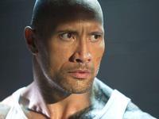
Pocos actores hay en Hollywood en la actualidad que cuenten con una presencia física tan imponente como Dwayne ‘The Rock’ Johnson, antiguo luchador del aquí conocido como Pressing Catch. Seguramente Brett Ratner también sea de esa opinión, ya que lo ha elegido para ser el protagonista de la película que prepara con Hércules como protagonista. Además, siguiendo la moda de los últimos años de adaptar cuantos más cómics mejor, Ratner no tomará como base la mitología original del personaje, sino la visión del mismo que dio Steve Moore en su cómic ‘Hercules: The Thracian Wars’. A priori, la elección de Johnson parece un gran acierto, pero el hecho de que el director sea el temible Brett Ratner, responsable de lindezas como las tres entregas de la saga ‘Hora punta’.
La trama de la historia del cómic se ambienta hace 3200 años, donde Hércules es un alma errante que sólo encuentra cierta satisfacción combatiendo. Durante sus batallas encuentra seis aliados con las mismas motivaciones, siendo finalmente contratados por el rey de Thrace para que adiestre a su ejército para que sean tan sanguinarios como ellos. Habrá que ver si Ratner mantiene el tono y devenir de la obra de Moore u opta por convertirlo en una mamarrachada sin ton ni son. El inicio del rodaje está previsto para el próximo octubre (y se llevará a cabo en Nueva Zelanda), ya que The Rock está bastante ocupado, ya que comenzará a rodar la sexta entrega de ‘A todo gas’ en mayo y también está confirmada su participación en el combate principal de Wrestlemania, lo que vendría a ser como la Superbowl de la lucha libre americana, el 1 de abril, para lo cual ya está haciendo apariciones semanales en los programas de la compañía. No creo que nadie pueda ponerles pegas en el apartado físico, pero ¿os convence la elección de The Rock como el nuevo Hércules?
Vía | Collider
Tue, 06 Mar 2012 16:27:10 GMT
'Neighborhood Watch', teaser tráiler y primer cartel de la nueva comedia de Ben Stiller
'Neighborhood Watch', teaser tráiler y primer cartel de la nueva comedia de Ben Stiller
El pasado verano mi compañera Beatriz nos informó sobre el rodaje de ‘Neighborhood Watch’, la nueva película protagonizada por Ben Stiller. Ya ha aparecido un primer cartel y un teaser tráiler de esta comedia de ciencia-ficción dirigida por Akiva Schaffer (‘Flipado sobre ruedas’/‘Hot Rod’) que se estrena el 27 de julio en Estados Unidos, un mes antes que en España. El vídeo es muy sencillo y llega a parecer un anuncio de la marca del coche que usan los personajes, pero debo reconocer que me ha parecido gracioso, sobre todo cuando ha aparecido en pantalla el gran Richard Ayoade, cuyo nombre es lamentablemente “olvidado” en el póster. Seth Rogen y Evan Goldberg (‘The Green Hornet’, ’50/50’) firman el guion de ‘Neighborhood Watch’, cuya trama gira en torno a una patrulla de vigilancia formada por cuatro hombres casados que necesitan una excusa para salir de casa y hacer algo divertido; lo que ninguno de ellos jamás podía imaginar es que, durante una de esas rondas de vigilancia, descubrirían nada más y nada menos que un plan de invasión extraterrestre. Stiller, Ayoade, Vince Vaughn y Jonah Hill son los cuatro actores principales de un reparto en el que también figuran Billy Crudup, Rosemarie DeWitt, Will Forte, Nicholas Braun y Doug Jones (ya tenemos al alien), entre otros. Habrá que esperar al siguiente tráiler para tener una idea más aproximada de qué podemos encontrar, pero a priori puede salir algo divertido, ¿no os parece? PD: De Ayoade, como su ópera prima sigue en el limbo de la distribución, y sé que ‘The IT Crowd’ (‘Los informáticos’ en España) no necesita reivindicación, os animo a descubrir ‘Garth Marenghi´s Darkplace’. Una deliciosa parodia del terror fantástico y las series de TV de los 80.
El pasado verano mi compañera Beatriz nos informó sobre el rodaje de ‘Neighborhood Watch’, la nueva película protagonizada por Ben Stiller. Ya ha aparecido un primer cartel y un teaser tráiler de esta comedia de ciencia-ficción dirigida por Akiva Schaffer (‘Flipado sobre ruedas’/‘Hot Rod’) que se estrena el 27 de julio en Estados Unidos, un mes antes que en España. El vídeo es muy sencillo y llega a parecer un anuncio de la marca del coche que usan los personajes, pero debo reconocer que me ha parecido gracioso, sobre todo cuando ha aparecido en pantalla el gran Richard Ayoade, cuyo nombre es lamentablemente “olvidado” en el póster.
Seth Rogen y Evan Goldberg (‘The Green Hornet’, ’50/50’) firman el guion de ‘Neighborhood Watch’, cuya trama gira en torno a una patrulla de vigilancia formada por cuatro hombres casados que necesitan una excusa para salir de casa y hacer algo divertido; lo que ninguno de ellos jamás podía imaginar es que, durante una de esas rondas de vigilancia, descubrirían nada más y nada menos que un plan de invasión extraterrestre. Stiller, Ayoade, Vince Vaughn y Jonah Hill son los cuatro actores principales de un reparto en el que también figuran Billy Crudup, Rosemarie DeWitt, Will Forte, Nicholas Braun y Doug Jones (ya tenemos al alien), entre otros. Habrá que esperar al siguiente tráiler para tener una idea más aproximada de qué podemos encontrar, pero a priori puede salir algo divertido, ¿no os parece?
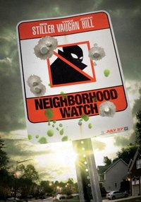
PD: De Ayoade, como su ópera prima sigue en el limbo de la distribución, y sé que ‘The IT Crowd’ (‘Los informáticos’ en España) no necesita reivindicación, os animo a descubrir ‘Garth Marenghi´s Darkplace’. Una deliciosa parodia del terror fantástico y las series de TV de los 80.
Tue, 06 Mar 2012 08:28:00 GMT
'Young Adult' o la insatisfacción que nos lleva a añorar el pasado
'Young Adult' o la insatisfacción que nos lleva a añorar el pasado
She wears denim wherever she goes. Says she’s gonna get some records by the Status Quo”, ‘The Concept’, Teenage Fanclub (1991). Jason Reitman vuelve a contar con un guion de Diablo Cody para ‘Young Adult’, que nos habla de una mujer divorciada, de treinta y siete años, que vive en Minneapolis, donde escribe libros para adolescentes, como “negra”. Cuando se entera de que un antiguo novio, ahora casado, acaba de tener un bebé, decide volver al pueblo y reconquistar a este amor del que aún no se ha olvidado, ya que piensa que todas sus frustraciones vitales se derivan de no haber seguido con su alma gemela. Durante el viaje necesitará terminar el primer borrador de la última novela de la serie. El título alude al tipo de ficción que ella escribe, pero en realidad nos indica que, si ‘Juno’ era una joven demasiado adulta, en este caso nos topamos con el personaje de Charlize Theron, que es demasiado joven para lo adulta que es. ‘Young Adult’ es un film en el que lo que va sucediendo ocurre de forma soterrada, por lo que la progresión aparenta ser escasa. Esta sensación aumenta con el hecho de que solo haya una trama, tratada de forma muy lineal y centrada, ya que el destino de todos los sucesos está muy claro. Reitman opta por un acercamiento naturalista para permitirnos entrar en los personajes, aunque no deja de indicar con los planos escogidos hacia dónde tenemos que dirigir la mirada para que sintamos así la reacción deseada. El sentimiento que acompaña a la mayoría de las escenas es la vergüenza ajena, que provocan las situaciones y también la interpretación idónea de Theron, quien deja traslucir, desde el inicio, que su personaje, por mucho que aparente ser deplorable, no está siendo ella misma, pues esconde problemas que impulsan ese comportamiento. Me encanta la forma en la que se cuenta la adolescencia de Mavis, una época en la que todo parecía perfecto, sin introducir flashbacks en paralelo, sino de una manera mucho más sutil y velada. Todos los diálogos son excelentes, ya que no necesitan sonar pedantes o ajenos a los personajes para estar cargados de filosofía. Hay dos momentos muy intensos, en los que la verdad empieza a aparecer, que son la discusión en el jardín con la nueva mujer de Buddy (Elizabeth Reaser), en un plano negativo para ella, y la que tiene más adelante con Sandra (Collette Wolfe), que le devuelve el optimismo. En estas dos conversaciones se dicen muchas verdades y se deja claro el meollo de la película: “me cuesta mucho trabajo ser feliz”. Ese enganche hacia un pasado y hacia una idea de lo que podría haber sido lo que refleja es una insatisfacción constante. Mientras que a otros nada les completa, para algunas personas parece tan fácil hallar la felicidad y no sabemos si es así porque se conforman o porque fingen o si en verdad con lo que tienen no necesitan más. El diálogo con su nuevo amigo tullido, en el que dice que de joven no estaba en su mejor momento, es asimismo muy elocuente. De esta cinta se puede elogiar la originalidad, a pesar de tratar algo que, de otras maneras, ya se nos ha presentado en numerosas ocasiones. Esta misma semblanza se ha perfilado en películas y series a través de esos rencuentros (“reunions”) que en EE. UU. parece que se hacían desde siempre y que aquí han comenzado a ocurrir gracias al Facebook. Cody ha pasado de esta fórmula, pero el efecto que ha credo es el mismo, ya que, al tratarse de un pequeño pueblo, todo el mundo está allí para salir al rencuentro de Mavis. Otro punto diferenciador lo compone el personaje de Patton Oswalt. Mientras lo esperable sería que ella se diese cuenta de que ya no hace buena pareja con Patrick Wilson y se enamorase de otro más adecuado, aquí el sustituto es un hombre incompleto con quien la protagonista toca fondo. De esa forma, su recuperación no depende de haber encontrado a un amor adecuado, sino tan solo de ella. Conclusión: por culpa del cartel, en el que visten a Charlize Theron como una “choni”, me había imaginado una película totalmente distinta y, al verla, me ha agradado mucho descubrir este retrato generacional que invita a la reflexión. Tantas veces he insistido en que una historia bien planteada no necesita que el espectador tenga rasgos en común con el protagonista para que se produzca la empatía, ya que esta supondrá que nos pongamos de su parte para ver si alcanza sus metas. En este caso, sin embargo, ha existido una fuerte conexión más allá de que los conflictos están bien planteados. Aunque en muchas cosas he sido lo opuesto a Mavis, sí coincido en un par de puntos, además de en el género y la edad, y gracias a ello, he conectado con ‘Young Adult’. También en Blogdecine | ‘Young Adult’, el encanto de lo despreciable.
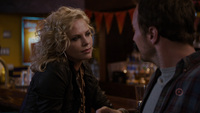
She wears denim wherever she goes. Says she’s gonna get some records by the Status Quo”, ‘The Concept’, Teenage Fanclub (1991).
Jason Reitman vuelve a contar con un guion de Diablo Cody para ‘Young Adult’, que nos habla de una mujer divorciada, de treinta y siete años, que vive en Minneapolis, donde escribe libros para adolescentes, como “negra”. Cuando se entera de que un antiguo novio, ahora casado, acaba de tener un bebé, decide volver al pueblo y reconquistar a este amor del que aún no se ha olvidado, ya que piensa que todas sus frustraciones vitales se derivan de no haber seguido con su alma gemela. Durante el viaje necesitará terminar el primer borrador de la última novela de la serie. El título alude al tipo de ficción que ella escribe, pero en realidad nos indica que, si ‘Juno’ era una joven demasiado adulta, en este caso nos topamos con el personaje de Charlize Theron, que es demasiado joven para lo adulta que es.
‘Young Adult’ es un film en el que lo que va sucediendo ocurre de forma soterrada, por lo que la progresión aparenta ser escasa. Esta sensación aumenta con el hecho de que solo haya una trama, tratada de forma muy lineal y centrada, ya que el destino de todos los sucesos está muy claro. Reitman opta por un acercamiento naturalista para permitirnos entrar en los personajes, aunque no deja de indicar con los planos escogidos hacia dónde tenemos que dirigir la mirada para que sintamos así la reacción deseada. El sentimiento que acompaña a la mayoría de las escenas es la vergüenza ajena, que provocan las situaciones y también la interpretación idónea de Theron, quien deja traslucir, desde el inicio, que su personaje, por mucho que aparente ser deplorable, no está siendo ella misma, pues esconde problemas que impulsan ese comportamiento. Me encanta la forma en la que se cuenta la adolescencia de Mavis, una época en la que todo parecía perfecto, sin introducir flashbacks en paralelo, sino de una manera mucho más sutil y velada.
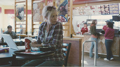
Todos los diálogos son excelentes, ya que no necesitan sonar pedantes o ajenos a los personajes para estar cargados de filosofía. Hay dos momentos muy intensos, en los que la verdad empieza a aparecer, que son la discusión en el jardín con la nueva mujer de Buddy (Elizabeth Reaser), en un plano negativo para ella, y la que tiene más adelante con Sandra (Collette Wolfe), que le devuelve el optimismo. En estas dos conversaciones se dicen muchas verdades y se deja claro el meollo de la película: “me cuesta mucho trabajo ser feliz”. Ese enganche hacia un pasado y hacia una idea de lo que podría haber sido lo que refleja es una insatisfacción constante. Mientras que a otros nada les completa, para algunas personas parece tan fácil hallar la felicidad y no sabemos si es así porque se conforman o porque fingen o si en verdad con lo que tienen no necesitan más. El diálogo con su nuevo amigo tullido, en el que dice que de joven no estaba en su mejor momento, es asimismo muy elocuente.
De esta cinta se puede elogiar la originalidad, a pesar de tratar algo que, de otras maneras, ya se nos ha presentado en numerosas ocasiones. Esta misma semblanza se ha perfilado en películas y series a través de esos rencuentros (“reunions”) que en EE. UU. parece que se hacían desde siempre y que aquí han comenzado a ocurrir gracias al Facebook. Cody ha pasado de esta fórmula, pero el efecto que ha credo es el mismo, ya que, al tratarse de un pequeño pueblo, todo el mundo está allí para salir al rencuentro de Mavis. Otro punto diferenciador lo compone el personaje de Patton Oswalt. Mientras lo esperable sería que ella se diese cuenta de que ya no hace buena pareja con Patrick Wilson y se enamorase de otro más adecuado, aquí el sustituto es un hombre incompleto con quien la protagonista toca fondo. De esa forma, su recuperación no depende de haber encontrado a un amor adecuado, sino tan solo de ella.

Conclusión: por culpa del cartel, en el que visten a Charlize Theron como una “choni”, me había imaginado una película totalmente distinta y, al verla, me ha agradado mucho descubrir este retrato generacional que invita a la reflexión. Tantas veces he insistido en que una historia bien planteada no necesita que el espectador tenga rasgos en común con el protagonista para que se produzca la empatía, ya que esta supondrá que nos pongamos de su parte para ver si alcanza sus metas. En este caso, sin embargo, ha existido una fuerte conexión más allá de que los conflictos están bien planteados. Aunque en muchas cosas he sido lo opuesto a Mavis, sí coincido en un par de puntos, además de en el género y la edad, y gracias a ello, he conectado con ‘Young Adult’.
También en Blogdecine | ‘Young Adult’, el encanto de lo despreciable.
Mon, 05 Mar 2012 17:08:34 GMT
'Men in Black 3', nuevo tráiler y dos carteles más
'Men in Black 3', nuevo tráiler y dos carteles más
Este año, como viene siendo habitual últimamente, está plagado de secuelas entre las grandes superproducciones que están por llegar. Sin embargo, no estoy del todo convencido de ‘Men in Black 3’ sea una de ellas, y por ello la he obviado entre las candidatas directas para que elijáis vuestra película más esperada de lo que queda de año. Allá por diciembre pudimos ver el teaser tráiler y los carteles promocionales no es que hayan sido nada del otro mundo. Tampoco ayuda que la segunda entrega, de cuyo estreno hace ya casi diez años, fuese una decepción enorme. Sin embargo, Sony habrá pensado que ya había pasado suficiente tiempo para intentar exprimir un poco más la franquicia. Lo que nos llega ahora es el tráiler (tanto en inglés como en castellano, aunque la versión doblada es algo más corta) quizá definitivo, ya que su fecha de estreno es el próximo 25 de mayo, cuando podremos verla tanto en 2D, como 3D o IMAX, y unos carteles que no ofrecen nada realmente nuevo, aunque sí sirve para ilustrar mejor el parecido entre Tommy Lee Jones y Josh Brolin, los cuales interpretan al mismo personaje, pero en diferentes etapas de su vida. Sin embargo, la gran estrella de la función de Will Smith, el cual también se verá secundado por gente como Alice Eve, Rip Torn, Jemaine Clement (el villano), Bill Hader, Emma Thompson y Michael Stuhlbarg. Además, Barry Sonnenfeld, que ya dirigió las dos primeras entregas, también repite como realizador. Ya habréis visto que el tráiler tampoco resulta especialmente excitante, pero imagino que acabaré viéndola por eso de ver si consiguen el pequeño milagro que fue la primera parte. El argumento, con viajes temporales incluidos, puede dar bastante de sí, aunque las declaraciones de su director reconociendo que el rodaje comenzó sin tener una resolución clara para la historia no inspira demasiada confianza. Y el hecho de contar con cuatro guionistas (Etan Cohen, David Koepp, Jeff Nathanson y Michael Soccio) suele ser indicativo de desastre en ese apartado. ¿A vosotros os llama la atención o también estáis muy recelosos sobre lo que pueda acabar saliendo de ‘Men in Black 3’? Vía | Comic Book Movie
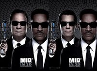
Este año, como viene siendo habitual últimamente, está plagado de secuelas entre las grandes superproducciones que están por llegar. Sin embargo, no estoy del todo convencido de ‘Men in Black 3’ sea una de ellas, y por ello la he obviado entre las candidatas directas para que elijáis vuestra película más esperada de lo que queda de año. Allá por diciembre pudimos ver el teaser tráiler y los carteles promocionales no es que hayan sido nada del otro mundo. Tampoco ayuda que la segunda entrega, de cuyo estreno hace ya casi diez años, fuese una decepción enorme. Sin embargo, Sony habrá pensado que ya había pasado suficiente tiempo para intentar exprimir un poco más la franquicia.
Lo que nos llega ahora es el tráiler (tanto en inglés como en castellano, aunque la versión doblada es algo más corta) quizá definitivo, ya que su fecha de estreno es el próximo 25 de mayo, cuando podremos verla tanto en 2D, como 3D o IMAX, y unos carteles que no ofrecen nada realmente nuevo, aunque sí sirve para ilustrar mejor el parecido entre Tommy Lee Jones y Josh Brolin, los cuales interpretan al mismo personaje, pero en diferentes etapas de su vida. Sin embargo, la gran estrella de la función de Will Smith, el cual también se verá secundado por gente como Alice Eve, Rip Torn, Jemaine Clement (el villano), Bill Hader, Emma Thompson y Michael Stuhlbarg. Además, Barry Sonnenfeld, que ya dirigió las dos primeras entregas, también repite como realizador.
Ya habréis visto que el tráiler tampoco resulta especialmente excitante, pero imagino que acabaré viéndola por eso de ver si consiguen el pequeño milagro que fue la primera parte. El argumento, con viajes temporales incluidos, puede dar bastante de sí, aunque las declaraciones de su director reconociendo que el rodaje comenzó sin tener una resolución clara para la historia no inspira demasiada confianza. Y el hecho de contar con cuatro guionistas (Etan Cohen, David Koepp, Jeff Nathanson y Michael Soccio) suele ser indicativo de desastre en ese apartado. ¿A vosotros os llama la atención o también estáis muy recelosos sobre lo que pueda acabar saliendo de ‘Men in Black 3’?
Vía | Comic Book Movie
Mon, 05 Mar 2012 14:25:50 GMT
Scarlett Johansson será Janet Leigh en una película sobre el rodaje de 'Psicosis'
Scarlett Johansson será Janet Leigh en una película sobre el rodaje de 'Psicosis'
Curiosa noticia. Tras ‘Mi semana con Marilyn’ (‘My Week With Marilyn’), donde se nos permite echar un vistazo a la conflictiva filmación de ‘El príncipe y la corista’ (‘The Prince and the Showgirl’), ahora nos quieren contar lo que pasó durante el rodaje de una película mejor y más importante, ‘Psicosis’ (‘Psycho’). Y Scarlett Johansson, que pudo encarnar a Marilyn Monroe en el primer film (rechazó el papel y cayó en manos de Michelle Williams) ha firmado para interpretar a Janet Leigh en el segundo, que por ahora se titula ‘Alfred Hitchcock and the Making of Psycho’. ¿Qué os parece, creéis que es la actriz más indicada para darle vida? Johansson se ha incorporado a un interesante reparto en el que también figuran James D´Arcy, Anthony Hopkins y Helen Mirren (la participación de estos dos últimos se sabe desde 2007). D´Arcy encarnará a Anthony Perkins, Hopkins a Alfred Hitchcock y Mirren a su esposa, Alma Reville; se supone que la trama se centrará en los esfuerzos de Hitchcock por sacar adelante su clásico de terror estrenado en 1960, algo que, bien narrado, debería resultar apasionante para todo cinéfilo. El inglés Sacha Gervasi (‘Anvil’) será el encargado de dirigir la película, una adaptación del libro homónimo escrito por Stephen Rebello, que John McLaughlin ha convertido en guion. Fox Searchlight está detrás del proyecto, para el que de momento no se ha fijado una fecha de estreno. PD: Ya puestos, que hagan una película sobre cómo se hizo ‘Blade Runner’. Mejor eso que la secuela/precuela/remake/reboot que está en marcha, ¿no? Vía | ComingSoon
Curiosa noticia. Tras ‘Mi semana con Marilyn’ (‘My Week With Marilyn’), donde se nos permite echar un vistazo a la conflictiva filmación de ‘El príncipe y la corista’ (‘The Prince and the Showgirl’), ahora nos quieren contar lo que pasó durante el rodaje de una película mejor y más importante, ‘Psicosis’ (‘Psycho’). Y Scarlett Johansson, que pudo encarnar a Marilyn Monroe en el primer film (rechazó el papel y cayó en manos de Michelle Williams) ha firmado para interpretar a Janet Leigh en el segundo, que por ahora se titula ‘Alfred Hitchcock and the Making of Psycho’. ¿Qué os parece, creéis que es la actriz más indicada para darle vida?
Johansson se ha incorporado a un interesante reparto en el que también figuran James D´Arcy, Anthony Hopkins y Helen Mirren (la participación de estos dos últimos se sabe desde 2007). D´Arcy encarnará a Anthony Perkins, Hopkins a Alfred Hitchcock y Mirren a su esposa, Alma Reville; se supone que la trama se centrará en los esfuerzos de Hitchcock por sacar adelante su clásico de terror estrenado en 1960, algo que, bien narrado, debería resultar apasionante para todo cinéfilo. El inglés Sacha Gervasi (‘Anvil’) será el encargado de dirigir la película, una adaptación del libro homónimo escrito por Stephen Rebello, que John McLaughlin ha convertido en guion. Fox Searchlight está detrás del proyecto, para el que de momento no se ha fijado una fecha de estreno.
PD: Ya puestos, que hagan una película sobre cómo se hizo ‘Blade Runner’. Mejor eso que la secuela/precuela/remake/reboot que está en marcha, ¿no?
Vía | ComingSoon
Mon, 05 Mar 2012 09:51:04 GMT
Encuesta de la semana | La película más esperada de 2012
Encuesta de la semana | La película más esperada de 2012
Tras la encuesta que os hizo mi compañero Juan Luis sobre vuestros favoritos para la pasada edición de los Oscar creo que es una ocasión ideal para sabes vuestras expectativas sobre los futuros estrenos. Y es que queda cierto vacío en el corazón del cinéfilo tras dejar atrás la temporada de premios y de estrenos más, por calificarlos de alguna forma, artísticos que el resto del año. Está bastante claro que los blockbusters parten con ventaja al ser un tipo de cine que consume un mayor sector del público, pero he preferido no limitar vuestras posibilidades directas (siempre queda la opción de Otra y que cada uno marque alguno de los títulos olvidados) a este tipo de producciones y he ampliado el rango de respuestas a 20 opciones para que sea más variada la elección de la película más esperada. Eso sí, he preferido limitar las opciones a estrenos de 2012 (aunque alguno pueda acabar llegando a España a principios de 2013). Imagino que ‘Los vengadores’, que es la opción cuyo último tráiler está más reciente, parte con cierta ventaja por eso de ser el último gran estreno del año del que habéis podido ver algo, pero bueno, no me entretengo más y os animo a participar en la elección del estreno más esperado para los lectores de Blogdecine. PD: Habrá que ver si luego alguna acaba colándose entre las mejores películas del año. En 2011 sólo un gran blockbuster se coló en mi lista
Tras la encuesta que os hizo mi compañero Juan Luis sobre vuestros favoritos para la pasada edición de los Oscar creo que es una ocasión ideal para sabes vuestras expectativas sobre los futuros estrenos. Y es que queda cierto vacío en el corazón del cinéfilo tras dejar atrás la temporada de premios y de estrenos más, por calificarlos de alguna forma, artísticos que el resto del año.
Está bastante claro que los blockbusters parten con ventaja al ser un tipo de cine que consume un mayor sector del público, pero he preferido no limitar vuestras posibilidades directas (siempre queda la opción de Otra y que cada uno marque alguno de los títulos olvidados) a este tipo de producciones y he ampliado el rango de respuestas a 20 opciones para que sea más variada la elección de la película más esperada. Eso sí, he preferido limitar las opciones a estrenos de 2012 (aunque alguno pueda acabar llegando a España a principios de 2013).
Imagino que ‘Los vengadores’, que es la opción cuyo último tráiler está más reciente, parte con cierta ventaja por eso de ser el último gran estreno del año del que habéis podido ver algo, pero bueno, no me entretengo más y os animo a participar en la elección del estreno más esperado para los lectores de Blogdecine.
PD: Habrá que ver si luego alguna acaba colándose entre las mejores películas del año. En 2011 sólo un gran blockbuster se coló en mi lista
Sun, 04 Mar 2012 14:06:45 GMT
'Piraña 3DD', tráiler y carteles de la secuela de 'Piraña 3D'
'Piraña 3DD', tráiler y carteles de la secuela de 'Piraña 3D'
Dobla la acción. Dobla el terror. Dobla las dimensiones. Ése es el eslogan de ‘Piraña 3DD’ (‘Piranha 3DD’, 2012), la segunda parte del remake de ‘Piraña 3D’ (‘Piranha 3D’, 2009) que dirigió Alexandre Aja. Se estrena el 23 de noviembre (¿no sería mejor en verano?) y aquí os dejo tanto el tráiler como los dos carteles que ha distribuido hasta la fecha Dimension Films. Por si os interesa. A mí la película de Aja me decepcionó, no la encontré tan divertida y salvaje como me esperaba, pero hay días en los que apetece desconectar de todo y ver una chorrada de estas características, cuya única pretensión es la de hacer reír a un público fácil, y a ser posible, con unas cervezas de más en el cuerpo. Christopher Lloyd y Ving Rhames (no, no murió en ‘Piraña 3D’) parecen ser los únicos actores que repiten en esta segunda entrega, que ha sido dirigida por John Gulager (‘Feast’). Si en la primera teníamos el cameo estelar de Richard Dreyfuss, por su papel en ‘Tiburón’, en esta ‘Piraña 3DD’ el invitado especial es el protagonista de la serie ‘Los vigilantes de la playa’, David Hasselhoff, que aparece presentado en pantalla como el socorrista más famoso del mundo. Pobrecillo, parece que solo lo llaman para hacer cosas así, recordemos que no hace mucho era también la estrella invitada en ‘Fuga de cerebros 2’. Danielle Panabaker, Katrina Bowden, Matt Bush, Chris Zylka, Meagan Tandy, David Koechner y Gary Busey son otros de los nombres protagonistas de una segunda parte que ha costado 20 millones de dólares y promete ser más gamberra que la anterior. ¿Vais a verla? PD: La secuela la han escrito Patrick Melton y Marcus Dunstan, guionistas de ‘Atrapados’ (‘Feast’) y ‘Saw VII 3D’, entre otras.
Dobla la acción. Dobla el terror. Dobla las dimensiones.
Ése es el eslogan de ‘Piraña 3DD’ (‘Piranha 3DD’, 2012), la segunda parte del remake de ‘Piraña 3D’ (‘Piranha 3D’, 2009) que dirigió Alexandre Aja. Se estrena el 23 de noviembre (¿no sería mejor en verano?) y aquí os dejo tanto el tráiler como los dos carteles que ha distribuido hasta la fecha Dimension Films. Por si os interesa. A mí la película de Aja me decepcionó, no la encontré tan divertida y salvaje como me esperaba, pero hay días en los que apetece desconectar de todo y ver una chorrada de estas características, cuya única pretensión es la de hacer reír a un público fácil, y a ser posible, con unas cervezas de más en el cuerpo.
Christopher Lloyd y Ving Rhames (no, no murió en ‘Piraña 3D’) parecen ser los únicos actores que repiten en esta segunda entrega, que ha sido dirigida por John Gulager (‘Feast’). Si en la primera teníamos el cameo estelar de Richard Dreyfuss, por su papel en ‘Tiburón’, en esta ‘Piraña 3DD’ el invitado especial es el protagonista de la serie ‘Los vigilantes de la playa’, David Hasselhoff, que aparece presentado en pantalla como el socorrista más famoso del mundo. Pobrecillo, parece que solo lo llaman para hacer cosas así, recordemos que no hace mucho era también la estrella invitada en ‘Fuga de cerebros 2’. Danielle Panabaker, Katrina Bowden, Matt Bush, Chris Zylka, Meagan Tandy, David Koechner y Gary Busey son otros de los nombres protagonistas de una segunda parte que ha costado 20 millones de dólares y promete ser más gamberra que la anterior. ¿Vais a verla?
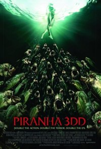
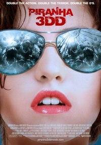
PD: La secuela la han escrito Patrick Melton y Marcus Dunstan, guionistas de ‘Atrapados’ (‘Feast’) y ‘Saw VII 3D’, entre otras.
Sat, 03 Mar 2012 13:10:49 GMT
'El símbolo perdido', Danny Strong escribe la película para Mark Romanek
'El símbolo perdido', Danny Strong escribe la película para Mark Romanek
La película de ‘El símbolo perdido’ (‘The Lost Symbol’) sigue en marcha. Hace dos años os informé sobre la intención de trasladar a la gran pantalla la novela de Dan Brown, una nueva aventura del personaje Robert Langdon, el protagonista de ‘El código Da Vinci’ (‘The Da Vinci Code’, 2006) y ‘Ángeles y demonios’ (‘Angels & Demons’, 2009). En un primer momento se contrató a Steven Knight (‘Promesas del este’) para adaptar la tercera entrega, pero recientemente se ha sabido que Sony Pictures le ha reemplazado por Danny Strong (‘Game Change’), quien reescribirá un guion que no ha debido gustar a Brown o a los productores. Akiva Goldsman y David Koepp se encargaron de escribir las dos películas anteriores. Lo más llamativo de todo este asunto es que se supone que Mark Romanek se encargará de la puesta en escena, en sustitución de Ron Howard, el responsable de las dos primeras entregas. El director de ‘Nunca me abandones’ (‘Never Let Me Go’) no parece el más indicado para ocuparse de un producto de estas características (más apropiado para gente como Brett Ratner o Jaume Collet-Serra, ¿no os parece?) pero ya veremos el resultado, puede que nos sorprenda. Howard se queda como productor, junto a su socio Brian Grazer, quienes seguro esperan tener entre manos otro éxito de taquilla. 750 millones de dólares recaudó la primera y casi 500 la segunda. Eso por si aún os estáis preguntando qué interés puede haber en llevar al cine un libro tan malo como ‘El símbolo perdido’. De momento no hay información oficial sobre el reparto, pero en principio se cuenta con el regreso de Tom Hanks para encarnar otra vez más a Langdon. PD: Actualmente Howard está ocupado dirigiendo ‘Rush’, un biopic del piloto Niki Lauda protagonizado por Daniel Brühl, Chris Hemsworth y Olivia Wilde. Vía | ThePlaylist
La película de ‘El símbolo perdido’ (‘The Lost Symbol’) sigue en marcha. Hace dos años os informé sobre la intención de trasladar a la gran pantalla la novela de Dan Brown, una nueva aventura del personaje Robert Langdon, el protagonista de ‘El código Da Vinci’ (‘The Da Vinci Code’, 2006) y ‘Ángeles y demonios’ (‘Angels & Demons’, 2009). En un primer momento se contrató a Steven Knight (‘Promesas del este’) para adaptar la tercera entrega, pero recientemente se ha sabido que Sony Pictures le ha reemplazado por Danny Strong (‘Game Change’), quien reescribirá un guion que no ha debido gustar a Brown o a los productores. Akiva Goldsman y David Koepp se encargaron de escribir las dos películas anteriores.
Lo más llamativo de todo este asunto es que se supone que Mark Romanek se encargará de la puesta en escena, en sustitución de Ron Howard, el responsable de las dos primeras entregas. El director de ‘Nunca me abandones’ (‘Never Let Me Go’) no parece el más indicado para ocuparse de un producto de estas características (más apropiado para gente como Brett Ratner o Jaume Collet-Serra, ¿no os parece?) pero ya veremos el resultado, puede que nos sorprenda. Howard se queda como productor, junto a su socio Brian Grazer, quienes seguro esperan tener entre manos otro éxito de taquilla. 750 millones de dólares recaudó la primera y casi 500 la segunda. Eso por si aún os estáis preguntando qué interés puede haber en llevar al cine un libro tan malo como ‘El símbolo perdido’. De momento no hay información oficial sobre el reparto, pero en principio se cuenta con el regreso de Tom Hanks para encarnar otra vez más a Langdon.
PD: Actualmente Howard está ocupado dirigiendo ‘Rush’, un biopic del piloto Niki Lauda protagonizado por Daniel Brühl, Chris Hemsworth y Olivia Wilde.
Vía | ThePlaylist
Sat, 03 Mar 2012 11:24:05 GMT
'Gru, mi villano favorito 2', primer cartel y teaser tráiler
'Gru, mi villano favorito 2', primer cartel y teaser tráiler
Vuelven los minions. Aquí os dejo el primer cartel y el teaser o primer tráiler de ‘Gru, mi villano favorito 2’ (‘Despicable Me 2’). Chris Renaud y Pierre Coffin vuelven a ocuparse de la dirección y Steve Carell repite como la voz del personaje principal, ese villano que descubre su lado bueno (y ñoño) tras cuidar a unas niñas huérfanas. Universal Pictures estrenará este largometraje animado del estudio Illumination Entertainment el 3 de julio de 2013, en salas 2D y 3D. Recientemente nos informó Beatriz que se había producido un cambio importante en el reparto de voces de la película, que en un principio iba a contar con el español Javier Bardem para dar vida al nuevo rival de Gru. En su lugar, Universal consiguió a un señor llamado Al Pacino, que hace tiempo fue considerado un gran actor. Jason Segel, Kristen Wiig, Russell Brand y Miranda Cosgrove también participan en ‘Gru, mi villano favorito 2’, que han escrito Ken Daurio y Cinco Paul (‘Horton’, ‘Gru’, ‘Hop’). La primera no me convenció, la encontré mecánica y demasiado infantil (es decir: tonta), por lo que en principio no me interesa esta segunda parte. Y menos aún después de haber visto el tráiler que tenéis a continuación, escandalosamente vago. Pero voy a esperar al siguiente vídeo de adelanto para decidir si voy a verla o no, no lo descarto. PD: ‘Gru, mi villano favorito’ (2010) recaudó más de 500 millones de dólares en las taquillas de todo el mundo.
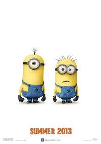
Vuelven los minions. Aquí os dejo el primer cartel y el teaser o primer tráiler de ‘Gru, mi villano favorito 2’ (‘Despicable Me 2’). Chris Renaud y Pierre Coffin vuelven a ocuparse de la dirección y Steve Carell repite como la voz del personaje principal, ese villano que descubre su lado bueno (y ñoño) tras cuidar a unas niñas huérfanas. Universal Pictures estrenará este largometraje animado del estudio Illumination Entertainment el 3 de julio de 2013, en salas 2D y 3D.
Recientemente nos informó Beatriz que se había producido un cambio importante en el reparto de voces de la película, que en un principio iba a contar con el español Javier Bardem para dar vida al nuevo rival de Gru. En su lugar, Universal consiguió a un señor llamado Al Pacino, que hace tiempo fue considerado un gran actor. Jason Segel, Kristen Wiig, Russell Brand y Miranda Cosgrove también participan en ‘Gru, mi villano favorito 2’, que han escrito Ken Daurio y Cinco Paul (‘Horton’, ‘Gru’, ‘Hop’). La primera no me convenció, la encontré mecánica y demasiado infantil (es decir: tonta), por lo que en principio no me interesa esta segunda parte. Y menos aún después de haber visto el tráiler que tenéis a continuación, escandalosamente vago. Pero voy a esperar al siguiente vídeo de adelanto para decidir si voy a verla o no, no lo descarto.
PD: ‘Gru, mi villano favorito’ (2010) recaudó más de 500 millones de dólares en las taquillas de todo el mundo.
Fri, 02 Mar 2012 22:55:06 GMT
'Happy Feet 2', con la música a otra parte
'Happy Feet 2', con la música a otra parte
Cuando en el 2006 nos llegó ‘Happy Feet’ (id, Goerge Miller) la sorpresa fue mayúscula para muchos. El director de films como ‘Mad Max’ (1977) y sus secuelas, nos dejaba con la boce abierta al hacerse cargo de un film de animación, alzándose ese año además con el Oscar a la mejor película en dicho campo, superando a la todopoderosa Pixar, que aquel año presentaba la muy odiada por muchos —no por mí— ‘Cars’ (John Lasseter, 2006). En cualquier caso y para quien esto firma, Miller nos brindó su mejor trabajo, un film que, aunque con algunos altibajos, era una clara muestra de emoción en el cine. Debido al espectacular éxito, una secuela era más que previsible, y con Miller de nuevo al frente, las expectativas tenían que ser altas. De esa forma la decepción puede ser mucho mayor, y así ha sido. ‘Happy Feet 2’ (‘Happy Feet Two’, George Miller, 2011) es uno de los films de animación más pobres visto en años, y evidentemente una secuela de lo más innecesaria. Como era de esperar, el protagonista de la primera entrega ha crecido, ahora es padre y trata de entenderse con su hijo, el cual tiene enormes problemas para mostrarse al mundo tal y como es. Todo lo que se desarrolla a partir de esa más que machacada premisa no está a la altura de lo expuesto en el film original. Una aventura de mucho menor fuelle, y el mensaje ecológico tampoco podía faltar. Todo ello servido de forma aparatosa, sin nada en el trabajo de animación que deje con la boca abierta, o que sorprenda un mínimo, o sin necesidad de ello, que nos proporcione un festín visual. Miller se muestra cansado, y la realización de esta segunda parte parece responder únicamente a necesidades económicas. El problema es que la falta de pasión a veces se paga, y en este caso, el film no ha sido tan taquillero como su predecesor. Con todo hay alguna cosa salvable en ‘Happy Feet 2’. Una de ellas es referente a los personajes secundarios del film, muchos más interesantes que los centrales. En esta segunda entrega las fugaces, por lo poco que salen, estrellas de la función son dos cigalas llamadas Will y Bill. Clara metáfora sobre la importancia del individualismo frente a la masa popular, del ser diferente, de marcar estilo al margen de lo establecido, y el hecho de ser los primeros en la cadena alimenticia forma parte del mesanje ecológico del film, algo que ya contenía el primer título aunque mejor insertado en la trama. Will y Bill son los dos personajes gracioso, la ansiada búsqueda de algo más poir parte de uno de ellos convierte su aventura en algo mucho más provechoso que el resto del film. Las voces de Brad Pitt y Matt Damon, que prestan sus divertidas cuerdas vocales a ambos personajes, es otro aliciente más y se nota lo bien que se lo han pasado ambos en tan divertidos roles. Para mí se acaba ahí todo el posible interés de ‘Happy Feet 2’. El resto se reduce a un trama mínima, en la que el vástago del pingüino de la primera entrega, encontrará al igual que su padre su propio lugar en el mundo. Un mundo caótico y destructivo en la que la presencia del hombre es vital. En ese aspecto Miller no juega sus bazas como en la primera entrega, en la que el hombre era tratado con suma inteligencia en una historia que trataba de advertir el mal que estábamos haciendo al planeta. La mezcla de animación e imagen real no resulta tan afortunada como antes, y al igual que muchos de los elementos del film, parece sólo diseñado para demostrar los avances tecnológicos en este tipo de cine. El problema radica en lo pobre que resulta la historia y la enorme falta de interés puesta en ella. Da igual que haya virtuosismo escénico en pantalla, el film resulta demasiado aburrido. En cuanto a las canciones que inundan el film, prácticamente todas resultan insoportables, algo que no sucedía en la primera entrega, que era todo un festival de ritmo y emoción en ese aspecto. Notemos como con el paso del tiempo algo que era muy habitual en un filn animado, sobre todo de la vieja Disney, ahora es algo que prácticamente parece evitarse, y es que muchas veces la inclusión de una canción rompe radicalmente el ritmo, o simplemente resulta forzado en un film que no sigue las constantes del cine estrictamente musical. Atención al instante madre/hijo separados por el enorme bloque de hielo, y ella, como toda madre, calma a su pequeñín con un canto, una canción Made in Ñoñoland, y que puede provocar espasmos cerebrales irreversibles. Así es la mayor parte de ‘Happy Feet 2’, un cúmulo de situaciones al exclusivo servicio de canciones a cada cual más horrorosa, o simplemente de las virguerías visuales que hoy día se pueden hacer. Es una pena que se hayan gastado 130 millones de dólares en esta película; muchos otros habrían hecho dos y tres películas estupendas con ese dinero, pero lo que es una verdadera pena es que George Miller haya gastado ánimo, esfuerzo e inspiración en un trabajo de lo más anodino. Un director que ya ha demostrado más de una vez su valía no debería perderse en operaciones comerciales de esta índole. Realmente curioso vivniendo de alguien que en el pasado ha mostrado una envidiable buena mano para las secuelas. Cierto antihéroe postacpocalíptico y cierto cerdo dan buena fe de ello.
Cuando en el 2006 nos llegó ‘Happy Feet’ (id, Goerge Miller) la sorpresa fue mayúscula para muchos. El director de films como ‘Mad Max’ (1977) y sus secuelas, nos dejaba con la boce abierta al hacerse cargo de un film de animación, alzándose ese año además con el Oscar a la mejor película en dicho campo, superando a la todopoderosa Pixar, que aquel año presentaba la muy odiada por muchos —no por mí— ‘Cars’ (John Lasseter, 2006). En cualquier caso y para quien esto firma, Miller nos brindó su mejor trabajo, un film que, aunque con algunos altibajos, era una clara muestra de emoción en el cine. Debido al espectacular éxito, una secuela era más que previsible, y con Miller de nuevo al frente, las expectativas tenían que ser altas. De esa forma la decepción puede ser mucho mayor, y así ha sido. ‘Happy Feet 2’ (‘Happy Feet Two’, George Miller, 2011) es uno de los films de animación más pobres visto en años, y evidentemente una secuela de lo más innecesaria.
Como era de esperar, el protagonista de la primera entrega ha crecido, ahora es padre y trata de entenderse con su hijo, el cual tiene enormes problemas para mostrarse al mundo tal y como es. Todo lo que se desarrolla a partir de esa más que machacada premisa no está a la altura de lo expuesto en el film original. Una aventura de mucho menor fuelle, y el mensaje ecológico tampoco podía faltar. Todo ello servido de forma aparatosa, sin nada en el trabajo de animación que deje con la boca abierta, o que sorprenda un mínimo, o sin necesidad de ello, que nos proporcione un festín visual. Miller se muestra cansado, y la realización de esta segunda parte parece responder únicamente a necesidades económicas. El problema es que la falta de pasión a veces se paga, y en este caso, el film no ha sido tan taquillero como su predecesor. Con todo hay alguna cosa salvable en ‘Happy Feet 2’.
Una de ellas es referente a los personajes secundarios del film, muchos más interesantes que los centrales. En esta segunda entrega las fugaces, por lo poco que salen, estrellas de la función son dos cigalas llamadas Will y Bill. Clara metáfora sobre la importancia del individualismo frente a la masa popular, del ser diferente, de marcar estilo al margen de lo establecido, y el hecho de ser los primeros en la cadena alimenticia forma parte del mesanje ecológico del film, algo que ya contenía el primer título aunque mejor insertado en la trama. Will y Bill son los dos personajes gracioso, la ansiada búsqueda de algo más poir parte de uno de ellos convierte su aventura en algo mucho más provechoso que el resto del film. Las voces de Brad Pitt y Matt Damon, que prestan sus divertidas cuerdas vocales a ambos personajes, es otro aliciente más y se nota lo bien que se lo han pasado ambos en tan divertidos roles.
Para mí se acaba ahí todo el posible interés de ‘Happy Feet 2’. El resto se reduce a un trama mínima, en la que el vástago del pingüino de la primera entrega, encontrará al igual que su padre su propio lugar en el mundo. Un mundo caótico y destructivo en la que la presencia del hombre es vital. En ese aspecto Miller no juega sus bazas como en la primera entrega, en la que el hombre era tratado con suma inteligencia en una historia que trataba de advertir el mal que estábamos haciendo al planeta. La mezcla de animación e imagen real no resulta tan afortunada como antes, y al igual que muchos de los elementos del film, parece sólo diseñado para demostrar los avances tecnológicos en este tipo de cine. El problema radica en lo pobre que resulta la historia y la enorme falta de interés puesta en ella. Da igual que haya virtuosismo escénico en pantalla, el film resulta demasiado aburrido.
En cuanto a las canciones que inundan el film, prácticamente todas resultan insoportables, algo que no sucedía en la primera entrega, que era todo un festival de ritmo y emoción en ese aspecto. Notemos como con el paso del tiempo algo que era muy habitual en un filn animado, sobre todo de la vieja Disney, ahora es algo que prácticamente parece evitarse, y es que muchas veces la inclusión de una canción rompe radicalmente el ritmo, o simplemente resulta forzado en un film que no sigue las constantes del cine estrictamente musical. Atención al instante madre/hijo separados por el enorme bloque de hielo, y ella, como toda madre, calma a su pequeñín con un canto, una canción Made in Ñoñoland, y que puede provocar espasmos cerebrales irreversibles. Así es la mayor parte de ‘Happy Feet 2’, un cúmulo de situaciones al exclusivo servicio de canciones a cada cual más horrorosa, o simplemente de las virguerías visuales que hoy día se pueden hacer.
Es una pena que se hayan gastado 130 millones de dólares en esta película; muchos otros habrían hecho dos y tres películas estupendas con ese dinero, pero lo que es una verdadera pena es que George Miller haya gastado ánimo, esfuerzo e inspiración en un trabajo de lo más anodino. Un director que ya ha demostrado más de una vez su valía no debería perderse en operaciones comerciales de esta índole. Realmente curioso vivniendo de alguien que en el pasado ha mostrado una envidiable buena mano para las secuelas. Cierto antihéroe postacpocalíptico y cierto cerdo dan buena fe de ello.
Fri, 02 Mar 2012 18:28:23 GMT
'Mi semana con Marilyn', copias insatisfactorias
'Mi semana con Marilyn', copias insatisfactorias
Cuando Marilyn lo hace bien, no quieres ver a nadie más. (Milton Greene)
Se ha hablado mucho de la influencia de Bob y Harvey Weinstein en un intento por justificar el éxito de ‘The Artist’ (distribuida por The Weinstein Company en EE.UU.) en varias entregas de premios durante los primeros meses del año, para no reconocer que todo se debe a la calidad de una película cautivadora. Sin embargo, apenas se ha mencionado a los hermanos en relación a otra película, ‘Mi semana con Marilyn’ (‘My Week With Marilyn’), cuando ésta además la han producido, han estado realmente implicados en su gestación, no solo se han encargado de la distribución. Supongo que el motivo es que la película no ha recibido tantos galardones, que al parecer es lo que molesta, pero ha optado a muchos y alguno ha conseguido. En el caso de esta producción todo se ha centrado en la metamorfosis de Michelle Williams, nominada al Oscar y ganadora del Globo de Oro (en la categoría de mejor actriz de comedia o musical) y el Independent Spirit Award por su interpretación de Marilyn Monroe. Apoyada en una estupenda labor de maquillaje y vestuario, Williams logra un notable parecido con Monroe, sobre todo en planos medios o generales, cuando la cámara no se centra completamente en su rostro y cobran importancia los movimientos, los gestos y la voz. La actriz, que a pesar de su juventud ya ha optado en tres ocasiones al Oscar, realiza por tanto una meritoria imitación de la mítica y trágica estrella de Hollywood, si bien se echa en falta en ocasiones a una mujer de un mayor parecido físico, como por ejemplo, Scarlett Johansson; una lástima que no le interesara al papel, creo que es lo más cercano a la ambición rubia que hay ahora mismo en la industria cinematográfica. En cualquier caso hay que aplaudir el esfuerzo y la interpretación de Williams, que como digo, consigue resucitar a Marilyn en bastantes momentos, un logro nada sencillo. El problema es que la ilusión no es completa, resulta intermitente, irregular, y por eso he hablado del parecido físico, que en este caso me parece importante. La Marilyn de Williams resulta creíble como mujer y como actriz, pero no como una criatura irresistible que enamoraba a todo aquel que la miraba. Y centrarse tanto en esto último es uno de los mayores errores de la película. Otra equivocación importante de ‘Mi semana con Marilyn’ es el débil y cargante personaje protagonista, que no es Marilyn a pesar del cartel, los premios y la publicidad. La historia, vendida como auténtica en los créditos iniciales (ni basada ni inspirada, ¡verdadera!), se nos muestra a través de los ojos de Colin Clark, a quien da vida un desafortunado Eddie Redmayne, con perpetua expresión de “maravillado”. La película parte de dos libros escritos por Clark en los que relata el conflictivo rodaje de la comedia romántica ‘El príncipe y la corista’ (‘The Prince and the Showgirl’) y habla de primera mano sobre las dos estrellas de la película, la actriz Marilyn Monroe y el director y actor Sir Laurence Olivier (Kenneth Branagh, cumpliendo una probable fantasía de juventud). Clark era un joven aficionado al cine de 23 años, sin experiencia alguna en el medio, que por pesado (según aparece en el film) consigue un empleo como tercer ayudante de dirección en la citada película de 1957. Su tozudez le brinda la oportunidad de conocer a su ídolo, Olivier, y a su amor platónico, Monroe. Pensarás que eso es tener muchísima suerte, pero la cosa se pone aún mejor para este chico… Marilyn llega a Londres en la cima de su carrera, recién casada con el prestigioso escritor Arthur Miller (encarnado por un correcto Dougray Scotttensión continúa al iniciarse el rodaje, Marilyn llega tarde al set y luego, ya en faena, tiene problemas para recordar y pronunciar los diálogos. Olivier comienza a desesperarse y pide ayuda a Clark, que cae simpático a la actriz, encantada con la ingenuidad, la pura fascinación y el respeto que demuestra, algo que no encuentra en los demás hombres de su vida. Miller abandona a Marilyn y se marcha de vuelta a Estados Unidos, convirtiendo a Clark en la persona más cercana a la actriz, ayudándola a sobrellevar una de las etapas más difíciles de su vida. Así llegamos a descubrir a la mujer que hay detrás del icono. Tanto el guionista, Adrian Hodges, como el director, Simon Curtis (debutante en cine, experimentado realizador televisivo, algo que se nota en la convencional puesta en escena), fracasan tratando de exprimir este sencillo material, del que se podría haber sacado más jugo. Algo más sobre Olivier, el trabajo de Marilyn (porque al fin y al cabo cumplió con su papel), el proceso de realización de una película bajo la mirada de un novato como Clark, su relación con la chica de vestuario… Pero la intención parece ser únicamente la de mostrar en pantalla las conocidas dos facetas de Marilyn, la de radiante estrella que todos querían poseer y la de mujer vulnerable e insegura necesitada de comprensión y amor. Y se hace de una manera clara, simple y superficial, sin profundizar, por lo que no se aporta nada nuevo ni valioso. Hodges y Curtis se contentan con crear un producto ligero y agradable, de cuidada factura, que resulte entretenido para el mayor número de espectadores; es el típico producto muy bien envuelto que se hace pensando en premios, se entiende por qué interesó a los Weinstein. Lamentablemente no hay interés por un retrato verdaderamente íntimo e intenso de una figura que aún hoy despierta una gran fascinación. Espero que haya más suerte con el proyecto de Andrew Dominik y Naomi Watts. También resulta decepcionante el escaso partido que se le saca a un reparto tan amplio y competente. Kenneth Branagh divierte con su caricaturesco retrato de Olivier, si bien se echa en falta un mayor rigor en la recreación del famoso personaje, aquí simple y evidente. Igualmente se desaprovecha la participación de Judi Dench (maravillosa como Dame Sybil Thorndike, eclipsa a todos durante sus breves apariciones), Toby Jones (Arthur Jacobs), Julia Ormond (Vivien Leigh), Emma Watson (Lucy, una chica del departamento de vestuario que conquista Clark antes de intimar con Marilyn; personaje un tanto prescindible), Dominic Cooper (Milton Greene) o Derek Jacobi (Sir Owen Morshead), que tienen menos presencia en pantalla de la que sería deseable. Sobre todo para tapar al soso personaje de Clark, que necesitaba mayor elaboración y un intérprete más carismático que Redmayne. En resumen, una película que entusiasmará a los fans de Marilyn, válida para pasar el rato y prescindible para el que busque algo más.
Cuando Marilyn lo hace bien, no quieres ver a nadie más. (Milton Greene)
Se ha hablado mucho de la influencia de Bob y Harvey Weinstein en un intento por justificar el éxito de ‘The Artist’ (distribuida por The Weinstein Company en EE.UU.) en varias entregas de premios durante los primeros meses del año, para no reconocer que todo se debe a la calidad de una película cautivadora. Sin embargo, apenas se ha mencionado a los hermanos en relación a otra película, ‘Mi semana con Marilyn’ (‘My Week With Marilyn’), cuando ésta además la han producido, han estado realmente implicados en su gestación, no solo se han encargado de la distribución. Supongo que el motivo es que la película no ha recibido tantos galardones, que al parecer es lo que molesta, pero ha optado a muchos y alguno ha conseguido. En el caso de esta producción todo se ha centrado en la metamorfosis de Michelle Williams, nominada al Oscar y ganadora del Globo de Oro (en la categoría de mejor actriz de comedia o musical) y el Independent Spirit Award por su interpretación de Marilyn Monroe.
Apoyada en una estupenda labor de maquillaje y vestuario, Williams logra un notable parecido con Monroe, sobre todo en planos medios o generales, cuando la cámara no se centra completamente en su rostro y cobran importancia los movimientos, los gestos y la voz. La actriz, que a pesar de su juventud ya ha optado en tres ocasiones al Oscar, realiza por tanto una meritoria imitación de la mítica y trágica estrella de Hollywood, si bien se echa en falta en ocasiones a una mujer de un mayor parecido físico, como por ejemplo, Scarlett Johansson; una lástima que no le interesara al papel, creo que es lo más cercano a la ambición rubia que hay ahora mismo en la industria cinematográfica. En cualquier caso hay que aplaudir el esfuerzo y la interpretación de Williams, que como digo, consigue resucitar a Marilyn en bastantes momentos, un logro nada sencillo. El problema es que la ilusión no es completa, resulta intermitente, irregular, y por eso he hablado del parecido físico, que en este caso me parece importante. La Marilyn de Williams resulta creíble como mujer y como actriz, pero no como una criatura irresistible que enamoraba a todo aquel que la miraba. Y centrarse tanto en esto último es uno de los mayores errores de la película.
Otra equivocación importante de ‘Mi semana con Marilyn’ es el débil y cargante personaje protagonista, que no es Marilyn a pesar del cartel, los premios y la publicidad. La historia, vendida como auténtica en los créditos iniciales (ni basada ni inspirada, ¡verdadera!), se nos muestra a través de los ojos de Colin Clark, a quien da vida un desafortunado Eddie Redmayne, con perpetua expresión de “maravillado”. La película parte de dos libros escritos por Clark en los que relata el conflictivo rodaje de la comedia romántica ‘El príncipe y la corista’ (‘The Prince and the Showgirl’) y habla de primera mano sobre las dos estrellas de la película, la actriz Marilyn Monroe y el director y actor Sir Laurence Olivier (Kenneth Branagh, cumpliendo una probable fantasía de juventud). Clark era un joven aficionado al cine de 23 años, sin experiencia alguna en el medio, que por pesado (según aparece en el film) consigue un empleo como tercer ayudante de dirección en la citada película de 1957. Su tozudez le brinda la oportunidad de conocer a su ídolo, Olivier, y a su amor platónico, Monroe. Pensarás que eso es tener muchísima suerte, pero la cosa se pone aún mejor para este chico…
Marilyn llega a Londres en la cima de su carrera, recién casada con el prestigioso escritor Arthur Miller (encarnado por un correcto Dougray Scotttensión continúa al iniciarse el rodaje, Marilyn llega tarde al set y luego, ya en faena, tiene problemas para recordar y pronunciar los diálogos. Olivier comienza a desesperarse y pide ayuda a Clark, que cae simpático a la actriz, encantada con la ingenuidad, la pura fascinación y el respeto que demuestra, algo que no encuentra en los demás hombres de su vida. Miller abandona a Marilyn y se marcha de vuelta a Estados Unidos, convirtiendo a Clark en la persona más cercana a la actriz, ayudándola a sobrellevar una de las etapas más difíciles de su vida. Así llegamos a descubrir a la mujer que hay detrás del icono.
Tanto el guionista, Adrian Hodges, como el director, Simon Curtis (debutante en cine, experimentado realizador televisivo, algo que se nota en la convencional puesta en escena), fracasan tratando de exprimir este sencillo material, del que se podría haber sacado más jugo. Algo más sobre Olivier, el trabajo de Marilyn (porque al fin y al cabo cumplió con su papel), el proceso de realización de una película bajo la mirada de un novato como Clark, su relación con la chica de vestuario… Pero la intención parece ser únicamente la de mostrar en pantalla las conocidas dos facetas de Marilyn, la de radiante estrella que todos querían poseer y la de mujer vulnerable e insegura necesitada de comprensión y amor. Y se hace de una manera clara, simple y superficial, sin profundizar, por lo que no se aporta nada nuevo ni valioso. Hodges y Curtis se contentan con crear un producto ligero y agradable, de cuidada factura, que resulte entretenido para el mayor número de espectadores; es el típico producto muy bien envuelto que se hace pensando en premios, se entiende por qué interesó a los Weinstein. Lamentablemente no hay interés por un retrato verdaderamente íntimo e intenso de una figura que aún hoy despierta una gran fascinación. Espero que haya más suerte con el proyecto de Andrew Dominik y Naomi Watts.
También resulta decepcionante el escaso partido que se le saca a un reparto tan amplio y competente. Kenneth Branagh divierte con su caricaturesco retrato de Olivier, si bien se echa en falta un mayor rigor en la recreación del famoso personaje, aquí simple y evidente. Igualmente se desaprovecha la participación de Judi Dench (maravillosa como Dame Sybil Thorndike, eclipsa a todos durante sus breves apariciones), Toby Jones (Arthur Jacobs), Julia Ormond (Vivien Leigh), Emma Watson (Lucy, una chica del departamento de vestuario que conquista Clark antes de intimar con Marilyn; personaje un tanto prescindible), Dominic Cooper (Milton Greene) o Derek Jacobi (Sir Owen Morshead), que tienen menos presencia en pantalla de la que sería deseable. Sobre todo para tapar al soso personaje de Clark, que necesitaba mayor elaboración y un intérprete más carismático que Redmayne. En resumen, una película que entusiasmará a los fans de Marilyn, válida para pasar el rato y prescindible para el que busque algo más.
Thu, 01 Mar 2012 20:11:55 GMT
Taylor Kitsch, Mark Wahlberg y Ben Foster en lo nuevo de Peter Berg
Taylor Kitsch, Mark Wahlberg y Ben Foster en lo nuevo de Peter Berg
Peter Berg debe haber quedado muy contento con el trabajo de Taylor Kitsch en ‘Battleship’, ya que el actor volverá a tener un papel protagonista en la próxima película del director. Kitsch, al que pronto veremos también en ‘John Carter’ (otra superproducción), encabezará el reparto de la adaptación al cine de ‘Lone Survivor’, las memorias de Marcus Luttrell, un veterano del ejército norteamericano. No es el único intérprete que ya ha conseguido Berg para su nuevo proyecto, Mark Wahlberg y Ben Foster darán vida a otros de los personajes principales de la trama. ‘Lone Survivor’ nos devuelve al año 2005 para narrar con detalle una peligrosa misión secreta en Afganistán llevada a cabo por Lutrell junto a otros tres compañeros de los Navy Seals (no marines, ojo, que se me enfadan los lectores yankilizados), cuyo objetivo era encontrar y liquidar a un líder talibán. Solo Luttrell sobrevivió para contar lo ocurrido. Supongo que no es casualidad que Universal Pictures haya dado luz verde a este proyecto poco después de que ‘Act of Valor’ haya sido número uno en la taquilla estadounidense, recaudando en un solo fin de semana el doble del dinero que costó. Veremos qué sale de todo esto, esperemos que algo intenso y entretenido. PD: ‘John Carter’ se estrena el 9 de marzo y ‘Battleship’ el 13 de abril. ¿Os interesa alguna de las dos? Vía | Deadline
Peter Berg debe haber quedado muy contento con el trabajo de Taylor Kitsch en ‘Battleship’, ya que el actor volverá a tener un papel protagonista en la próxima película del director. Kitsch, al que pronto veremos también en ‘John Carter’ (otra superproducción), encabezará el reparto de la adaptación al cine de ‘Lone Survivor’, las memorias de Marcus Luttrell, un veterano del ejército norteamericano. No es el único intérprete que ya ha conseguido Berg para su nuevo proyecto, Mark Wahlberg y Ben Foster darán vida a otros de los personajes principales de la trama.
‘Lone Survivor’ nos devuelve al año 2005 para narrar con detalle una peligrosa misión secreta en Afganistán llevada a cabo por Lutrell junto a otros tres compañeros de los Navy Seals (no marines, ojo, que se me enfadan los lectores yankilizados), cuyo objetivo era encontrar y liquidar a un líder talibán. Solo Luttrell sobrevivió para contar lo ocurrido. Supongo que no es casualidad que Universal Pictures haya dado luz verde a este proyecto poco después de que ‘Act of Valor’ haya sido número uno en la taquilla estadounidense, recaudando en un solo fin de semana el doble del dinero que costó. Veremos qué sale de todo esto, esperemos que algo intenso y entretenido.
PD: ‘John Carter’ se estrena el 9 de marzo y ‘Battleship’ el 13 de abril. ¿Os interesa alguna de las dos?
Vía | Deadline